| デート・ア・ライブ 16 狂三リフレイン <デート・ア・ライブ> (富士見ファンタジア文庫) | |
| 橘 公司 & つなこ | |
| Kadokawa / 富士見書房 (2017) | |
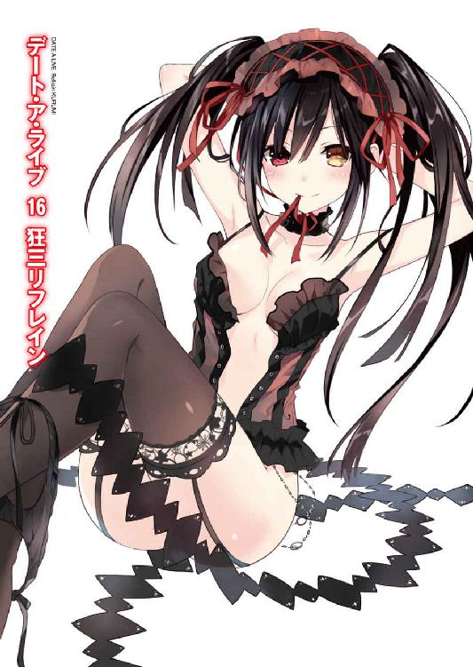
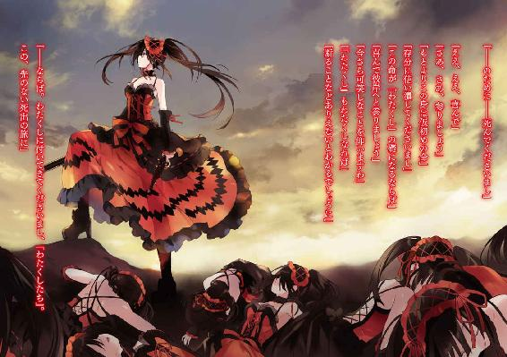
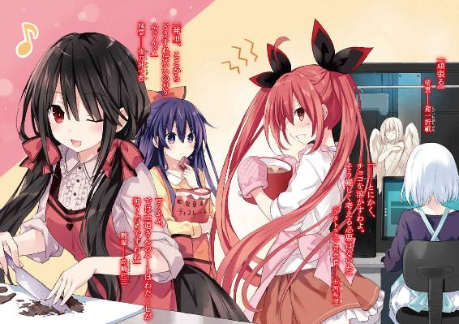
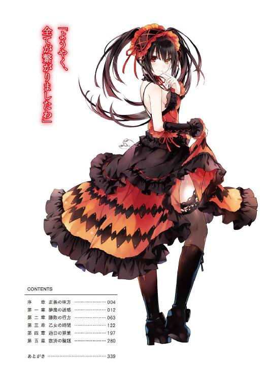
デート・ア・ライブ16
狂三リフレイン
橘 公司

富士見ファンタジア文庫
本作品の全部または一部を無断で複製、転載、配信、送信したり、ホームページ上に転載したりすることを禁止します。また、本作品の内容を無断で改変、改ざん等を行うことも禁止します。
本作品購入時にご承諾いただいた規約により、有償・無償にかかわらず本作品を第三者に譲渡することはできません。
本作品を示すサムネイルなどのイメージ画像は、再ダウンロード時に予告なく変更される場合があります。
本作品の内容は、底本発行時の取材・執筆内容に基づきます。
本作品は縦書きでレイアウトされています。
また、ご覧になるリーディングシステムにより、表示の差が認められることがあります。
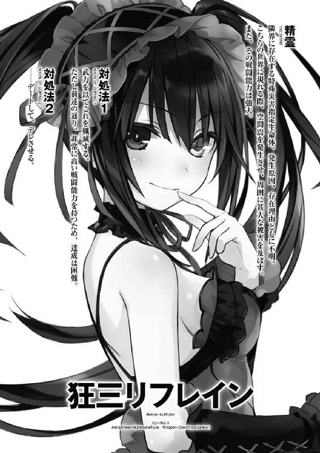
序章 正義の味方
時崎狂三が善良な少女であるというのは、彼女を知る全ての人間が共通して持つ評価だろう。
裕福な家に生まれ、子煩悩な両親に蝶よ花よと育てられた彼女は、幼い頃からさしたる不自由も不満も感じることなく、一〇と七年の人生を生きてきた。
別段誰かを憎んだり、逆に恨まれたりといったこともない、平穏極まる日々。
それはきっと幸せなことなのだろう。恐らく誰が彼女の人生を見てもそのように評するだろうし、事実彼女自身もそう思っていた。
けれど、何一つ悩みがなかったかと言われれば、決してそんなことはなかった。
──漠然とした、無力感。
何不自由ない環境で育まれたがゆえなのか、生来の性分なのかはわからなかったが、狂三の胸には、常にそれが蟠っていたのだ。
世を見渡せば、様々な艱難辛苦に苛まれている人々がいる。
戦争に巻き込まれ命を失う人もいれば、生まれながら病に冒され長く生きることができない人もいる。衣食もままならない人や、謂われのない差別を受ける人。あらゆる弱者を容赦なく痛めつける寒風が、世界には吹き荒れている。
テレビで、新聞で、雑誌で──そして己の両の目で。
それらを見る度、狂三の心は途方もない無力感で埋め尽くされるのであった。
もしかしたらそれは、誰もが一度は感じるものなのかもしれない。やがて皆世界は理不尽であることを知り、心に折り合いを付けて、自分の手の届かない世界の不幸から目を逸らしていくのだ。
けれど狂三の心の中には、いつまで経っても、それが残り続けたままだった。
自分にも何かができるかもしれない。
困っている人に手を差し伸べたい。
よく言えば純粋な、悪く言えば、幼稚で甘い正義感。
それが、誰にも見せることのない、時崎狂三の心の根に在る感情だった。
そして、もしかしたらそんな彼女だったからこそ、それは起こったのかもしれなかった。
──その日。
その日も、いつもと何ら変わらぬ日だったのだ。
時刻はおよそ一七時。友人とともに帰路に就いた狂三は、オレンジ色の夕陽に向かって歩きながら、何くれとない会話を交わしていた。
「──ねぇ、紗和さん」
「はい？」
狂三が名を呼ぶと、級友の山打紗和は目をぱちくりとさせながら首を傾げてきた。栗色の髪を三つ編みに結わえた、素朴な少女である。
「明日、何か予定はありまして？ もし何もなければ、またお家にお邪魔したいのですけれど」
「はい、それはいいですけど......あ、もしかして、またマロンを撫でたいんですか？」
紗和がふふっと微笑みながら言ってくる。マロンとは、紗和の家で買われている猫の名だった。人懐っこいアメリカンショートヘアで、初対面の人間にも甘えてくる可愛い子である。
「い、いえ、そういうわけではないのですけれど。ほら、また一緒にお勉強がしたいと思いまして......」
「ふふ、ではそういうことにしておきましょう。是非いらしてください。──でも、そんなに猫がお好きなら、狂三さんも飼えばよろしいのに」
紗和の言葉に、狂三はむむうと眉をひそめた。
「......母が猫アレルギーですの」
「なるほど。では将来一人暮らしをするまでお預けですね」
紗和はそう言ってまた笑うと、ひらひらと手を振って自分の家の方へと歩いていった。
狂三は手を振り返しながらそれに応えると、その背が見えなくなってから再び歩き出した。
何の文句も付けようがない、平和な毎日。友人にも恵まれ、飢えることもなければ、これといった病もない。
きっとこれからも、こんな日々が続くのだろう。狂三は心の奥にちくりと小さな痛みを覚えながらも、それを無視するように家路に就いた。
──狂三が違和感に気づいたのは、それから間もなくのことである。
「......え？」
幾度目かの路地を曲がったところで、狂三は目をしばたたかせると、辺りをキョロキョロと見回した。
いつの間にか周囲から、人が、動物が、あらゆる音が、消えていたのである。
まるで、異世界にでも迷い込んだかのような感覚。
一瞬、自分の聴覚に異常でも現れたかと思ったが──違う。自分の声や衣擦れの音は、未だはっきりと聞こえていた。
「な、何ですの、これは......」
狂三は困惑しながらも、とにかくこの場から離れようと走り出した。
だが──
「な......」
狂三は、すぐにその足を止めることになってしまった。
理由は至極単純。彼女の前に、正体不明の怪物が現れたからだ。
黒い影が人の形に凝り固まったかのような生物である。身体からはぼんやりとしたオーラのようなものが立ち上り、時折悲鳴とも咆哮ともつかない声を上げていた。
「ひ──ッ!?」
明らかに、尋常な存在ではない。
狂三は思わず息を詰まらせると、その場から逃れようとした。
が、焦燥に駆られた身体はそう上手く動かなかった。足がもつれ、その場に尻餅をついてしまう。
「きゃ......！」
【──────────】
すると、そんな狂三に気づいたかのように、怪物がゆっくりと狂三に近づいてきた。
「い......いや......っ！」
狂三はどうすることもできず、身を竦ませた。
が──次の瞬間。
「......!?」
視界が光に包まれたかと思うと、凄まじい爆発音がして、狂三の目の前に迫っていた怪物の姿が消え去った。
そしてそれと入れ替わるような格好で、一人の少女が姿を現す。
「──大丈夫？」
「え......あ──え、ええ......」
狂三は、戸惑いながらも顔を上げ、その少女の容貌を目にした。
長い髪を風に遊ばせた、端整な顔立ちの少女である。どこか物憂げで陰のある表情も、彼女の持つ神秘性を引き立てている。身に纏っているのはぼんやりとした光を帯びた美しいドレス。その全ての要素が、彼女を天使か女神のように見せていた。
一拍置いて、理解する。彼女があの影の怪物を倒し、狂三を助けてくれたのだと。
「あ、ありがとうございます。助かりましたわ......」
狂三が震える声で言うと、少女はゆっくりと手を差し伸べてきた。
その手を握り、どうにか立ち上がる。
「でも......今のは、一体......」
狂三が問うと、少女はふっと目を伏せて言葉を発してきた。
「──精霊。世界を殺す、怪物だよ」
「精霊......」
「......そう。それより、君は一体誰？ なぜこんなところにいるの？」
「あ......申し遅れました、時崎狂三と申しますわ。なぜこんなところにいるのかは......わたくしが聞きたいところですけれど」
狂三が言うと、少女はふむ、と何やら考え込むようにあごに手を当てた。
「......自然に迷い込んだ？ ふむ、もしかしたら君には適性があるのかもしれないな」
「は......？」
狂三は首を捻った。すると少女が、狂三の目をまっすぐに見つめてくる。
「──突然ですまないのだけれど、狂三。君は、力が欲しくはないかい？」
「力......ですの？」
「......ああ。私と同種の力が、欲しくはないかい？ きっと君ならば、霊結晶に適合する。もし君さえよければ──私と、世界を救って欲しい」
「────」
突然に発された、荒唐無稽な言葉。
きっと常人であれば一笑に付すか、不信感を覚えるところなのだろう。
狂三とて、そんな考えがなかったわけではない。
けれど、それよりも遥かに強く、心の裡にあったとある感情が、狂三の首を、半ば無意識のうちに前に倒していた。
「よかった。君がいてくれたら、百人力だ」
少女はそう言うと、たおやかな笑みを作り、言葉を続けてきた。
「──よろしく、狂三。私は崇宮澪。いわゆる......正義の味方だよ」
第一章 夢魔の誘惑
「狂、三......」
その名が喉から漏れ出たのは、別段意識をしてのことではなかった。
視界にその少女の姿を認めた瞬間、脳が、目が、全て彼女に収斂していき──半ば自動的に、声がこぼれ落ちたのだ。
しかしそれも無理からぬことではあった。
それくらいに──今五河士道の視線を支配する少女の姿は印象的であったのだから。
艶やかに光る射干玉の髪。
艶やかな色を帯びた白磁の肌。
艶めかしく笑みの形を取った淡紅の唇。
そしてその間から僅か覗く──時計の眼。
そんな姿をした少女など、この世界に一人しか存在しない。
──狂三。時崎狂三。
時を操る天使〈刻々帝〉を駆る、曰く『最悪の精霊』。
幾度となく士道たちの前に現れ、その命を狙い、脅威として立ちはだかり、そして時に隣に並び立った精霊が今、そこにいた。
「一体、なんで──」
その言葉も、半ば無意識のうちに漏れていた。
何しろ狂三が現れたのは深夜の路地裏でもなければ、敵に囲まれた窮地でもなく──
士道が通う高校、その二年四組の教室であったのだから。
日常の象徴とも言える風景の中に鎮座した、非日常の化身。そのアンバランスな存在感に、士道は思わず唾液で喉を湿らせた。
「──ふふ」
椅子に座った狂三は、そんな士道の表情を面白がるように頰を緩め、戯けるような調子で言葉を続けてきた。
「なんで......とは異なことを仰いますのね、士道さん？ 久々に復学してきた級友に対する言葉とは思えませんわ」
言って、自らの纏った衣服を示すように身を反らしてくる。
今彼女が身につけているのは、血と影の色で染め抜かれた霊装ではなく、ブレザーにプリーツスカートという、他の生徒たちと同じ高校の制服だったのである。
「おまえ......」
士道は眉をひそめながら、疑わしげな声を発した。
確かに狂三は数ヶ月前、このクラスに在籍していたことがある。どうやったのかは知らないが、一応正規の手続きを踏んでいたらしく、今も休学扱いになっているという話も聞いてはいた。
だが、だからといってその言葉を額面通りに受け取れるほど、士道も無邪気ではなかった。そもそもその編入も、士道の身を狙ってのことだったのだから。
「あら、あら」
そんな士道の視線から、剣吞な空気を察したのだろう。狂三は可笑しそうに微笑みながら立ち上がると、士道に向かって一歩足を踏み出してきた。
「シドー！」
「────」
そんな狂三の動きを警戒してか、士道の背後から二つの影が躍り出た。
長い夜色の髪と、肩口で切りそろえられた色素の薄い髪が士道の視界に現れる。士道と一緒に登校してきていた精霊、夜刀神十香と鳶一折紙である。
しかしそんな二人の行動は予想の範疇だったのだろう。狂三はさして驚くでもなく微笑を浮かべると、伸ばしていた手を自分の口元に持っていった。
「うふふ、相変わらず人気者ですわね、士道さん」
狂三はからかうようにそう言うと、ねっとりと舐るような視線で十香と折紙を見やった。
「ご安心くださいまし。わたくしも、こんなところでことを構えるつもりはありませんわ」
「何を......！」
「あなたの言うことを信用しろというの？」
「あらあら、嫌われてしまいましたわね。悲しいですわ」
狂三が、わざとらしい仕草で泣き真似をする。十香は一瞬「む......っ」と怯みかけたが、微塵も表情を変えない折紙を見て、ハッとした様子で険しい表情に戻った。
すると狂三が、泣き真似をしたままくすくすと笑い声を漏らす。
そして他のクラスメートに聞こえぬよう少し声をひそめながら、続けてきた。
「......わたくしがもし、なりふり構わず暴力的な手段に訴えようというのなら、今ここで天使を顕現させておりますわよ？」
「な──」
狂三の言葉に、思わず声を詰まらせる。狂三はそんな士道の反応に笑みを濃くすると、歌うように続けた。
「〈時喰みの城〉で校舎を覆い、意識を失った生徒さんたちを、わたくしの分身体が人質に取る......ご学友全員の額に銃口が突きつけられた状態で、士道さんが一体どのように対抗してくださるか、楽しみではありますわね」
「狂三......！」
「きひひ、ひひ」
士道が表情を険しくしながら名を呼ぶと、狂三は不気味な笑い声で以てそれに返してきた。
「今それをしていない事実を、わたくしの言葉の証明に代えさせていただければ幸いですわ。それでもまだ信じていただけないというのであれば──士道さんたちの意に沿うことも吝かではございませんけれど」
「......ッ、おまえ──」
妖しい口調に彩られた明確な脅迫に、士道は息を吞んだ。
十香と折紙が、警戒を強めるように拳に力を込める。しかし士道は、それを止めるように二人の肩に手を置いた。
「............、わかったよ」
「うふふ、相変わらず優しいお方ですわね」
士道の返答に、狂三が満足げに微笑み、髪をかき上げてくる。
その妖艶な様にたじろぎつつも、士道は警戒を解かなかった。
それはそうだ。何しろ狂三に士道を害するつもりがないというのなら、なぜ今さら復学してきたのかがわからなかったのである。
「狂三、おまえは一体」
「うふふ、怖いお顔をしないでくださいまし。──わたくしは、士道さんとの学生生活を謳歌しにきただけですわ」
「............」
狂三の言葉に、士道は無言になった。
すると狂三が戯けるように肩をすくめ、急に声を大きくしながら言葉を続けた。
まるで、周囲の生徒たちに聞かせるかのように。
「非道いですわ、非道いですわ。わたくしは士道さんと一緒に学校に通いたかっただけですのに。──ちゃんと士道さんの言いつけは守っているではありませんの。士道さんのお家では常に裸でおりますし、呼ばれればすぐにお側に侍ってご奉仕をいたしておりますのに。これくらいのご褒美があってもよいではありませんのー」
「んなッ!?」
狂三が口走った出鱈目に、士道は思わず声を裏返らせた。
「な、何適当なこと言ってるんだよ！ そんなこと──」
慌てて訂正をしようと声を張り上げる。
だが、遅い。狂三の言葉を聞いたクラスメートたちが、士道の方を見ながらひそひそと小声で話を始めていた。
「え......今の本当？ 五河くんまた何かやったの？」
「ていうかあれって、六月に転入してきた時崎さんだよな？」
「うん。確か休学してたはず......って、もしかして今までずっと五河の家に......!?」
などと、根も葉もない噂が凄まじいスピードで広まっていく。
「......おぉぅ......」
士道は絶望的な心地で額に手を当てた。反して狂三は、大層楽しそうにくすくすと笑う。
だが、今はそれに構っているような場合ではなかったし、もとより士道の悪評は今に始まったことでもない。士道は気を取り直すように髪をわしわしとかくと、大きなため息を吐いてから狂三に視線を戻した。
「......学校生活を楽しみにきただけ、か。本当にそれだけが目的なら、俺はおまえを歓迎するよ。何ならうちで歓迎パーティーを開いたって構わない。──もちろん、霊力は封印させてもらうけどな」
士道は眉根を寄せたままそう言った。
無論、本気ではない。否、正しく言うのなら、その言葉自体は本心からのものであったのだけれど、狂三がまともに取り合うとは思っていなかったのである。
──だが。
狂三の返答は、そんな士道の予想に反するものであった。
「ええ、ええ。構いませんわよ」
「......、へ？」
そんな狂三の反応に、間の抜けた声を発する。
狂三の発した言葉とその意味を反芻。自分の耳と言語野の異常を疑うこと数秒。ちらと十香と折紙の顔を見、その表情が驚愕に染まっていることを理解して──士道は、目を見開いた。
「狂三......？ 今、なんて──」
「わたくしの霊力を士道さんに託しても構わない、と言ったのですわ。ただし......」
狂三がピンと指を一本立てながら、妖艶に微笑んでくる。
「一つ、条件がございますけれど」
「............」
士道はごくりと息を吞んだ。
あの狂三が、そう簡単に自分の霊力を手放すとは思えない。その条件とやらが実現不可能な無理難題であろうことは想像に難くなかった。何なら、それを含めての冗談と考える方が妥当だろう。
しかし、士道はそれを聞き返さざるを得なかった。たとえ僅かであろうと、狂三の霊力を封印できる可能性があるのなら縋るしか選択肢はなかったし──それに何より、常にこちらを翻弄するように歪んでいる狂三の瞳に、微かではあるがいつもとは別の色が見て取れた気がしたのである。
意を決して、問う。
「......その条件ってのは、一体何なんだ」
「それは──」
と。
狂三が唇を動かした瞬間。教室に始業を報せるチャイムが鳴り響いた。
「あら、あら。もうそんな時間ですの。残念ですけれど、仕方ありませんわね」
そう言って狂三がくるりと士道に背を向け、自分の席へと歩いていこうとする。
「狂三！」
士道はたまらず狂三を呼び止めた。その声に驚いてか、数名のクラスメートが顔を向けてくる。
しかし当の狂三は別段驚いた様子も見せずくすくすと微笑むと、指を一本口の前に立ててみせた。
「詳しくは放課後にいたしましょう。今は人が多すぎますわ。それに──学生の本分は勉強でしてよ？」
その言葉だけを残して、狂三は士道のもとから去っていった。
◇
「......鳶一折紙。元ＡＳＴ隊員。当時の階級は一等陸曹。魔術師ランクＢ＋。数ヶ月前、一身上の都合により退職......」
ＤＥＭインダストリー日本支社の一室で。
モニタに表示された情報を読み上げながら、アルテミシア・アシュクロフトはふむとあごに手を当てた。
陽光を集めたような明るい色の金髪に、海のような碧眼が特徴的な少女である。柔らかな微笑が映えそうなその貌は、しかし今微かな困惑と疑念の色に染まっていた。
「──間違いない。この子だ」
アルテミシアは小さく呟くと、コンソールを操作して詳細情報を表示させた。
身長、体重、顕現装置の練度など、様々なデータがモニタに映し出されていく。
今アルテミシアがアクセスしているのは、ＤＥＭインダストリーが保有する、各国の魔術師データベースである。
現代における『魔術師』とは、呪文を唱えたり祈禱を行う者のことではなく、単独で顕現装置を運用し、随意領域を展開できる者のことを指す。
そしてそのためには脳に外科手術で以て小さな機械を埋め込む必要があり──それを個人で秘密裏に行うことはまず不可能といえた。
つまり、ＤＥＭ製の顕現装置を使用する魔術師の情報は、全てここに記録されていることになるのである。
今からおよそひと月前。アルテミシアは宇宙空間で精霊を襲撃しようとした際、一人の魔術師と見えた。もしやと思い念のため調べてみたところ、データベース上にその少女の情報を発見することができたのである。
「うーん......」
しかし。アルテミシアは不満そうに唇を尖らせた。
予想通り彼女の記録があったまではよかったのだが、記録されているのは基本的なデータばかりで、アルテミシアの望む情報は記されていなかったのである。
「──何をしているのですか、アルテミシア」
と。アルテミシアが椅子の背もたれに体重を預けるような格好で伸びをしたところで、背後からそんな声が聞こえてきた。
見やると、いつの間に現れたのか、そこに一人の少女が立っていることがわかる。アルテミシアよりも淡い色の金髪に、アルテミシアよりも深い色の碧眼。アルテミシアを太陽とするならば、月のように儚げな容貌の少女であった。
とはいえ、それはあくまでも姿容の話である。彼女を前にして、己を太陽と自称するような傲慢さは、アルテミシアは持ち合わせていなかった。
エレン・ミラ・メイザース。ＤＥＭインダストリー第二執行部部長にして、誰しもが認める人類最強の魔術師である。
「ああ、エレン。少しね」
アルテミシアが曖昧な調子で答えると、エレンは少し身を屈めてアルテミシアの手元を覗き込んできた。
「鳶一折紙のデータ......ですか。彼女がどうかしたのですか？」
「知ってるの？」
「ええ、少し」
アルテミシアが問うと、エレンが微かに目を細めながらそう言った。別段特筆すべきような反応ではなかったのだけれど、なぜだろうか、そこには少し忌々しげな色が見て取れるような気がした。
「何かあったの？ この子と」
「いえ、別に」
エレンがぷいと視線を外す。こうなったならエレンは答えない。アルテミシアは諦めて、もとの質問を続けることにした。
「この子って、精霊......だよね？」
「ええ。識別名〈エンジェル〉。この世界においては、かつて〈デビル〉の名でも呼ばれていた精霊です」
「そんな子が元ＡＳＴだったの？」
「そういうことになります。恐らく、精霊化を機にＡＳＴを辞めたのでしょう」
「ふうん......」
アルテミシアはあごを撫でながら再度モニタに表示された折紙の写真に目をやると、数秒のあと、呟くように続けた。
「ねえエレン。私ってこの子と会ったこと、ある？」
「......、なぜですか？」
「この子、私のことを知ってるみたいだったんだよね」
「............」
アルテミシアの言葉に、エレンが不意に無言になる。
だが数秒のあと、小さな吐息とともに言葉を続けてきた。
「アルテミシア。あなたはどうも自己評価が低いきらいがある。ＳＳＳのアルテミシア・アシュクロフトのことを元ＡＳＴ隊員が知っていたとしても、何もおかしくはないでしょう」
「うーん......そうかなあ」
「ええ。というかそれ以前に、あなたが彼女に会ったことがあるかなど、あなたがわからないのに私が知っているはずがないでしょう」
「あはは......それはそうかも？」
アルテミシアが肩をすくめながら苦笑すると、エレンがやれやれとため息を吐いてきた。
「そんなことより、アイクから招集です。行きますよ」
「あ、うん。ちょっと待って」
アルテミシアはパソコンをスリープモードにすると、エレンの背を追って部屋を出ていった。
「............」
無言で廊下を歩きながら、エレンはアルテミシアを一瞥した。
気配に敏感な彼女はその視線に気づき、にこりと微笑んでくる。エレンはばつが悪そうに視線を前に戻した。
鳶一折紙のことを訊かれたときは少々驚いたが、どうやら記憶を取り戻したわけではないらしい。
確かアルテミシアは先の戦いで、折紙と斬り結んでいるはずである。なるほど、そのときの会話を疑問に思うのも無理からぬことではあった。
戦場で言葉を交わしたくらいで記憶処理が解けることはないだろうが、念のためあとで会話のログを確認しておいた方がよいかもしれない。そんなことを考えながら、エレンはアルテミシアを伴ってエレベーターに乗った。
「ねえエレン。招集って、何か新しい作戦？」
「さあ。ただ、見せたいものがある、とは言っていました」
「見せたいもの？」
「ええ」
そんな何くれない会話を交わしながら、エレンたちはビルの最上階──ＤＥＭインダストリー業務執行取締役、アイザック・ウェストコットの部屋の前へと至った。
が。
「────」
そこでエレンは不意に足を止めた。扉の向こうに、何やら異様な気配を察知したのである。
確かにウェストコットは常人にはない威圧感を持つ男ではあるが、今扉一枚を隔てて蠢く『それ』は、そういったものとは明らかに別種の雰囲気を放っていた。
まるで──そう、夥しい数の怪物が、息を潜めてアルテミシアたちを待ち構えているかのような感覚だ。
「エレン」
「──ええ」
アルテミシアもそれに気づいたらしい。微かに眉を歪め、険しい表情を形作る。
「一体、これは？」
「わかりません」
「アイザックさんが襲撃された......なんてことはないよね？」
「まさか。ここは支社とはいえＤＥＭインダストリーですよ。我々の目をかいくぐって襲撃を仕掛けられる者など──」
言いかけて、エレンはハッと息を詰まらせた。
──いる。かつて、この日本支社を襲撃した者が存在した。
精霊〈ナイトメア〉。時と影を操り、己の過去の姿を分身体として無尽蔵に増やすことのできる精霊。
無論、警戒を怠っていたわけではない。だが、襲撃者といって思い浮かぶのは彼女を措いて他にいなかった。くっと奥歯を嚙みしめ、ノックもなしに扉を開け放つ。
「アイク！ 無事ですか、アイ──」
しかし、エレンは部屋に入ったところで足と言葉を同時に止めた。
理由は単純。部屋の中には精霊の姿などなく、ウェストコットが一人椅子に腰掛けているだけだったのである。
「これは......」
「──ああ、来たね、エレン。どうしたんだい、そんなに血相を変えて」
「......いえ。なんでもありません」
エレンが僅かに乱れた襟を整えながら言うと、エレンのあとを追うように入室してきたアルテミシアが、同じように意外そうな顔をした。
「あれ......？ 確かに何かがいるような気がしたんだけど......」
ウェストコットはそんな二人の様子を可笑しそうに眺めてから、ゆっくりと立ち上がり、窓の方へと歩いていった。
「さて、二人とも。今日来てもらったのは他でもない。──宇宙空間を漂っていた先の精霊が〈ラタトスク〉の手に落ちたことで、彼らの元には累計一〇体もの精霊が集まったことになった」
「......、面目次第もございません」
ウェストコットの言葉に、エレンは苦々しい表情をしながら頭を下げた。
宇宙空間での戦いにおいてエレンの駆る〈ゲーティア〉が、敵の空中艦〈フラクシナス〉に敗北を喫したことは記憶に新しい。あのときエレンが墜ちていなければ、戦いの結果はまた違ったものになっていただろう。
しかしウェストコットは、それを責めるような様子もなく言葉を続けた。
「別に糾弾をしようというわけじゃあない。君たちはよくやってくれているさ。それに、むしろ私は今この状況こそ、最高の結果に繫がると思っているのだがね」
「最高の結果、ですか」
「ああ。十分な数の精霊が揃い、私の手には、不完全な状態とはいえ魔王が在る。──エリオットがここにいないことが、心残りといえば心残りだがね」
「......っ」
エリオット。その裏切り者の名に、エレンは思わず表情を険しくした。
そんなエレンの表情に気づいてか、ウェストコットが肩をすくめながら続けてくる。
「ともあれ、そろそろ頃合いだろう。以前した話を覚えているかい、エレン。──イツカシドウに、『鍵』としての役割を果たしてもらうとしよう」
「......！ それは──」
エレンは目を見開いた。
ウェストコットがニッと笑みを浮かべ、右手を掲げる。
するとそこから漆黒の闇が溢れ出し、黒い装丁の書物が出現した。──魔王〈神蝕篇帙〉。彼が精霊〈シスター〉から奪い取った、本の形をした奇跡である。
その力は『全知』。この世で起きているありとあらゆる事象を『知る』ことができる、最凶最悪の能力だ。
「〈シスター〉の手によって検索妨害が施されてはいるものの、一点の調査にのみ力を注げば、〈ラタトスク〉の警戒の隙を衝くことは不可能じゃあない。
──そろそろ、本気で殺りにいこうか。容赦はいらない。人類最強の魔術師の力、存分に振るってくれたまえ」
「お任せください。必ずや、最高の成果をあなたに」
「ああ。期待しているよ、二人とも」
ウェストコットの言葉に応えるように、姿勢を正して首肯してみせる。アルテミシアも一拍遅れて、エレンに倣った。
「では、早速行動に移らせていただきます。すぐに──」
「──ああ、そうだ」
と、エレンが言いかけたところで、ウェストコットが思い出したように眉の端を動かした。
「何か」
「それについては、一つ言うのを忘れていたよ。──今回の作戦には、追加要員を用意しようと思う」
「追加要員......魔術師ですか。我々だけでは力不足と？」
エレンは努めて平静に......しかし不満げな色を隠しきれていない口調で返した。
しかしウェストコットは「いいや」と薄い笑みを浮かべながら頭を振ってくる。
「そうは言っていないさ。君は間違いなく当代最強の魔術師だろうし、アルテミシアもそれに次ぐ力を持っている。だが、数の力を侮ってはいけない。力を封印された精霊など君たちの前では子供同然だが、そんな精霊でも数名揃えば、数分間君たちの足を止めるくらいは可能だろう。そしてその数分があれば、目標は逃げ延びてしまうかもしれない」
「......それは」
「あはは、痛いところ突かれちゃったね」
アルテミシアが脳天気に笑ってくる。エレンは悔しげに眉根を寄せた。
ウェストコットの言うことは純然たる事実であった。個の力で勝るはずのエレンが目標を仕留め損なっているのは、毎回精霊たちが妨害に入ってくるからに他ならない。
ＤＥＭにも他の魔術師や無人兵器〈バンダースナッチ〉が存在するのだが、これらは今の精霊たちと比べても力の差が歴然とし過ぎているため、サポート役としては不安が残るのが実情だ。
「ですが、アイク。我々と行動をともにできるほどの魔術師がそういるとも思えません。中途半端なチームワークを要求されては、逆に我々のパフォーマンスが落ちかねません」
「ああ、そうだろうね」
エレンが言うと、ウェストコットはあっさりとそれを認めた。
「だが、安心してくれ。彼女たちは、きっと君たちの力になってくれるはずさ」
言いながら、ウェストコットがゆっくりと手を掲げ、パチンと指を鳴らす。
すると次の瞬間、まるで突風が吹いたかのように、ウェストコットの座っていた椅子の後方から、何枚もの紙が部屋中に舞い踊った。
「な──」
「わっ！」
突然のことにエレンとアルテミシアが驚いていると、その紙が部屋の壁にびっしりと張り付いていった。
そこでようやくその紙が、古びた本のページのような様相をしていることがわかる。
「これは......」
エレンは目を細めるようにしてその紙を見やったが──その目はすぐに驚愕に見開かれることとなった。
それはそうだ。何しろその紙の中から、幾人もの少女たちが這い出てきたのだから。
黒に近い灰色の髪。エレンたちを興味深そうに見つめる緑青の双眸。
だがもっとも特徴的なのは──彼女らが全員、寸分違わず同じ貌をしている、ということだった。
「......！ エレン」
「ええ......」
頰に汗を滲ませながら、アルテミシアの声に応える。
そう。『それ』は、エレンたちがこの部屋に入る前に感じ取った、無数の気配そのものだったのである。
「紹介しよう。魔王の娘たち──〈ニベルコル〉だ」
錆び付いたような色の双眸を笑みの形にしながら、ウェストコットはそう言った。
◇
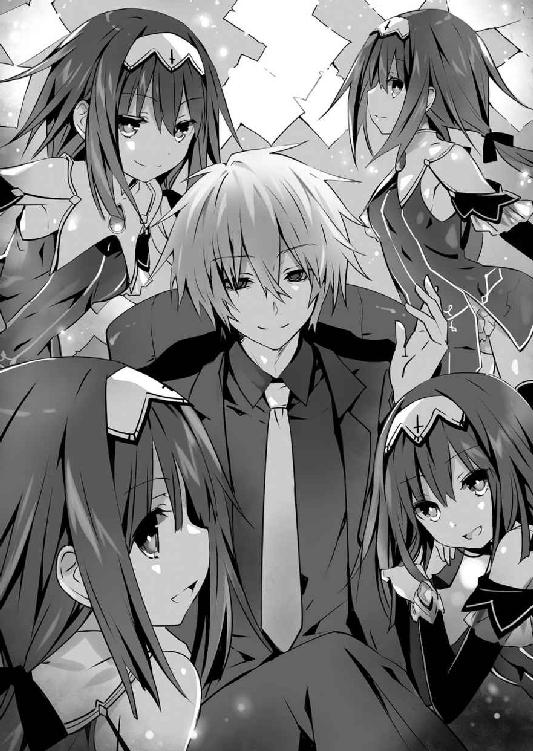
教室の窓から、オレンジ色の夕陽が差し込んでくる。
士道はちらと携帯電話の画面を一瞥して時間を確認すると、呼吸を整えるように細く息を吐いて顔を上げた。
授業が全て終わった放課後。クラスメートたちも既に下校し、教室には、士道と十香、折紙、そして隣のクラスの八舞耶俱矢・夕弦姉妹の姿しかなかった。彼女らもまた、かつて士道が霊力を封印した精霊である。
無論、士道が学校に残っている理由は一つ。
──狂三と、改めて話をするためである。
彼女が指定してきた場所はこの校舎の屋上。士道は意を決するように拳を固め、椅子から立ち上がった。
「──じゃあ、そろそろ行ってくるよ、みんな」
士道が言うと、十香が不安そうに眉を八の字にした。
「むう......大丈夫かシドー、やはり私たちも付いていった方がいいのでは......」
十香の言葉に、他の精霊たちも同意を示すようにこくこくとうなずく。
「十香の言うとおり。危険すぎる」
「闇を纏いし漆黒の精霊を相手取るには、我らの力が不可欠だろう」
「同意。夕弦たちもお供します」
士道は苦笑しながら十香の頭を撫でると、首をゆっくりと横に振った。
「ありがとうな、みんな。でも、大丈夫だ。確かに狂三は危険な精霊かもしれないけど......自分の言葉を翻したりはしない。──それに」
士道はグッと拳を握りながら言葉を続けた。
「これから狂三の霊力を封印しようって男が、一対一で会話もできないようじゃ、先が思いやられるってもんだろ？」
「シドー......」
十香は未だ不安そうな顔をしていたが、すぐにブンブンと首を振って、表情を無理矢理明るいものに変貌させてきた。
「......うむ、わかったぞ。武運を祈る！」
「ああ」
士道は力強くうなずくと、皆を残して教室を出ていった。
そして階段を上り、屋上に繫がる扉の前へ。
するとそこで、右耳に装着した小型インカムから、聞き慣れた声が聞こえてきた。
『わかってるとは思うけど、くれぐれも無茶はしないでちょうだい。いくら〈フラクシナス〉で監視をしているとはいえ、狂三の天使はちょっと規格外よ。何が起こるかわからないわ』
士道の妹にして〈ラタトスク機関〉の司令官・五河琴里である。今は空中艦〈フラクシナス〉で、上空から士道たちの様子を見守ってくれているのだ。
「ああ、わかってる。でも、精霊を助けるのが〈ラタトスク〉だろ？ 狂三がどんなに恐ろしかろうが、話し合うこともなく逃げ出したら、怖い妹様に尻を蹴られちまう」
『あら、私なら全身拘束くすぐりの刑の上、今まで集めた黒歴史を全世界に向けて公開してあげるところだけど。お尻を蹴るくらいで済ませてくれるなんて、その妹様は優しいのね。大切にしなさいよ？』
「......はは」
冗談めかして士道が言うと、琴里がフンと鼻を鳴らしながら返してくる。士道は頰に汗を垂らしながら小さく笑った。
先ほどから身体に纏わり付いていた緊張感が、幾分か和らいだ気がする。士道は気合いを入れるように頰を張ると、扉を開けて屋上へと出た。
「────」
廊下にいたときとは比べものにならないくらいの光が視界に広がる。士道は思わず目を細め──ゆっくりと、その直中にいる少女の姿に焦点を合わせていった。
「──あら」
フェンス越しに街を眺めていた狂三が、士道の登場に気づいてか、くるりと振り向いてくる。
「うふふ、ようこそ。よくいらしてくださいましたわね、士道さん」
狂三はそう言うと、トン、トンとステップを踏むような歩調で数歩こちらに歩み寄ったのち、スカートの裾を摘み上げて仰々しく礼をしてみせた。
そのあまりに優美な様に、一瞬目を奪われかける。
だが今は、そんなことに気を取られている場合ではない。思い直すように頭を振り、ジッと狂三の顔を見据えた。
「さあ、狂三。約束通り来たぞ」
「............」
士道が言うと、狂三はしばしの間士道の顔を見つめたのち、にいっと唇を歪めた。
「朝も思いましたけれど──少し、変わりましたわね、士道さん」
「え......？」
「初めて会ったときよりも、顔つきが大人びている気がしますわ。まあ、あれだけの修羅場をくぐってこられたのですから、当然かもしれませんけれど。うふふ......素敵になられましたわね」
「......か、からかうなよ」
士道は思わず怯むように返した。......今が夕刻であることに感謝する。今全身に浴びているのが夕陽でなければ、赤くなった頰は誤魔化せなかっただろう。
「それより、教えてもらおうか。朝の話の続きを。──おまえの霊力を封印する条件ってやつを」
士道の言葉に、狂三が再び唇を歪める。
あまりに美しく──それでいてあまりに恐ろしい笑みの形。
背に夕陽を背負う彼女の姿は、誇張でなく、士道を冥府へ誘う死の使いにすら見えた。
「ええ、ええ。ではお話ししますわ。わたくしは──」
──と。
落日の光に塗れた狂三が、言葉を零した、その瞬間。
「......っ!?」
突然、士道は強い目眩を覚えた。
否......語弊を嫌うのならば、目眩というのも少し違う。まるで、何者かによって強制的に電源を落とされるかのような感覚。痛苦や病苦を飛び越えて、一瞬にして身体を闇に蝕まれるかのような喪失感。
しかし士道は、その表現しがたい感覚を、以前にも覚えたことがあった。
銃弾に身体を貫かれたとき。
背後から胸に剣を突き刺されたとき。
そして──『鍵』によって身体の一部を消失させられたとき。
人体の生命活動の範囲を容易く超えた『何か』に、身体を蹂躙される、一瞬の感覚。
つまるところそれは、『死』の感覚で──
◇
一七三〇時、東京都天宮市上空。
白金のＣＲ‐ユニット〈ペンドラゴン〉を纏ったエレンは、身体の周囲に展開させた随意領域によって浮遊しながら、遥か眼下にある高等学校の校舎を注視していた。
彼我の実距離は一万メートルをゆうに超えるだろう。しかし魔術師たるエレンの目は、そこに蠢く人間の影をはっきりと捉えていた。
〈ナイトメア〉をはじめとする数体の精霊と、五河士道の姿を。
「準備はいいですか」
エレンは地上に視線を注いだまま、独り言を呟くように声を発した。
するとそれに応えるように、通信機を通してアルテミシアの声が聞こえてくる。
『もちろん。いつでもいいよ』
〈ペンドラゴン〉の姉妹機〈ラーンスロット〉を纏ったアルテミシアは今、別のポイントからエレンと同じ目標を見据えている。
エレンは無言をその返答に代えると、再び眼下に視線を落とし、背に装着されていたユニットに手を掛けて一気に引き抜いた。
折りたたまれていた刀身が展開し、金色の光が刃を形作る。
顕現装置によって出力された濃密な魔力の刃。レイザーブレイド〈カレドヴルフ〉。聖剣の名を冠した、〈ペンドラゴン〉の主兵装である。
「──行きますよ」
エレンは短く言うと、空を蹴るような格好で下方に向かって飛行を開始した。
そのスピードはまさに弾丸。通常であれば意識を失ってしまう──どころか、身体がバラバラになってしまってもおかしくはない速度で以て、目標へと迫る。
『目にも留まらぬ』などという陳腐な比喩表現が、今まさに現実のものとなっていた。今のエレンを捉えられる者など、そうは存在するまい。
──しかし。
「......ッ！ はッ！」
空を両断するように飛行していたエレンは、突然その進行を止めると、手にしていた剣を振り上げた。
瞬間、魔力光が弾け、辺りの雲を目映く照らす。
「く──」
如何に高出力を誇る〈カレドヴルフ〉とて、一振りでそのような火花を散らすことはない。
そう。そこにはもう一振り、魔力を帯びた剣が存在していたのである。
「──ひゅう。あのタイミングから止めやがるなんて、さすがですね、エレン」
エレンに向かって剣を振り下ろした少女が、ニッと唇の端を上げながら言う。
狼のようなフォルムのＣＲ‐ユニットを纏った少女である。一つに括られた髪と、左目の下にぽつんと打たれた泣き黒子が印象的であった。
「あなたは」
その声を聞き、その顔を認めて、エレンは思わず眉根を寄せた。
「真那！ なぜここに！」
「はッ！」
エレンが名を呼ぶと、少女──崇宮真那は、裂帛の気合いとさらなる追撃を以てそれに返してきた。
「ち──」
忌々しげに表情を歪め、随意領域を操作して姿勢を制御、その一撃を打ち払う。
そして後方へと離脱し、距離を取ってから、エレンはキッと真那を睨み付けた。すると真那が、からかように肩をすくめてくる。
「おやおや、怖ぇお顔ですね。あんまりしかめっ面ばかりしてると皺が増えますよ」
「......戯れ言を」
エレンは吐き捨てるように言うと、油断なく真那に視線を向けたまま思考を巡らせた。
真那がエレンの飛行を捉えた。それはいい。エレンほどではないにしろ、真那も十分、常識の埒外に在る魔術師だ。目標に狙いを定めたハンターを横から狙い撃つのは、直接そのハンターと相対するよりも難易度が低いだろう。
だがそれは、エレンのいる位置と、その目標を正確に知っているという前提があってのことだ。
──真那は、エレンが士道を狙うことを知っていた？
否。仮に情報が漏れていたとしても、エレンが士道を狙うポイントまで把握されていたとは考えづらい。
──ならば、士道が狙われる可能性を案じ、常に周囲を警戒していた？
否。警戒くらいはしていたとしても、士道を中心とした一万メートル圏内を四六時中見渡していることなど、如何に優秀な魔術師といえども不可能だ。
「......ふん」
頭の中で幾つもの可能性を否定し、エレンはゆっくりと髪をかき上げた。
今最も重要なのは、真那がエレンの居場所を知り得た理由を探ることではない。頭の中で指令を発し、別ポイントにいるアルテミシアに向けて通信を行う。
「アルテミシア。邪魔が入りました。態勢を立て直します。一時──」
と、そこまで言ったところでエレンは気づいた。
アルテミシアから返ってくるはずの声の代わりに、断続的なノイズが聞こえてくることに。
「これは......」
アルテミシアがやられたとは考えづらい。恐らく通信を阻害されているか、エレンと同じように何者かに襲撃を妨害され、戦闘に入っているのだろう。
ち、と小さく舌打ちをして、エレンは真那を睨む視線をさらに鋭くした。
「何をどうしたか知りませんが、見事な手並みです」
すると、なぜか真那までもが、どこか忌々しげな様子で顔を歪めてみせる。
「......本当に。見事過ぎてイヤになりやがります。エレン、あなたさえ出てこなかったなら、まだ笑い話で済んだのに」
「......？ なんですって？」
真那の不可解な言葉に眉根を寄せる。すると真那は、それ以上説明するつもりはないと言うように小さく頭を振ってみせた。
「あなたには関係のねー話です。──それよりも、どうしますか？ 絶好のタイミングはもう過ぎちまったみたいですけど」
「ふん」
真那が、挑発するように言ってくる。エレンは不機嫌そうに鼻を鳴らすと、レイザーブレイドの切っ先を真那に向けた。
「私の襲撃を止めてみせたことは褒めてあげましょう。ですがそれは、あなたが私に勝てて、初めて意味を成すものです」
「ふぅん？ じゃあやって──」
真那が受けて立つ、というようにレイザーブレイドを構える。
だがエレンは、それを最後まで聞かず、言葉を続けた。
「──と、あなたは言って欲しいのでしょうけれど」
するとそれに応ずるように、ユニットのバックパックが開き、その中に収められていたものが、随意領域の中に展開していった。
──その、何枚もの本のページが。
「......紙？」
真那が怪訝そうに言って、微かに姿勢を低く取る。
恐らく、エレンの行動の意味を測りかね、警戒しているのだろう。
エレンはフッと口元を緩めると、剣を握った右手の代わりに、左手を前方に掲げた。それに合わせて、何枚もの紙が規則的に並んでいく。
真那がエレンに勝つことはまず不可能。しかしウェストコットの言うとおり、時間を稼ぐだけならば十分可能だろう。
ならば今エレンがすべきは、真那の見え透いた挑発に乗ることではなく、一刻も早く任務に戻ることであった。
「......何のつもりでいやがりますか」
エレンの不可解な行動に、真那はぽつりと言葉を零した。
とはいえ別に、エレンに向かって問いかけたわけではない。仮にその声が届いていたとしても、警戒を示す敵に自らの手の内を晒す者はいないだろう。
「──出なさい、〈ニベルコル〉」
言ってエレンが、パチンと指を鳴らす。
瞬間、エレンの周囲に展開した紙が、まるで脈動するかのように蠢いたかと思うと、その中から、何人もの少女が這い出てきた。
黒衣に身を包んだ、幾人もの──同じ貌をした少女が。
「アア──」
「何......もう出番？」
「まあ、いいけどさ。お父様のためだし」
少女たちが気怠げに言い、それぞれ伸びやあくびをしながら、真那に視線を向けてくる。
「......っ！」
真那は思わず息を詰まらせた。
一瞬、幻影か幻覚を疑う。随意領域の中に自らの思い描く幻を投影することなど、エレンにとってはそう難しいことではなかったからだ。
だが──違う。
虚空から現れた少女の数、目算でおよそ二〇。
その全てから、幻影とは思えない確かな存在感が、そして濃密な力が感じ取れてしまったのである。
そう。それはまるで、〈ナイトメア〉時崎狂三の分身体と対面したときのような感覚であった。
そんな真那の表情を見てか、エレンが唇の端を上げる。
「あなたの相手は彼女たちで十分でしょう。──〈ニベルコル〉。私は目標に向かいます。あとは頼みましたよ」
そして少女たち──〈ニベルコル〉に向けて指示を下す。
すると〈ニベルコル〉と呼ばれた少女たちはエレンを一瞥し、ヒラヒラと手を振った。
「ああ、はいはい。行ってらっしゃい」
「ていうかエレンって、お父様とどういう関係なの？ 愛人？」
「えぇー、それはないって。いくらなんでもお父様趣味悪ーい」
きゃはは、と少女たちが笑い合う。
「......な」
そんな反応が予想外だったのか、エレンがぴくりと眉の端を動かす。
しかし、真那の前で動揺を見せることを嫌ったのだろう。すぐに気を取り直すように首を横に振り、下方──士道たちのいる高校へと視線を向けた。
「ッ、行かせねーです......！」
真那は襲撃を阻止すべく、スラスターを駆動させようとする。
が、真那が動いた瞬間、一瞬前まで女子高生のように笑い合っていた〈ニベルコル〉が、一斉に針のような鋭い視線を向けてきた。
「く......」
真那は渋面を作って奥歯を嚙みしめた。
恐らく、一対一であれば真那が〈ニベルコル〉に後れを取ることはまずない。だが、その数が少なく見積もって二〇、しかもその目的が、真那を倒すことではなく、真那にエレンの邪魔をさせないことだとしたなら話は別だった。
二〇人の妨害を振り払い、自分よりも練度の勝る魔術師・エレンの行動を阻害する──あまりに現実感のない思考に、真那は頰を汗が伝うのを感じた。
明らかに、手勢が足りない。それこそ、〈ニベルコル〉のように何人もの増援がなければ──
「──あら、あら」
と。
真那がそんなことを考えていると、不意に背後から、そんな不快極まる笑い声が響いてきた。
「......うん？」
「何あれ。同じ顔が幾つも。うわ、なんか怖い」
「あはは、あたしたちが言っちゃお終いじゃない？ それ」
真那と対していた〈ニベルコル〉たちが、口々に言う。
するとそれに応えるように、真那の背後から、何人もの人影が進み出てきた。
赤と黒の霊装。左右不均等に括られた髪。そして──かちかちと時間を刻む左目。
精霊・時崎狂三と寸分違わぬ姿をした分身体たちが、まるで真那に助勢するかのように並び立ったのである。
「......〈ナイトメア〉」
真那が左方に視線を向け、忌々しげに言うと、狂三は大層可笑しそうに笑みを向けてきた。
「奇遇ですわね、真那さん。お困りでしたら手を貸しますわよ？ わたくしこれでも、弱い者いじめは嫌いですの」
「どの口がほざきやがるんですか。そのよく回る舌、素っ首ごと落としてやりますよ」
「あら、怖いですわ、怖いですわ。......でェ、もォ、そんな強情を張っていられる状況ですの？ 真那さん一人では、彼女たちを止めるのは難しいと思いますけれど」
「......ち」
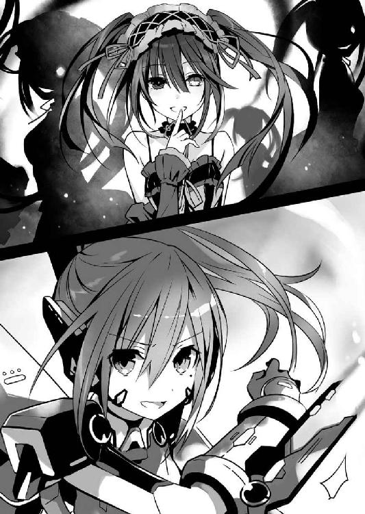
真那は嫌悪感を隠すこともせずに舌打ちを零すと、レイザーブレイド〈ヴォルフテイル〉を構えた。
「全員片付け終えやがったら、次はあなたをぶッ殺してやります！」
◇
「──道さん、士道さん」
「............！」
狂三に名を呼ばれ、士道はハッと目を見開いた。
「え......、あ......れ......？」
呆然と声を漏らし、辺りを見回す。
今士道が立っているのは、士道たちが通う来禅高校の屋上であった。対面には、美しい夕陽に彩られた狂三が立っている。
そこまで認識したところで、士道の頭の中には、ふと自問めいた思考が浮かんできた。
──俺は、何を当たり前のことを確認しているんだ？
そう。今士道が確かめたのは、わかりきったことばかりだったのである。
数秒間意識が盗まれ、その後再度初めから記憶が辿られたかのような違和感。ゲームでいうところのリセットボタンでも押されたかのような感覚だった。
「大丈夫ですの、士道さん」
「あ、ああ......すまん。少しボーッとして──」
が──そこでまたも、妙な違和感に襲われる。
夕陽を背負った狂三の姿が、先ほどまでと少し異なって見えたのである。
否......正確に言うのなら、どこがどう変わったというわけではない。
だが、何というのだろうか、いつも超然と余裕を纏っている狂三の顔に、僅かばかりの疲弊が見て取れるような気がしたのである。
「狂三......？ おまえ、何か......」
「──あら、あら？」
士道が言いかけると、狂三はぴくりと眉の端を揺らしたのち、いつものような調子で声を発してきた。
「何かわたくしにおかしなところでもございまして？」
「......あ、いや」
一瞬にして狂三が、士道の知る狂三の顔に戻る。士道は思わず言葉を濁した。
確かに様子が違って見えたのだが......具体的にどこがどう違うと指摘できるようなレベルではなかったのである。
「──さて、では話を整理いたしましょう」
そんな士道の思考を知ってか知らずか、狂三が大仰に身振りを加えながら話を続けてくる。
「わたくしの目的は、以前と何も変わっておりませんわ。士道さんがその身に蓄えた精霊の霊力......それをいただきたいだけですの。復学の理由も至極単純。先の六喰さんを封印したことにより、士道さんの身体には実に一〇人分もの霊力が蓄積されていますでしょう？ うふふ、そろそろ頃合いかと思いまして」
「............」
士道は狂三から視線を外さず、無言を以てそれに応えた。つ......と、頰をひとすじ、汗が伝っていく。
『いただく』。それはつまり、霊力を士道ごと食らうということであり──士道の死と同義である。いくら精霊の頼みとはいえ、士道としては許容することはできなかった。
とはいえ、それは狂三も重々承知しているのだろう。妖しい仕草で指を一本自分の唇に触れさせ、ニィと笑いながら続けてくる。
「そして士道さんの目的は、わたくしの霊力を封印すること......そうですわよね？」
「......、ああ。ただ、それだけじゃ不十分だな」
「と、仰いますと？」
士道の言葉に、狂三が小首を傾げてくる。士道はビッと指を突きつけた。
「おまえの霊力を封印して、おまえに今までの罪の償いをさせて──その上で、おまえに幸せな生活を送ってもらう。それが俺の、俺たちの究極目標だ」
「あら、あら」
士道が言うと、狂三は可笑しくてたまらないといった様子で身を折った。
「うふふ、士道さんはお優しいですわね。──ですが残念ながら、わたくしもそれを受け入れるわけにはいきませんわ。士道さんの言う『幸せな生活』に興味がないではありませんけれど、わたくし、霊力を失うわけにはいきませんの」
狂三が、唇に当てていた指をすっと前に掲げる。
「さて、困りましたわね。わたくしと士道さん、二人の望みはまさに平行線。このままではどちらの希望も叶わぬまま、無為に時が過ぎゆくばかり......」
すると狂三はもう片方の手でも人差し指を立てると、先に掲げた指へと近づけていった。
「ねぇ、士道さん」
妖艶に微笑んで、狂三が指と指を触れ合わせる。
まるで──口付けをさせるかのように。
「このまま二つの線が永遠に交わらず、双方の希望が宙に浮いたままでいるよりも、片方の望みが成就した方がよいとは思いませんこと？
──たとえ、それによってもう片方が、全てを失うことになったとしても」
狂三が小首を傾げるような所作で言う。
「......っ」
士道は、その言葉に含まれた剣吞な雰囲気を察して身体に緊張を走らせた。
数瞬の間、辺りに緊迫した空気が流れる。
しかし、そんな空気を作り出した当の狂三は、一人くすくすと笑ってみせた。
「そう構えないでくださいまし、士道さん。言ったはずですわよ。わたくしは、力ずくで士道さんの霊力を奪うつもりはございませんわ」
「......じゃあ、一体どうやって」
疑わしげな目で士道が問うと、狂三はその質問を待っていた、というように大仰に手を開いてみせた。
「うふふ、そこは士道さんの流儀に則ってさしあげますわ」
「え......？」
「ふふ」
狂三はその場でくるりと身を翻すと、ステップを踏むようにトン、トン、と靴底で床を打ち鳴らした。
「──わたくしと士道さん、相手をデレさせた方の勝ち......というのはいかがでして？」
「........................へっ？」
予想外の提案に。
士道は、啞然とした声を発してしまった。
「デレさせた方の......勝ち？」
「ええ、ええ」
狂三は囁くように言うと、ゆっくりと士道に近づいてきた。
「わたくしは、またしばらくこの学校に通うつもりですの。その間にわたくしが士道さんに恋してしまったなら、わたくしは自身の霊力を士道さんに捧げますわ。
......でェ、もォ、もし士道さんが先にわたくしに恋をしたなら、わたくしの勝ち......そのときは、士道さんを『いただき』ますわ」
「おまえな......俺は負けたら死ぬってわかってるのに、おまえに惚れた、だなんて言うはずないだろ。そんな勝負成立するはずが──」
「──そうですかしら？」
狂三が言葉を遮るように、妖艶な手つきで士道のあごをくいと持ち上げてくる。
「わたくしには......ありますわよ？ 命を捨ててでもわたくしに尽くしたいと思わせる自信が」
「......ッ！」
自信に満ちた狂三の言葉に、思わずごくりと息を吞む。
狂三はふふっと微笑むと、上目遣いになりながら士道の顔を覗き込んできた。
「士道さんには、ありませんの？ わたくしを虜にする自信が。己の全てよりも、士道さんを選ばせる自信が」
「俺、は......」
どくん、どくんと心臓が激しく脈打つ。
それが、選択を誤れば死ぬかもしれないという恐怖感から来るものなのか、目の前の少女の妖艶な手管に心奪われているかなのかは、今の士道には判別がつかなかった。
するとそんな士道に注意を促すように、右耳から琴里の声が響く。
『落ち着きなさい、士道。あの狂三がこんな条件を出してくるなんて妙よ。何か裏があるかもしれないわ。令音、急いで解析を──』
が、その瞬間。インカム越しにけたたましいアラームが鳴り響き、琴里の声が中断された。
『一体何よ、こんなときに！』
『司令、この反応を！』
『な......これは......ッ!?』
狼狽に満ちた琴里の声が聞こえたかと思うと、次いでザザッとノイズが走り、インカムからの音声が聞き取れなくなってしまった。
「......！」
インカムを小突くも、反応はない。
〈フラクシナス〉との通信途絶。それは言うなれば、夜の海で灯台を見失うことに等しかった。
だが、絶体絶命であるはずのその事態に直面しているというのに、士道の心には焦燥や狼狽よりも強く、不思議な感情が渦を巻いていた。
──高揚。そして、使命感。
そう。今士道は、時崎狂三を口説く機会を与えられているのである。
きっと昔の士道なら、恐怖に尻込みしてしまっただろう。
きっとかつての士道なら、判断を迷い答えに窮してしまっただろう。
しかし今ここに立っているのは、昔の士道ではない。かつての士道ではない。
実に一〇人もの精霊をデレさせ、その力を封印してきた男なのである。
十香が、四糸乃が、琴里が、耶俱矢が、夕弦が、美九が、七罪が、折紙が、二亜が、そして六喰が、士道の背を支えてくれているかのような感覚。
今狂三から目を背けては、士道を信頼して力を託してくれた彼女らに合わせる顔がない。
「──わかった」
士道は狂三にビッと指を突きつけると、ニッと唇の端を上げてみせた。
「その勝負、受けて立つ。おまえに、おまえの全てより、俺を選ばせてみせる」
士道がそう答えると、狂三は楽しげに笑みを濃くした。
「うふふ、ふふ。それでこそ士道さんですわ。それでこそ、わたくしが認めた方ですわ」
言ってくるりと身を翻し──狂三は戯けるように開戦を宣言した。
「さあ──わたくしたちの戦争を、始めましょう？」
第二章 勝敗の行方
「──くぬっ！」
夜。バタンと玄関が開け放たれたかと思うと、帰宅してきた琴里が勢いよく士道の鳩尾にパンチを繰り出してきた。
「あたッ!?」
完全に不意を衝かれた士道は、突然の衝撃に身体をくの字に折ってリビングに倒れ込んだ。
「な、何するんだよ、琴里......！」
「何するんだよ、じゃないわよ！ わかってるの!? 負けたら死んじゃうのよ!?」
「......、わかってるよ。でも、あの状況じゃ──」
琴里はフンと鼻を鳴らすと、苛立たしげにくしゃくしゃと頭をかいた。
「ああもう、私だってわかってるわよ。狂三の話を受けざるを得なかったってことくらい。でも、頭で理解できるのと納得できるのとは別！ この馬鹿兄、相変わらず自分の身を顧みないんだから......！」
「お、おまえなぁ......」
と、士道が頰に汗を垂らしながら身を起こすと、琴里は親指を自分の方に向けてきた。
「ん」
「......ん、って。何だよ一体」
「一発、返しときなさい。......士道が決断を迫られた局面で通信を途絶えさせるだなんて、サポート役にあるまじき失態だったわ」
「おいおい......」
士道は困り顔を作った。琴里はたまに、こういう男前なけじめの付け方をすることがあるのである。
それはそれで琴里の良いところだとは思うのだけれど、いくらなんでも本当に叩くわけにもいかない。お兄ちゃんは妹に甘いものなのだ。だが、適当に誤魔化したら誤魔化したで、琴里に負い目を残したままになってしまうような気がしてならなかった。
士道はふうと息を吐くと、その場に立ち上がって琴里と向き合った。
「......仕方ない。本当にいいんだな、琴里」
「ええ。来なさい」
琴里が無防備を示すように手を広げる。
士道はすうっと息を吸うと──
「えいっ」
両手を素早く琴里の脇に差し入れ、コチョコチョコチョ......と激しく指を動かした。
「なッ!? ちょ、待っ......あひゃ、あひゃひゃひゃひゃひゃひゃッ!?」
琴里が身を捩って苦しげに笑い声を上げる。士道はソファに倒れ込んだ琴里を執拗にくすぐり続けたのち、パン、パン、と手を叩いた。
「ふっ。まあ、これくらいにしておいてやろう」
「じ、じゅるいわよ......ひどう......」
士道が芝居がかった調子で言うと、笑い疲れた琴里が、息も絶え絶えといった様子で弱々しい声を上げた。
と。
「──シドー、邪魔をするぞ！」
ちょうどそのタイミングで扉が開かれたかと思うと、少女たちがぞろぞろとリビングに入ってきた。
着替えのため隣のマンションや自分の家へ行っていた十香や折紙たち、それと一緒にやってきた四糸乃、七罪、六喰、ついでに市内の自宅に住む二亜や美九、そして〈ラタトスク〉の解析官である令音までもが勢揃いで入室してくる。恐らく琴里が、今日の出来事について話すために皆を呼んでいたのだろう。
「......ん？」
そしてそこで、リビングの中に士道と琴里の姿を認めたのだろう。皆が驚いたように目を丸くする。
「な......っ、琴里が涙目で身体を小刻みにビクンビクン痙攣させながらソファに横たわっている!?」
「......え、何これ。何があったの？」
「あ、いや、これはだな......」
士道はそちらに向き直ると、凄まじいスピードで邪推を始める一部の精霊たちに事情を説明しようとした。
が、それよりも一瞬早く琴里がガバッと身を起こしたかと思うと、夕弦にはっしと抱きついた。ちなみに一番近くに立っていたのは美九だったのだが、それは華麗なステップで通り抜けていた。
「ふぇぇーん！ みんな......士道が、士道がぁ......っ！」
そしてわざとらしい泣き真似をしながら夕弦の胸に顔を埋める。琴里らしからぬ反応に、精霊たちは驚愕の表情を作って士道をまじまじと見つめてきた。
「し、士道!? 一体琴里に何したし！」
「よしよし。琴里、もう大丈夫ですよ」
「ありゃー、ごめんごめん少年、なんかお邪魔しちゃった？」
「いぃッ!?」
精霊たちが、思い思いのリアクションを取ってくる。士道は思わず声を裏返らせた。
「ちょ、ちょっと待った、違うんだって！ これは......！」
「疑念。違うとは、何が違うのですか？」
「いや、だから、琴里の言ってることは──」
と、そこで士道はハッと肩を揺らした。琴里は「士道が」と言っているだけで、何も噓は吐いていなかったのだ。
瞬間、夕弦に縋るように抱きついていた琴里がちらと士道の方を見て、にやりと唇の端を上げてくる。
「！ は、謀ったな、琴里！」
「何言ってんのよ！ 琴里に責任転嫁すんなし！」
「だ、大丈夫ですか、琴里さん......」
「あーん！ 琴里さんばっかりずるいですー！」
「やはり妹？ 妹なの？ 養子縁組の書類を用意していた甲斐があった。お兄ちゃん」
「なんか最後にいくに従っておかしくなってないか!?」
口々に発される、非難とも羨望とも要求ともつかない皆の声に、士道はたまらず悲鳴じみた声を上げた。
──騒動が収まったのは、それからおよそ一〇分後のことだった。
笑いを堪えきれなかった琴里が早々にボロを出し、皆に事情を説明したのである。
......ちなみに、皆にもみくちゃにされた際、なぜか士道が身につけていた衣服が数枚なくなっていたのだが、最後まで犯人はわからずじまいだった。正確に言うと容疑者は三人ほどいたのだけれど、その誰もが尻尾を摑ませなかった。
のちに、このときの容疑者全員が共謀していたことが発覚し、一・二・九事件と呼ばれることとなるのだが......それはまた別の話である。
「......というわけよ」
言って、説明を終えた琴里がリビングに居並んだ精霊たちを見回す。四糸乃や七罪が、少し緊張した様子でこくんと喉を鳴らすのがわかった。
しかし、それも無理からぬことではあった。琴里が話したのは、士道と琴里の悶着のことだけではなかったのだ。
学校に、最悪の精霊と呼ばれる狂三が現れたこと。
そして──その狂三が、士道に勝負を持ちかけてきたこと。
無論、十香や折紙、八舞姉妹は学校にいたし、令音も〈フラクシナス〉からそれを見ていたため詳しい事情を知っていたのだが、来禅高校に通っていない他の精霊たちはそうはいかない。今後のことを考え、皆にも事情を説明しておくべきだと考えたのだろう。
「一応、注意をしておいてちょうだい。狂三の目的は精霊の霊力。みんなの前に現れる可能性も、ゼロとは言えないから」
「は、はい......」
「......わかった。家から出ない」
怯えたような様子で膝を抱く七罪に、琴里が苦笑する。
「いや、そこまでとは言わないけど......一応、〈ラタトスク〉でも警戒は強めておくし」
するとその隣に座っていた少女──六喰が、唸るように小さな声を発した。
「ふむん......しかし解せぬの」
言って、可愛らしい仕草で小首を傾げる。それに合わせて彼女の長い金髪が、ソファの表面をさらさらと撫でた。一応、先日士道が軽く毛先をカットしてはいたのだけれど、それでもなおその見事な髪は、精霊たちの中で最長を誇っていたのである。
「ん？ 何がだ？」
「精霊の霊力を求むる......まあ、それはよい。じゃがその狂三とやらは、その霊力で何をしようとしておるのじゃ？ まさか、霊力そのものを有することが目的というわけではあるまい」
「それは......」
言われて、士道はううむと唸った。
確かに六喰の言うとおりである。狂三が士道の前に姿を現してから、既に半年以上。敵であったこともあれば、力を貸してくれたこともある。
しかし、彼女が霊力を集めて何をしようとしているかは、一度も聞いたことがなかったのだ。
「ふっ、我はわからなくもないがな。精霊として生を享けた以上、最強を求めるのは道理ではないか！」
耶俱矢が、ビシッと格好いいポーズを取りながら言う。隣に座った夕弦がはあとため息を吐いた。
「嘆息。狂三が耶俱矢くらいシンプルであればわかりやすくていいのですが」
「ばっ、馬鹿にすんなし！」
「否定。馬鹿になどしていません。世の中シンプルなものが一番強いのです。シンプル・イズ・ベストです。つまり耶俱矢は最強です」
「え、ホント!? く、くく......！ であろう！ 夕弦もわかっているではないか！」
耶俱矢が再び、得意げにポーズを決める。夕弦がちらと士道の方に「でしょう？」というような視線を向けてきた。何と応えたらよいものかわからず、曖昧な苦笑を浮かべてお茶を濁す。
と、そこで士道は気づいた。
いつもなら面白おかしく話に乗ってくる二亜が、何やら思案を巡らせるように真面目な顔をしていたのである。
「......？ どうした二亜、悪いものでも食べたのか？」
「そうそう、今朝方道に落ちてた飴玉を......ってこら」
ビシッと手首のスナップを利かせ、二亜がツッコミを入れてくる。士道はほうと安堵の息を吐いた。
「よかった。いつもの二亜だ」
「どーいう意味よ少年ー？」
二亜が半眼を作りながら言う。士道は「いや、つい......」と頭を下げた。
「まあいいけどさ。それよりあたし、そのくるみんの目的ってやつに、ちょーっとばかし心当たりがあってさー」
「......！ な......！」
二亜の言葉に、琴里が驚愕の表情を作る。二亜はさもあらんといった様子で肩をすくめた。
「そりゃ驚くよねぇ。ごめんごめん、隠してたわけじゃないんだけど......」
「二亜、あなた狂三のこと『くるみん』って呼んでるの......!?」
「って、そっちかーい！」
二亜が再びツッコミを入れる。士道は思わずパチパチと拍手をしてしまった。
「ああもう妹ちゃんまで！ 五河兄妹のあたしに対するイメージなんなのさー！」
二亜が不服そうに唇を尖らせてくる。士道は苦笑しながら琴里と顔を見合わせた。
「だって......」
「ねぇ......」
「んもー！」
二亜がぷんすか！ と漫画のような仕草で手をばたつかせる。琴里がそれを宥めるように声を発した。
「悪かったわよ。......それより、本当なの？ 狂三の目的を知ってるって。それって、完全な〈囁告篇帙〉を持ってたときに調べたってこと？」
「ん......ああ、そうね、半分当たりって感じ」
気を取り直すようにコホンと咳払いをし、二亜は話を続けた。
「確か、少年に霊力を封印される前だったかな......あたしが自分の部屋にいると、突然影の中から黒い精霊が出てきてねぇ」
「！ 二亜、おまえ、狂三と会ったことがあるのか!?」
「しかも話を聞く限り、偶然って感じでもなさそうね。一体何のために......」
士道と琴里が驚愕の声を上げると、二亜は落ち着いて、と言うように手のひらを広げ、あとを続けてきた。
「なんかねー、あたしの〈囁告篇帙〉で調べて欲しいことがあったみたい。やー、正直突っぱねてやろうかとも思ったんだけど、くるみんの天使調べてみたら超強そうでさー。ああこりゃ勝てないわと思って素直に調べてあげちった。ヘタレですみません」
「......いえ、賢明な判断よ。それで、一体狂三は何を知りたがってたの？」
琴里が問うと、二亜はくいと眼鏡の位置を直しながら言った。
「──始原の精霊の、情報」
「始原の......」
「精霊......？」
二亜の言葉に、精霊たちが頭に疑問符を浮かべ、首を傾げた。
「うん。三〇年前、この世界に初めて現れたって精霊よ。くるみんは、それが現れた正確な位置と日時、うんでもってその力を知りたがってたみたい。
──そいつを、ぶっ殺すために」
「な......」
二亜の口からもたらされた不穏な情報に、士道は思わず眉根を寄せた。
「殺す......？ 始原の精霊を？ それが狂三の目的だっていうのか？」
「少なくとも、あたしが知ってる範囲ではね。まあもっとも、どうして殺したいかまではわかんないけど」
二亜がぽりぽりと頰をかきながら、「あのときは〈囁告篇帙〉ブン取られるなんて夢にも思ってなかったからなー」と呟く。
すると琴里が包装を解いたチュッパチャプスを口に放り込み、その棒をピコピコと上下に動かしながら難しげな顔を作った。
「始原の精霊を殺す......か。でも、始原の精霊の力を知りたがったのはわかるとして、この世界に現れた位置と日時まで知りたがったっていうのは......」
「──三〇年前の時点で、その精霊の存在を『なかったこと』にするため」
琴里の呟きに答えるようにそう言ったのは折紙だった。琴里が驚いたように顔を上げる。
「え？ 何か知ってるの？」
「そういうわけではない。でも、以前──『前の世界』で私が狂三を頼ったとき、彼女はそんなことを言っていた」
折紙が、静かな口調でそう言う。
そう。折紙はかつて、自分の両親を死の運命から救うために、狂三の天使〈刻々帝〉によって時間を越えたことがあったのである。
「そうか......狂三の天使〈刻々帝〉であれば、時間を越えることができる。そのために士道が今まで封印した霊力が必要ってわけか。そして三〇年前に現れた始原の精霊を殺して、その事実を歴史から消し去る......」
そこまで言ったところで、琴里は難しげな表情をして頭をわしわしとかいた。
「ああ、もう。わからないことが増えたわね。狂三が霊力を求めるのは過去に戻るための弾を使うためで......その目的は、始原の精霊を殺すため？ 一体なんでそんなことを」
「そこから先は推測の域を出ない。情報が少ない段階で深入りすると危険。今何がわかっていないかの輪郭がはっきりしただけでも意味はある」
折紙が淡々と、しかしじっと琴里の目を見つめながら言う。琴里はため息交じりに首を前に倒した。
「......ええ、そうね。忠告感謝するわ」
心を落ち着けるように深呼吸をし、トントンと自分の額を小突く。
「でも、狂三と戦うためには、早めにその点をはっきりさせておかないといけないわね。こっちの目的はバレてるのに、向こうの希望は霧の中っていうんじゃあ、いくらなんでも不利過ぎるでしょう」
「う......」
琴里の言葉に、士道は汗を滲ませた。
確かにその通りである。相手にデレた方が負け、という勝負において、相手が求めていることを知っているのは強力なアドバンテージだ。現状をたとえるのなら、鎧を着込んだ狂三の前に、全裸で出ていくようなものである。
自分の軽率さを改めて自覚し、士道は苦々しく表情を歪めた。
そんな士道の顔を見てか、琴里が肩をすくめてくる。
「雨に打たれたチワワみたいな顔するんじゃないの。さっきも言ったでしょ。あの状況じゃ、狂三の提案を受けざるを得なかったって。仮に私たちからの通信が途絶えなかったとしても、起こっていたことはさして変わらないわよ。これからの話をしましょう」
「あ、ああ......」
言われて、士道は首肯した。
そして、気合いを入れるように頰を張る。──この期に及んで不安そうな顔をし、妹に気を遣わせるだなんて、お兄ちゃんの名折れである。
と、そこで士道は、琴里の言葉からあることを思い出した。
「あ......そういえば琴里、あのときの通信途絶って、一体何があったんだ？ かなり慌ただしい声が聞こえてきたから心配してたんだが......」
「ああ......」
琴里が、何やら難しげな顔をして腕組みする。
「そういえばまだ話してなかったわね。......ちょっと、〈フラクシナス〉のレーダーに変な反応があったのよ」
「変な反応？」
「ええ。にわかには信じられないんだけれど......」
「──それは、私からお話ししやがります」
と。琴里の言葉を遮るように、後方からそんな声が聞こえてくる。
士道はその声の方向に顔をやり──そこにいた人物の姿を見て目を丸くした。
琴里と同じくらいの背格好をした少女である。一つに括られた髪に、泣き黒子。今はその身体のあちこちに、湿布や絆創膏を貼り付けていた。
「真那!?」
そう。そこにいたのは、士道の実妹を名乗る少女、崇宮真那だったのである。
「いつの間に......ってそれより、どうしたんだその傷！ 大丈夫なのか!?」
「大したことねーです。かすり傷ですよ」
真那が笑いながらヒラヒラと手を振ると、琴里が不機嫌そうにその様を睨み付けた。
「あなたねぇ......メディカルポッドに入ってなさいって言ったはずだけど？」
「あはは......申し訳ねーです。話が終わったら戻りやがります。ちょっと......兄様たちに伝えておきたいことがありまして」
真那がその顔からすっと笑みを消し、真剣な眼差しで士道たちを見つめてくる。
「伝えておきたいこと......？」
「ええ。兄様たちが〈ナイトメア〉──時崎狂三と話をしているとき、何が起こっていたのかを」
真那はそう言うと、空いていた椅子に腰掛け、話を始めた。
──士道を狙って、エレン・メイザースが現れていたこと。
彼女が、無数の少女たちを召喚したことを。
「な......」
予想外の情報に、士道は息を詰まらせた。
否、士道だけではない。居並んだ精霊たちも、皆驚いたような顔をしている。
「な、なんと......」
「そんなことが起こってたんですか......」
「ぐむう......人知れず皆の危機を救うとは......くそう、格好いいなあ。私もそういうのやりたいんだけど」
「でも、そのエレンが召喚した女の子っていうのは一体......」
士道が言うと、真那はゆっくりと頭を振った。
「わからねーです。でも、あんなに同じ顔を見たのは〈ナイトメア〉以外では初めてです。まともな存在じゃねーことだけは確かでしょう」
真那がお手上げ、と言わんばかりに肩をすくめる。
しかし琴里は、そんな真那に再び問いを発した。
「──で？ そこまではこっちでも把握してたわ。まさか、そんなことを言いに来たわけじゃないでしょう？ あなたは士道に似て向こう見ずなところがあるけれど、必要不必要の判断がつかないほど馬鹿じゃないもの」
琴里が言うと、真那はフッと唇の端を上げた。
「琴里さんにそう言ってもらえるとは光栄ですね。──まあ実際、その通りです。まだ琴里さんにもお話ししてねーことが一つ、ありやがります」
「──なぜ、エレンの襲撃を予測できたのか、ね」
琴里が微かに目を細めながら言うと、真那が「ご名答」とうなずいた。
「......？ どういうことだ？ 琴里が真那に護衛を頼んでたわけじゃないのか？」
「そんなはずないでしょ。もしＤＥＭが襲撃を画策してると知ってたなら、先に士道たちに教えてるし......何よりその対応を、安静状態の真那に任せようとも思わないわよ。──結果的に助けられたからお目こぼししてるけど、本来なら鉄拳制裁ものだからね？」
琴里がギロリと真那を睨み付ける。真那は誤魔化すようにあははと笑った。
「ま、まあその話は置いておくとして、です。確かに私は、エレンの襲撃計画を事前に知っていやがりました。決行時刻から、エレンが現れる正確な座標に至るまで」
「それがわからないのよ。エレンは完全なステルス状態にあったわ。それこそ、戦闘が始まるまで〈フラクシナス〉のレーダーでも捉えられないくらいに。真那、あなた一体どうやってそれを知ったっていうの？」
琴里が問うと、真那は静かに息を吐いた。
「理由は簡単なものでいやがります。教えられたんですよ」
「教えられた？ 誰に？」
「──〈ナイトメア〉、時崎狂三に」
「は......？」
真那の言葉に、士道は思わず目を点にした。
「ちょ、ちょっと待て。狂三にって、どういうことだ？」
「どういうことと言われましても。そのままでいやがります。──昨日、私の部屋に突然あの女が現れやがりまして。寝込みを襲いに来たのかと思って、問答無用で首を落としてやりましたが......」
「............」
何やら真那が、さらっと凄まじいことを言う。因縁深い相手とはいえ、相変わらずアグレッシブな少女である。
しかし真那はさして気にしたふうもなく、あとを続けた。
「そうしたら何体目かに現れた分身体が、話をしたいと言いやがるもんで。まあ辞世の句くらい詠ませてやろうと首に刃を突きつけながら喋らせたところ──」
「エレンの襲撃のことを話した、と」
「そういうことです」
真那が大仰にうなずく。琴里は渋い顔をして真那に半眼を送った。
「......で、聡明な真那ちゃんはどうしてそのことを今まで私に秘密にしてたのかしら？」
「うっ」
真那はビクッと肩を震わせると、乾いた笑いを浮かべながらそれに返した。
「いや、ちげーます琴里さん。私は別に隠そうとしてたわけじゃねーです。そもそもあの女の言うことなんて信じる方がおかしいでしょう」
「でもあなた、狂三の言葉を信じたからあの場所にいたんでしょう？」
「いやー......てっきり罠でも仕掛けていやがるのかと思いまして......琴里さんに言ったら絶対行かせてくれねーだろーなー......なんて」
「ほほーう？ よくわかってるじゃない。その件についてはあとでしぃぃぃっかりお話ししましょ？」
「うっ、持病の癪が......」
真那が胸元を押さえてふらふらとその場に倒れ込む。
が、琴里は心配する素振りも見せず、ヒラヒラと手を振った。
「あー、はいはい大変ね。今度はもっと厳重な医療機関に収容しないとね」
「う......っ、あ、やっぱり気のせいでした」
真那がケロッとした顔で起き上がる。
琴里はため息交じりにそれを見てから、気を取り直すように顔を上げた。
「とにかく、今は狂三ね」
「ああ。一体狂三はどうして真那にエレンの襲撃を教えたのか。そもそもどうやってその情報を手に入れたのか......」
士道が言うと、折紙が微かに顔を上げた。
「エレンの襲撃情報を提供したのは、単純に真那にそれを阻止して欲しかったからではないの？ 時崎狂三は士道の霊力を狙っている。それをＤＥＭに横取りされるのは彼女としても面白くないはず。彼女は無数の分身体を使って、常に諜報活動を行っている。その過程でＤＥＭの襲撃計画を知ったとしても不思議はない」
折紙が淡々と答えてくる。士道は小さく唸りながらあごに手を当てた。
「うーん......まあ、そう......だよな」
「何か疑問が？」
「あ......いや、そういうわけじゃないんだが......」
士道は曖昧に答えた。
折紙が言うことは理に適っている。
だが、なぜだろうか。今日見た狂三の表情が脳裏を過ぎった瞬間、妙な違和感のようなものが士道の思考を止めさせたのである。
とはいえ、そんな曖昧な理由で皆を混乱させるのもよくないだろう。士道は軽く頭を振った。
「いや、何でもない。とにかく、今は明日に備えよう」
「ええ。こちらでも引き続き調査は続けておくけれど、最重要課題は士道、あなたが狂三に絆されないようにすることよ。──気を引き締めてちょうだい」
「ああ......わかってる」
狂三には未だ、謎が多い。そんな彼女との勝負に不安を覚えないといえば噓になる。
だが、士道が勝ちさえすれば、彼女の霊力を封印することができるのである。
士道は、心を落ち着けるように首を前に倒した。
◇
が、次の日の朝。
「んな......ッ!?」
一晩かけて入念に作り上げた平常心は、早くも崩れ落ちることとなった。
しかしそれも無理からぬことだろう。何しろ......
「──うふふ、おはようございます、士道さん。いい朝ですわね」
学校に行くため玄関の扉を開けたところに、黒のコートを纏った狂三が、とびきりの笑顔で待ち構えていたのだから。
「く、狂三......!?」
「ええ、ええ。いかがいたしましたの、士道さん。そんな顔をなさって」
狂三が大層可笑しそうにくすくすと笑う。士道はハッと肩を揺らすと、心拍を落ち着けるように深呼吸をした。昨日大見得を切ったというのに、いきなり狼狽えていては格好が付かないだろう。
「いや......そりゃ驚くだろ。なんでこんなところにいるんだよ」
「あら、あら。クラスメートが一緒に通学するのはそんなにおかしなことですの？」
「............、そうだな。何もおかしくない」
士道は頰に汗を垂らしながらもそう返した。
そう。何もおかしくはない。狂三との勝負はもう始まっているのだ。むしろ油断をしてしまっていた士道が反省をせねばならないくらいだった。
とはいえ、やられっぱなしではいられない。士道は不敵な笑みを作りながら口を開いた。
「でも、わざわざ迎えにきてくれるなんて......さてはおまえ、俺に気があるな？」
「うふふ、どうですかしら」
狂三は面白がるようにそう言うと、トン、トンと軽快なステップで士道に歩みを寄せ、その腕に自分の腕を絡ませた。
そしてそのまま、ぐいと身体を密着させてくる。突然のことに、士道は目を白黒させた。
「──っ」
「さ、参りましょう？」
そのまま、半ば強制的に道を歩かされ始める。
しかし、されるがままにしているのは上手くない。士道は取られていない方の手をこっそりポケットに忍ばせると、そこに入れてあった小型インカムを耳にはめ込んだ。
それと同時にインカムのスイッチが入り、数秒後、声が聞こえてくる。
『......ん、何かあったかね、シン』
どこか眠たげな声音に、特徴的な士道の呼称。間違いない、令音である。
状況を俯瞰で見てくれるサポートの存在は、それだけで心を幾分か落ち着けてくれる。士道はほうと息を吐くと、狂三に気取られぬよう小さな声でそれに返した。
「......すみません、令音さん、緊急事態です」
『......、──狂三か』
一拍置いて、令音が察したように言ってくる。士道は無言をそれに対する肯定とした。
『......存外早く仕掛けてきたね。すぐに琴里を呼ぼう。今はとりあえず、彼女と話を合わせてくれ。無言でいるのも上手くないだろう』
このインカムは特別に通信先を指定しない場合、天宮市上空を漂う空中艦〈フラクシナス〉の艦橋と繫がる仕様になっている。通常士道からの通信は司令官である琴里が受けることが多いのだが、琴里が今五河家にいることは、士道が誰よりもよく知っていた。
士道は了解を示すようにこくんと喉を鳴らすと、狂三との会話を再開させた。
「──それにしても、今日も寒いな。二月だから当然といえば当然だろうけど」
「ええ、ええ。でも、こうしていれば温かいですわ」
言って狂三が、さらに身体を密着させてくる。
「......!?」
士道は身体を硬くした。必然、歩き方がロボットのように不自然になってしまう。
だが、それも当然だ。
確かに狂三は恐ろしい。今まで幾人もの人間を喰らってきた、『最悪』の異名に違わぬ精霊だ。
しかしそれ以前に──彼女は、あまりに可憐過ぎたのだ。
艶やかな黒髪、滑らかな肌、それらによって形作られた端整な姿容──のみならず。
ふとした瞬間に香る微かな芳香に、触れれば折れてしまいそうに儚げな指の感触、細かな所作の一つ一つに至るまでが、全て士道の男としての本能に強烈な刺激を与えてくるのである。
「うぐ......」
『......落ち着くんだシン。心拍数が上がっている』
令音の言うとおり、その情動に身を任せては、向かう先は破滅である。士道は心を落ち着けるように、頭の中で般若心経（うろ覚え）を唱えた。
が。
「......ふ......っ」
「ひゃふ......っ」
不意に狂三が、士道の耳に息を吹きかけてくる。予想外の感触に、士道は思わず息を漏らしてしまった。
「あら、あら」
そんな士道を面白がってか、狂三が心底楽しそうに笑う。
「士道さんたら、可愛いお声」
「おまえな......」
なんだか狂三の手のひらの上で踊らされている感じがする。
このままではいけない。士道は一旦仕切り直しをしようとこほんと咳払いをした。
だが、ちょうどそのタイミングで、またも狂三がぐいと士道を引っ張ってくる。そしてそのまま、いつもの道とは違う方向へと進み出した。
「おい狂三、どこ行くんだよ」
「うふふ、始業まではまだ余裕がありますわ。少しだけ寄り道をしてもいいではありませんの」
「は......？ 何を言って......」
言いながら士道は、判断を仰ぐようにインカムを軽く小突いた。
すると一拍置いてから、インカムから令音とは別の声が聞こえてくる。
『──ここは狂三の意に沿っておきましょう。危険なときはこっちからサポートを出すわ』
聞き慣れた声。琴里である。どうやら五河家から〈フラクシナス〉に駆けつけてくれたらしい。
士道は狂三と琴里、双方に了解を示すように小さくうなずいた。
「......オーケー。たまにはいいだろう。どこか寄りたいところでもあるのか？」
「いえ。ただ、士道さんと少しでも長くいたいだけですわ」
「はは......嬉しいこと言ってくれるね」
士道は笑いながらそう言うと、考えを巡らせた。
このままでは防戦一方である。どうにか少しでも狂三の余裕を打ち砕けないものか──
と、そこで士道は、「あ」と短く声を発した。
「そうだ。じゃあ、ちょっと付き合ってくれないか？ 一度、狂三に見せたい場所があったんだ」
「......へぇ？」
士道の言葉に、狂三が目を細める。まるで、士道の反撃を面白がるかのように。
「それは楽しみですわね。うふふ、ではお願いしますわ」
「おう。じゃあ行こうか」
「ええ」
狂三が笑顔で応えてくる。士道は狂三としっかり腕を組んだまま、道を歩き出した。
そしてそのまま数分ほど進んだところで、路地裏へと入っていく。
すると次の瞬間、士道の腕にぴくりという感触が伝わってきた。
「......士道さん、ここは？」
狂三が、目の前に広がった光景を見ながら微かに震えた声を発してくる。
しかしそれも無理のないことではあった。何しろその路地裏には、様々な種類の猫たちが、何匹も集まっていたのだから。
そう。狂三は他の精霊に比べても情報が少ない精霊であるが──彼女が動物（特に猫）好きであることだけはわかっていたのである。
「ああ、少し前に偶然見つけたんだ。この辺の野良猫がよく集まってくるスポットみたいでさ。──狂三、猫好きだろ？」
「べ、別にそんなことはありませんけれど」
狂三が、少し無理をしている様子で言ってくる。ちらと顔を見やると、ほんのりと頰が染まっているのが見て取れた。
思いの外いい反応である。士道は猫たちを刺激しないようそろりそろりとそちらへ寄っていくと、そのまま膝を折り、丸くなっていた虎猫の背を優しく撫でた。
「ほら、結構人に馴れてるみたいだぞ。狂三もどうだ？」
「......！ まあ、士道さんがそこまで、そこまで言うなら吝かではありませんけれど」
狂三は、その言葉を待っていましたと言わんばかりに嬉しそうな顔をすると、士道の隣に腰を下ろし、虎猫に手を伸ばしていった。
が。狂三の手が触れる寸前、虎猫が警戒するかのようにぴくりと顔を上げる。
するとそこで狂三が、士道も予想だにしなかった行動に出た。
「大丈夫、怖くないですわよ。にゃー」
なんと、文字通りの猫撫で声でそう言って、指先を猫じゃらしのように小刻みに揺らしだしたのである。
「......うおっ？」
士道は思わず驚愕の表情を作った。猫好きとは知っていたけれど、さすがにあの狂三がこんな声を発するとは思わなかったのだ。
「にゃー、にゃー」
狂三はそんな士道の反応にも気づかぬ様子で、ゆっくりと指先を近づけていく。
が、虎猫はそんな狂三を怪訝そうに見ると、そのまま素早く起き上がり、走り去っていってしまった。
「あっ......」
狂三がショックを受けたような顔をして、虎猫の去っていった方向を見る。
普段はあまり見せないコミカルな表情に、士道は気の毒と思いつつも小さく笑ってしまった。
「......っ！」
するとそれに気づいた狂三が、ハッと恥ずかしそうに息を詰まらせてくる。
「な、何がおかしいんですの、士道さん」
「いや......はは、すまん。別に悪気があったわけじゃないんだが......」
士道が口元を綻ばせながら言うと、狂三が不満そうに唇を尖らせた。
そんな表情も非常に可愛らしかったのだけれど、狂三を不機嫌にしてしまうのは本意ではない。士道は未だ地面に丸まっている別の猫を指さした。
「ほら、他の猫もまだいるし、撫でてみたらどうだ？」
「いいですわ、別に、そこまで撫でたかったわけではありませんし。どうせまた逃げられるのが落ちですわ」
つん、とへそを曲げてしまったように狂三が言う。士道は苦笑しながら狂三を宥めた。
「そんなこと言わずに、ほらほら。今度は大丈夫だって。にゃー」
「......！」
士道が先ほどの狂三を真似るようにそう言うと、狂三はかぁっと頰を赤くした。
そして恨めしそうに士道を見たのち、何かを思いついたように目を細める。
「......そう、ですわねぇ。では──」
狂三はそう言うと、悪戯っぽい笑みを浮かべながら、士道の喉元をくすぐってきた。
「うひゃっ!?」
「うふふ、本当ですわ。今度の子は大人しいですわね」
「お、おまえなぁ......」
突然の攻撃に、士道が頰を赤くしながら返すと、狂三はうふふと笑いながら今度は頭を撫でてきた。
「うふふ、いい子ですわね。ほうら、先ほどのように鳴いてくださいまし。にゃー？」
「......うぐ。にゃ、にゃあ」
今度は大丈夫、と言ってしまった手前、手を払いのけることもできない。士道はしばしの間、やたらと楽しそうな狂三の愛撫を受け入れざるを得なかった。
──士道と狂三が学校へ辿り着いたのは、それからおよそ二〇分後。始業のチャイムが鳴る寸前であった。
「シドー！」
「士道」
教室へと入るなり、先に到着していた十香と折紙が少し慌てた様子で声を上げてくる。士道は小さく手を上げながらそれに返した。
「おお、十香、折紙。おはよう」
「うむ、おはようだ。......ではなく、大丈夫かシドー、心配したのだぞ！」
十香が眉根を寄せながら言ってくる。
だがそれも仕方のないことだろう。五河家隣のマンションに住む十香は、いつも士道と一緒に通学しているのだ。こんな状況で朝、家から士道が現れないとなれば、それは心配の一つもするだろう。
しかし。士道がそのことを詫びようとすると、それより早く折紙が口を開いてきた。
「今朝、二丁目の交差点で交通事故があった。登校が遅いから、それに巻き込まれてしまったのではないかと心配していた」
「え......？」
その交差点のことはよく知っていた。それもそのはず、士道が毎朝通っている通学路である。
だが士道は、今その話を聞くまで事故があったことなどまったく知らなかった。
士道が通ったあとに事故が起こったわけではない。もっと単純に、士道は今朝、その道を通らなかったのだ。なぜなら──
「──うふふ、おはようございます、十香さん、折紙さん」
その瞬間、士道の後方から狂三の声が響く。十香と折紙の表情が警戒の色に染まるのが見て取れた。
「むう......狂三」
「やはり、あなたの仕業」
「仕業、とは人聞きが悪いですわね。わたくしはただ、士道さんと一緒に学校に来ただけですわよ？ 何か問題がございまして？」
二人の穏やかならぬ視線に、狂三が飄々とした様子で返す。それを見ていたクラスメートが、「修羅場か......」「修羅場だ......」とひそひそ話すのが聞こえてきた。
「さ、そろそろ先生がいらっしゃいますわ。うふふ──今日も一日、楽しみですわね、士道さん」
可愛らしい仕草でそう言って、狂三が自分の席へと歩いていく。
「............」
士道は無言で、その背を見送った。
別段意味があってのことではない。
だが、何というのだろうか。
ゆっくりと歩く狂三の背中に、なんとなく不思議な雰囲気を感じてしまったのである。
「む......？ どうかしたのか、シドー」
「！ あ......いや」
不意に十香に話しかけられ、小さく肩を揺らす。
「なんでもないよ。......狂三の言うとおりだ。席に着こう」
言って、机の上に鞄を置く。
十香はしばしの間不思議そうに首を傾げていたが、教室に先生が入ってくると、大人しく自分の席へと戻っていった。
◇
「くすくすくす」
「くすくすくす」
「いかがでして、『わたくし』」
「ええ、ええ。こちらは『予定』の通りに」
「一九三番目の『わたくし』は」
「連絡が途絶えましたわ」
「恐らく、もう」
「あら、あら」
「二三八番目の『わたくし』は」
「そちらも」
「先ほど」
「あら、あら、あら」
「悲しいですわね」
「哀しいですわね」
「無情ですわ」
「無常ですわ」
「ああ、ああ、でも」
「ええ、ええ、足を止めている暇はございませんわ」
「そろそろ次の『予定』の時間ですわね」
「では、行って参りますわ」
「ええ、ええ」
「いってらっしゃいませ、『わたくし』」
「またいつか、お会いいたしましょう」
「ええ、ええ」
「いつか黄泉路で」
「いつか地の獄で」
◇
四時間目の授業の終わりを示すチャイムが、校舎に鳴り響く。
「............」
それを聞いて、士道は気合いを入れるように拳を固めた。
当然だ。四時間目が終わるということは、即ちこれから昼休みが始まるということと同義である。
言うなればその鐘の音は、昼食の時間の訪れを示すものに他ならなかったのだから。
昨日より始まった狂三とのデレさせ合戦。朝方こそ不意を衝かれたが、もとより士道の本命はこの昼休みであった。
教科書をしまい込み、代わりに鞄から弁当箱を取り出す。
すると示し合わせたようなタイミングで、視界の端に人影が現れた。──狂三だ。
「うふふ。ねぇ、士道さん。よろしければお昼、ご一緒しませんこと？」
言って、手にしたランチバッグを示しながら微笑んでくる。だがその朗らかな笑みの裏には、明らかに剣吞な気配が漂っていた。
どうやら、狂三も同じことを考えていたようだ。
しかし、士道とて無策ではない。微かな緊張を覚えながらも、それに応じるように立ち上がる。
「ああ、もちろん。ここじゃあ何だ。せっかくだから屋上にでも行こうぜ」
「ええ、喜んで」
狂三は笑顔のままうなずくと、士道の隣に座りながら警戒に満ちた目をする十香と折紙に視線を向けた。
「──十香さんと折紙さんもご一緒にいかがでして？ 耶俱矢さん、夕弦さんもお誘いいたしましょう。昨日のように扉に張り付いているのも大変でしょうし」
「な......！」
「......っ」
狂三がくすくすと笑いながら言うと、十香と折紙がそれぞれ反応を示した。
一瞬狂三が何のことを言っているのかわからなかったが──すぐに察する。
「十香、折紙、おまえらもしかして......」
『............』
士道が言うと、二人は気まずそうに視線を逸らした。......どうやら、昨日士道が狂三と話している間、扉の向こうで聞き耳を立てていたようだ。
格好を付けて出ていったはいいが、やはり心配されてしまっていたらしい。士道は苦笑しながら「ありがとうな」と言った。
「......とにかく、だ。行こうぜ。貴重な昼休みを無駄にするのは避けたいところだしな」
「ええ、そうですわね」
士道と狂三はうなずき合うと、どちらからともなく足を踏み出した。そのあとを、十香と折紙が付いてくる。
そしてその後、隣のクラスで耶俱矢と夕弦を拾ったのち、そのまま階段を上って屋上へと向かう。
昨日とは異なり、そこは気持ちのいい陽光に照らされていた。軽く伸びをしながらフェンスの方へと歩いていき、ゆっくりとベンチに腰を落ち着ける。
そして隣に腰掛けた狂三と視線を交じらせながら、士道は弁当箱の蓋を開けた。
「......なっ」
その弁当箱の中を見て、狂三が小さく息を詰まらせる。
だがそれも無理からぬことではあった。何しろ士道の今日の弁当は、一口サイズの猫型おにぎりが詰め込まれた、特製にゃんこキャラ弁だったのである。
「ん、なんだ狂三。俺の弁当がどうかしたか？」
「......いえ、随分可愛らしいお弁当だと思いまして」
狂三がうっすらと頰を赤らめ、微かに目を泳がせ──一言で言うなら、ものすごくウズウズした様子で言ってくる。
期待通りの反応。士道はそこですかさず、開戦の火蓋を切って落とした。
「はは、ありがとう。──たくさん作ったから、狂三も一口どうだ？」
「......ッ！」
士道の意図を察したのか、狂三がピクリと眉を揺らす。
このにゃんこキャラ弁、こだわったのは外見だけではない。味の方も、士道が持つ技術とアイディアを詰め込んだ特別仕様である。
そう。士道は今まで一〇人もの精霊たちと触れ合い、話し合い、そして封印をしてきた。
その中で得た経験則。攻略方法や琴線に触れるポイントというのは精霊によって様々であったけれど、そのほとんどに有効であったのが、この『胃袋を摑む』という方法だったのだ。
美味しいものは心を解く。無論それだけで狂三を籠絡できるなどとは思っていないけれど、相手は難攻不落の狂三城、その強固な城門にヒビの一つでも入れられれば十分な成果である。
「............」
狂三は興奮を抑えるようにゆっくりと息を吐くと、にこりと微笑んできた。
「ええ......ではお言葉に甘えるとしますわ。でも、いただくだけでは気が咎めますわね」
そしてそう言って、自分の弁当箱を開けてみせる。
「ここは、交換、という形ではいかがでして......？」
「......っ！」
狂三の弁当箱の中身を見て、今度は士道が息を詰まらせた。
小分けにされたご飯に、赤、黄、緑がバランスよく配置された色鮮やかなおかず。メニュー自体はオーソドックスなものではあったけれど、士道の目には、それぞれに丁寧な仕事が施されていることがよくわかった。
それを見て、確信する。相手を『刺す』ために『剣』を研ぎ上げてきたのは、士道だけではないということを。
「ふっ......」
「......うふふ」
士道と狂三はどちらからともなく笑い出した。
そんな二人を見てか、精霊たちが頰に汗を垂らす。
「む、むう......二人とも一体どうしたのだ？」
「激しい攻防が行われている」
「達人同士が力を読み合ってるやつだ......！ 漫画で読んだことある！」
「理解。なんだか凄まじいオーラが見える気がします」
こちらの邪魔をするまいとしてか、十香たちがひそめた声で言う。
士道はフッと唇の端を上げると、にゃんこの満載された弁当箱を狂三の方へと差し出した。
「さあ──召し上がれ」
士道が不敵な笑みを浮かべながら、弁当箱を差し出してくる。
その異様なプレッシャーに、狂三はごくりと喉を鳴らした。
──よもやこのような攻めをしてくるとは。少々士道を甘く見ていたようである。
しかし、ここで弱みを見せるわけにはいかない。狂三は平静を装いながらゆっくりと手を伸ばした。
「ええ、ではいただきますわ」
が──狂三は弁当箱の直前で手を止めた。
それはそうだ。弁当箱の中には、艶やかなお米が眩しい白猫に、海苔で表面を覆った黒猫、さらにはおかかを使った三毛猫など、さまざまなバリエーションのにゃんこたちがひしめき、「ぼくをたべて、ぼくをたべて」とアピールしてきているのである。この中から一匹だけを選ぶだなんて、そんな残酷な真似などできるはずがなかった。
「く......っ！」
「ん？ どうした？ 食べないのか？」
言いながら、士道が首を傾げてくる。
その言葉や表情は普通のものだったのだけれど、今の狂三には士道が、邪悪な笑みを浮かべる悪役に見えた。ついでにその背後の空間から、さまざまな品種の猫が「にゃー、にゃー」と顔を出す幻覚が見えた。気がした。
ここで膝を屈する訳にはいかない。狂三は覚悟を決めると、黒猫のおにぎりを手に取った。
「......こ、これにいたしますわ」
そしてその可愛らしい顔を矯めつ眇めつ眺めてから、ひと思いに口に放り込む。
「......！」
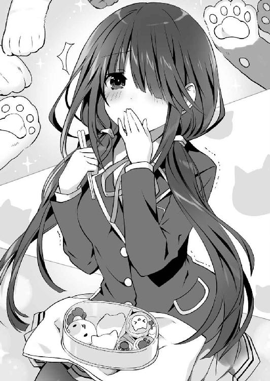
──衝撃。
士道が料理好きであることは、分身体の調査で既に知っていた。だが、よもやこれほどとは。
芳醇な海苔の香りが鼻腔を内側からくすぐる。かと思えば次の瞬間、今の今まで形を保っていたのが噓のように、米がほろほろと解けて口いっぱいに広がった。まるで無数の猫に囲まれ、もっふもっふと押しくらまんじゅうをされるかのようなイメージが狂三の頭の中に展開される。あはははは。うふふふふ。
だが、それだけではない。米が散らばった瞬間、その奥に隠れていた真打ち、ジューシーな肉団子が姿を現したのである。
もとより一口大のおにぎりに、さらに肉団子を仕込むという巧妙さ。米とのバランスを考慮してギリギリまで味付けを濃厚にした照り焼きソースの波状攻撃。狂三は無数の猫の柔らかな肉球に猫パンチをされるかのような快感に身悶えした。
「ああ......っ」
口腔、鼻腔、食道、胃──自分でさえも手が届かぬ身体の内側を愛撫されるかのような感覚。狂三はふらつく頭を押さえながら、どうにか笑みを形作った。
「さ──すが、士道さんですわね。とても美味しいですわ」
「そうか。そりゃあよかった。お気に召したなら何よりだ」
士道がふっと微笑を浮かべてくる。
だが──ここからは狂三のターンである。狂三は箸を手に取ると、唐揚げを一つ摘み、士道の方へと差し出した。
「──さ、士道さん。『あーん』ですわ」
そう言って狂三が、唐揚げを差し出してくる。
「ぐ......っ！」
その絵面が持つ破壊力に、思わず士道は身を強ばらせた。
そう。これはデレさせ合戦。相手に心を奪われた方が負けの勝負である。
であるならば、勝負は料理の出来映えのみで決するわけではない。如何にして食べさせるかも重要なポイントになってくるのであった。
その点から言えば、狂三の取った手段は合理的且つ効果的である。可愛い女の子から『あーん』をされて嬉しくない高校生男子など存在しない。自らのアドバンテージを上手く生かした理想的な一手である。
「あら、いかがいたしましたの、士道さん」
「いや......いただくよ」
士道は頰に垂れる汗を拭いながら、口を大きく開け、狂三の唐揚げを頰張った。
「......っ」
瞬間、士道の全身を、電流が通り抜けるかのような感覚が襲った。
──美味い。良い肉を使っているのはもちろんだが、処理の仕方も丁寧で、揚げ方も申し分ない。下味のベースにニンニクではなくショウガを使っているあたりが乙女心を感じさせてなおグッドである。
だが、この唐揚げの真価はそれだけではなかった。
ぽわぽわぽわ......と、頭の中に朝の台所の風景がイメージされる。制服の上からエプロンを着け、ブラウスの袖を捲った狂三が楽しげに料理をする姿がありありと見えた。
確かに狂三は士道の持つ霊力が目的なのかもしれなかったが、士道のことを思って弁当を作り上げたという事実は変わらない。その、食べる人を思う心遣いが、丁寧な仕事となってこの味を作り上げていたのだ。
自分で料理ができてしまうゆえに、誰かの作った手料理を食べる機会の少ない士道にとって、それは必殺の牙となり得たのである。
「うふふ、いかがでして、士道さん」
「......っ！」
士道は狂三の言葉にハッと肩を揺らすと、滲みかけていた涙を拭ってどうにか表情を笑みの形に戻した。
「......ああ、美味いよ。涙が出そうなくらいにな」
「あらあら、大げさですわ」
狂三が淑やかな調子でくすくすと笑う。
が、士道の目に灯る炎が未だ消えていないことに気づいたのだろう。すぐにその笑みを、不敵なものにしてみせた。
「............」
「............」
士道と狂三は間合いをはかるように視線を交じらせると、数秒後、二人同時に動いた。
「もう一つ、食べるか？」
「卵焼きも自信作ですのよ？」
キン！ と抜き身の刃物が打ち鳴らされるかのような錯覚。士道と狂三は頰に汗を垂らしながらニッと唇を歪めると、またも同時に弁当箱を掲げた。
「お......おお、よくわからないが、なんだか凄いものを見ている気がするぞ......！」
「十香、下がって。巻き込まれては危険」
折紙が十香の肩を摑み、注意する。すると耶俱矢がどこか悔しげに「くう......」と拳を固めた。
「何よう、二人してかっこよさげなことして......！ 夕弦！ 私たちも勝負！」
「呼応。受けて立ちましょう。──とうっ、先ほど購買で買ってきたカレーパン」
「はむっ......うん、美味しい。普通に。──ではこちらは血の流れより紅きパン！」
「咀嚼。......美味しいです。普通に」
八舞姉妹が、よくわからないといった様子で二人揃って首を傾げる。
そうこうしている間にも、士道と狂三の戦いは続いていた。士道がおかか入り三毛猫を繰り出せば、反撃とばかりに狂三がほうれん草の和え物を差し出してくる。
「く......っ、このおかかの味付け......ただの醬油ではありませんわね......！」
「そっちこそ、海苔だけじゃなくツナを一緒に和えてやがるな......！」
「うふふ......ここで一つ、こんなものもいかがでして？」
「......ッ!? ま、魔法瓶に味噌汁だと......ッ!?」
などと、およそ三〇分に亘りそんな攻防を繰り返し、気づけば二人の弁当箱の中は空になってしまっていた。
「はぁ......っ、はぁ......っ」
「うふふ、ふふ......」
二人は同時に、自分のほっぺたに付いたご飯粒を、往年のアクションスターよろしく親指で拭うように取ると、それをぺろりと舌で舐めた。
「今日のところは引き分け──というところですかしら」
「ふっ......そうだな」
そして士道と狂三は、またも同時にパン！ と手を合わせると、「ごちそうさまでした」と小さく頭を下げた。
それを見てか、隣にいた精霊たちが「おおー......」とパチパチ拍手をする。
「......あら？」
と、そこで狂三が何かに気づいたように眉を動かすと、妖しく口元を緩め、すす......と距離を詰めてきた。
「ねぇ、士道さん......」
「な、なんだ......？」
「少し、じっとしていてくださいまし」
士道が身を硬くしていると、狂三がゆっくりと顔を近づけてきた。
肌理の細かな肌が視界いっぱいに広がり、微かな甘い芳香が鼻腔をくすぐる。狂三の吐息が首元を撫でるたび、士道は脳幹に電流が流れるかのような感覚を覚えた。
「え......な、な......」
狂三の突然の行動に、脳裏が疑問符で埋め尽くされる。──一体何を？ まさか、こんなタイミングでキスを？
無論、士道の目的もそれである以上、拒む理由はない。だが、デレさせていない状態でキスをしたとしても霊力が封印できるわけではなかった。相手は狂三。士道も善戦したつもりではあるが、まさか弁当一つでデレさせられたりはしないだろう。つまりこれは完全な無駄キスであるわけで、でもそれは裏を返せば純粋なキスであるわけで、士道としては一体それをどう受け止めればいいのかわからなくなって、そうこうしている間に狂三の柔らかそうな唇がどんどん迫ってきて──
次の瞬間、ぺろり、と狂三の舌が士道の頰を舐めた。
「ひゃ......っ！」
予想外の感触に、素っ頓狂な声が漏れる。
「ふふっ、士道さん。こちら側のほっぺたにも、ご飯粒が残っていましたわよ」
狂三がふふっと微笑み、自分の唇を舐める。士道は目を丸くして、今し方くすぐったい感触が現れた頰に触れた。
「へ......っ？ マジか、噓だろ......？」
士道は顔を赤くしながら頰に触れた。弁当戦に熱中していたとはいえ、まさか両方の頰にご飯粒を付けてしまっていたとは。
すると狂三が、くすくすと笑ってくる。
「あら、よくわかりましたわね」
「......おい」
楽しげな狂三の言葉に、士道は思わず半眼を作った。......どうやら、士道を動揺させるために、ただ頰を舐めただけらしい。
狂三はそんな士道の様子を面白がるように見たのち、そこで初めて精霊たちの存在に気づいたかのような調子でそちらに視線を移した。
「うふふ、いかがいたしましたの、皆さん。そんなに見つめられては照れてしまいますわ」
「......っ！」
「べ、別に見てないし！」
「同調。......夕弦たちはいつも通り昼食を摂っていただけです」
「............」
狂三の言葉に、精霊たちが思い思いの反応を示す。
すると狂三はもう一度可笑しそうに笑って、ゆっくりと立ち上がった。
「狂三？」
「うふふ、ではわたくしはお先に失礼しますわね、士道さん。お弁当、本当に美味しかったですわ」
「ああ、おまえのも相当なもんだったよ」
士道が返すと、狂三ぐいと身体を前に倒し、再び士道に顔を近づけてきた。
そして指先でさわ......と士道のあごを撫でる。
「......っ！」
「ねぇ......士道さん。話は変わりますけれど、次の水曜日の放課後、何かご予定はありまして？」
「水曜日......？」
急な問いかけに、士道は一瞬首をひねりかけたが......それが誘い文句であることはすぐに知れた。
そもそもこれといった予定も入っていなかったし、それ以前に、今の士道にとって狂三の攻略に勝る優先事項など存在しなかった。答えはイエス以外に存在しない。
「............」
しかし。士道は一瞬思案すると、挑戦的な視線で狂三を見返しながら言った。
「悪いがその日は、外せない用事があってな」
「あら、そうですの？」
「ああ。──俺の目の前にいる女の子を、デートに誘おうと思ってるんだ」
士道が言うと、狂三は驚いたように目を丸くした。
「あら、あら」
そして士道の言葉を面白がるように微笑み、あとを続けてくる。
「気が合いますわね、士道さん。ではその日、お時間をくださいまし」
「ああ、もちろん。......って、『時間をくれ』って、文字通りの意味じゃないだろうな」
士道は半眼を作りながら返した。別段おかしな表現ではないのだけれど、文字通り人間の『時間』を喰らう狂三が用いると、途端に不穏なダブルミーニングに聞こえてしまうのだった。
狂三も士道の言葉の意味に気づいたらしい。小刻みに肩を揺らすように笑ってくる。
「うふふ、面白いことを仰いますのね。無論、慣用句として捉えていただいて構いませんわ。──もっとも」
狂三は一瞬言葉を切ると、士道のあごに触れさせていた指を、つつ......と頰に移動させた。
「今士道さんが思い描いた意味の方も、その日、実現させるつもりではありますけれど」
「......っ」
朗らかな笑みの中、狂三の左目が妖しく光る。
あまりに美しく、あまりに冷徹で、あまりに凄絶な意志の光。揺るがぬ覚悟を帯びた狂三の視線に、士道は思わず息を吞んだ。
「──では、ごきげんよう。楽しみにしていますわ、士道さん」
しかし狂三はふっと表情を緩めると、くるりとターンをしてスカートの裾を摘み、足を縮めてお辞儀をしてみせた。
そしてそのまま、軽やかな足取りで以て校舎の中へと戻っていく。
その背中が見えなくなってから、およそ一〇秒。
「............、っはぁ......！」
士道は、ようやく緊張の糸が切れたように大きく息を吐いた。
「だ、大丈夫か、シドー」
すると向かいに座っていた十香たちが、心配そうな顔を向けてきた。
「あ、ああ......大丈夫。すまん、わかってはいるんだが......って、あの、痛い。折紙さん、痛いです」
折紙が、ウェットティッシュで執拗に士道の頰を拭いてくる。士道は顔をぐにんぐにん変形させられながら頰に汗を垂らした。
次いで士道を労うように、インカムから琴里の声が聞こえてくる。
『お疲れ。なかなかよかったわよ。平常値をキープしていた狂三の感情値が、かなり揺らいでいたわ』
「ほ、本当か？」
『ええ。まあ、どこかの誰かさんの数値も、負けず劣らず揺れっぱなしだったけど。特に最後』
「むぐ......」
言われて、口ごもる。
最悪の精霊とのデレさせ合い。それがどんな意味を持つのかは、士道とて重々承知しているのである。それゆえ対策を取り、士道なりに健闘もしたつもりだ。
だが直接狂三と対面し、言葉を交わし、触れ合い、吐息をかけられると──強固に固めていたはずの覚悟が、ふにゃふにゃと骨抜きにされてしまうのだった。
「でも......」
と、士道が自省をしていると、耶俱矢が難しげな顔であごに手を当てた。
「ねえ、なんで狂三は次の水曜日指定してきたの？ 何かあるの？」
「いや、どうだったか......」
と。
士道が耶俱矢の問いに首を捻ったところで、何かに気づいたようにカッと目を見開いた者が一人、いた。──折紙だ。
「次の──水曜日」
折紙は短く言うと、スマートフォンを取り出して何やら操作を始めた。
そして数瞬ののち、得心がいったという顔をしながら、その画面を士道たちの方に向けてくる。
「時崎狂三の思惑がわかった。確かに彼女はその日、勝負を決めるつもり」
「それってどういう......、──あ」
言いかけて。
スマートフォンの画面を見やった士道は、言葉を止めた。
折紙が、こくりと首を前に倒してくる。
「次の水曜日。即ち、二月一四日。その日は──聖バレンタインデー」
静かな、しかし微かな焦燥の滲む声で折紙が言うと同時、警報のように予鈴の音が鳴り響いた。
第三章 乙女の時間
「──よく集まってくれたわね、みんな」
その日の夜、精霊マンションの一室で、琴里が皆を見渡しながらそう言った。
なぜか部屋の照明は暗く設定されており、テーブルの上にのみスポットライトのように明かりが灯されている。
そんな中、琴里はテーブルに肘を突き、指を組み合わせるというポーズをしていた。なぜかはよくわからなかったけれど、琴里の司令官度がいつもよりも増している気がした。
部屋の中には既に、十香、折紙、四糸乃、耶俱矢、夕弦、美九、七罪、二亜、六喰という精霊オールスターズが勢揃いしている。皆円卓に着き、頰杖を突いたり伸びをしたりと思い思いの姿勢を取っていた。
「ふむん、一体何の用なのじゃ。こんな時間に......」
六喰がふぁあ......とあくびをしながら問う。
しかしそれも無理からぬことではあった。今の時刻は午前〇時。よい子はとっくに夢の中にいる時間である。六喰以外にも数名、眠そうにしている者の姿があった。......まあ、なぜか昼間よりも元気そうな二亜のような例外もあるにはあったのだけれど。
琴里は小さくうなずくと、六喰の問いに答えるように言葉を続けた。
「状況は既に説明したとおりよ。──今日の昼、時崎狂三が士道をデートに誘った。二月一四日、バレンタインデーに」
それを聞いて、十香は腕組みしながら首を傾げた。
「むう、そもそもそのバレンタインデーというのは何なのだ？」
「ああ......ごめんごめん。そういえばそれは説明してなかったっけ。えっと、バレンタインデーっていうのは......」
と、琴里が説明をしようとしたところで、二亜が乱入してきた。
「それはねぇ......恋人たちの守護聖人と呼ばれる聖ウァレンティヌスが、惨たらしく処刑された日のことだよー！」
「な......ッ!?」
「こ、怖い日......なんですか？」
十香と四糸乃が驚いた顔をする。琴里は二亜の頭をぺし、とはたいた。
「起源としては間違ってないけど、言い方！」
「えっへっへ、ごめんごめん。まーあれよ、そのウァレンティヌスにちなんで、女の人が男の人に贈り物をする日、みたいに思えばいいよ」
「ふむ、贈り物とな」
「質問。何を贈ればよいのですか？」
八舞姉妹が左右対称に首を傾げながら言う。
「そうね......別にこれじゃなきゃ駄目って決まりはないでしょうけど、日本ではチョコレートが一般的ね」
「ほう！」
琴里の言葉に、十香は目をキラキラと輝かせた。
「チョコレートを贈る......か。そんな素敵な日があったのだな！」
「......いや、十香。喜んでるとこあれだけど、女から男に、だからね。あんたあげる側だからね？」
十香が手をブンブン振りながら興奮していると、七罪が半眼でそう言ってきた。
「む？ うむ、わかっているぞ。......ぬ？ そうか、私は食べられないのか。いや......うむ、大丈夫......シドーに贈り物ができるのは嬉しいぞ......」
「目に見えてテンション下がってるじゃないの......」
七罪が頰に汗を垂らしながら言う。琴里がやれやれと息を吐きながら肩をすくめた。
「大丈夫よ、十香。最近は友チョコっていうのも流行ってるし......何より、来月一四日にはホワイトデーがあるわ。これは、バレンタインデーにチョコを貰った男の人が、チョコをくれた女の人にお返しをする日よ」
「お、おお......！」
十香は神託を受けた聖職者のような調子で琴里を見た。その様子に、周りの皆が微笑ましげに苦笑する。
「えっと、琴里さん。それがどうかしたんですかー？ 確かにだーりんとバレンタインデートなんて妬けちゃいますけどぉ......」
美九が可愛らしい仕草であごに指を触れさせながら言う。
すると琴里が、こくりとうなずきながらそれに返した。
「狂三は、その日のデートで勝負を決めるつもりと言っていたわ。それに負けてしまったなら、士道は霊力ごとその命を奪われることになる。となれば、黙って見ていることはできないわ」
「......でも、いくら士道でも、自分の命がかかってるっていうのに負けを認めたりするとは思えないけど......」
「私もそうは思うわ。でも、あの狂三が何の勝算もなくこんな話を持ち出すとも思えないのも事実。用心しておくに越したことはないでしょ」
「質問。用心とは具体的に何をすればよいのでしょう」
夕弦が手を挙げ、質問する。琴里は首肯しながら指を二本立てた。
「大きく分けて方針は二つ。一つは、私たちも士道にチョコを贈ること」
「妥当な手段。もともとチョコは贈るつもりだった」
「そーねー。つかあたしが男でも、チョコくれたのがくるみん一人だけだった、とかなったら正直キュンとしちゃうもん」
二亜が冗談めかすように肩をすくめる。すると琴里も、その気持ちはわからなくもないといった様子で苦笑した。
「とはいえ、それはあくまで一四日の話。チョコを作るにしても、当日までに用意がしてあれば問題ないわ。──どちらかというと問題はここからよ。その前までに可能な限り、士道に耐性を付けておきたいの」
「耐性......？」
十香は腕組みしながら首を傾げた。琴里が補足をするように続けてくる。
「そう。本番で狂三に籠絡されないように、前もって免疫を付けておくってこと」
「ふむん。しかしその免疫とやら、何に対してのものなのじゃ？」
六喰が問うと、琴里は指を一本ビシッと立てながら言った。
「ずばり──大人の魅力よ」
『......ッ!?』
琴里の言葉に、精霊たちがざわつく。
琴里はそんな皆を制するようにしながら続けた。
「十香たちは昼に見てたからわかると思うけど......狂三最大の脅威は、やっぱりそれよ。男を手のひらの上で転がす悪女の余裕。妖艶な仕草で誘う夢魔の手管。士道が今まで封印した精霊の中にそういうタイプはいなかったから、今のうちに慣れさせておかないと」
『............』
精霊たちがごくりと息を吞む。
と、そんな空気を打ち破るように、元気よく手を挙げた者が二名、いた。美九と二亜である。
「はーいはーい！ 私だーりんの一個上ですー！ お姉さんですー！」
「あたしもあたしもー！ 大人の魅力ムンムンです！」
言って、二人揃って自慢げに胸を反らしてみせる。
しかし琴里は、渋い顔をしながら首を横に振った。
「数字の話じゃないのよ。大人っていうのは精神性の話。中身が伴ってなかったら、それはただの大きい子供でしょ」
「うぎゅっ！」
「あばっ！」
無慈悲な言葉のナイフに、美九と二亜が撃沈する。
「ううう、容赦ないです琴里さぁん......私、スタイル的には年上感あるじゃないですかー......」
「あたしだってほら、その......夜更かし得意だしぃ......」
「............」
と、美九と二亜がくだを巻いていると、その肩を、なぜか折紙がポンと叩いた。二人が感極まったように「うわーん！」と折紙に抱きつく。......まあ、美九の方はなぜかやたらと手つきが怪しかったのだけれど。
とはいえそんな三人をよそに、会議は進んでいった。
「なかなかに厄介よ。どんなに強がっていても、男子には大人のお姉さんに弄ばれたい欲求や、甘えたい気持ちがあるものだしね」
「呵々、男はいつまでたっても子供ということか」
「首肯。耶俱矢は男の子でしたか。どうりで」
「どーいう意味よそれっ!? っていうかどうりでって何!?」
「落ち着きなさい......って、あら？」
そこで琴里が、不意に言葉を止める。
「折紙たち、どこにいったの？」
「む？」
言われて、十香は折紙たちのいた場所に目をやった。
確かに琴里の言うとおり、先ほどまでそこにいた三人の姿が、いつの間にか消えている。
「さあ......」
「厠ではないかの」
精霊たちが首を捻る。琴里はふむ、と扉を一瞥したのち、言葉を続けた。
「まあいいわ。すぐ戻ってくるでしょ。──とにかく、その感覚を一時的にでも満足させてしまえば、狂三がどんな手を使ってこようと、士道の心は平穏なままのはずよ。だから私たちが士道のお姉さんになって、耐性を付けてあげようってわけ」
「で、でも琴里さん、私たち、士道さんよりも小さいです......」
四糸乃が眉を八の字にしながら言う。琴里は難しげな顔をしてうなずいた。
「ま、それはね。でも大人の余裕を身につけさえすれば、実年齢に拘わらず年上の魅力を得ることは可能なはずよ。もちろん本当に大人になれれば効果は高いでしょうけど、さすがに──」
「......あの」
と。琴里が言ったところで、一人の少女がおずおずと手を挙げた。
「もしかしたら、なんとかなるかも......？」
◇
「ん......う......」
小さなうめき声を上げながら、士道は自室のベッドの上でゆっくりと目を開いた。
寝惚けた意識がゆっくりと覚醒していく。それに従って、周囲の状況が段々と見て取れるようになってきた。
辺りはまだ暗く、夜は明けていないようである。別にいつもより早く床に就いたつもりはなかったのだが......
と。
「......ん？」
未だぼんやりとした意識の中、寝返りを打とうとし、士道は眉をひそめた。
──身体が、動かない。
一瞬金縛りというやつかとも思ったが......少々様子がおかしい。どちらかというと、何者かに抱きつかれているかのような感覚だった。
温かく、柔らかい感触。明らかに、自分以外の誰かが布団の中にいる。
「............」
士道はしばし無言で考えを巡らせたのち、小さく息を吐いた。
普通であれば夢か心霊現象の類を疑うところなのかもしれなかったが......幸か不幸か、士道にはこういった現象の原因に心当たりがあったのである。
「折紙......？ それとも美九か？ いや、もしかして二亜......？」
士道が半眼を作りながら言うと、身体を締め付けていた力が緩み、それと同時、がばっと布団が持ち上がった。
「さすが士道」
「さすがだーりん」
「さすが少年」
「うわぁっ!?」
布団の中から現れた三人を見て、士道は驚愕の声を発した。
まさか名前を挙げた容疑者が三人全員揃っているとは思わなかった、というのもあるのだが──
何より、その三人が全員、ベビードールやガーターベルトなどといった扇情的な下着に身を包んでいたのである。
「お、おまえら......？」
今何が起こっているのかわからず、顔を困惑の色に染める。
すると三人が微笑み、士道に再び身を寄せてきた。
折紙のうっすらと割れた腹筋や、美九の豊満な胸が右から左から襲ってくる。今の今まで肌に触れていた感触であるというのに、その姿を見てからだと、先ほどまでとはまったく異なった緊張と興奮が士道の頭の中で渦を巻いた。
「ちょ......お、おい......」
「いいの、士道。身を委ねて」
「そうですよー。お姉さんたちが甘えさせてあげますからねー」
「そうそう。ここで一発賢者になっとけば、くるみんも怖くないってねー」
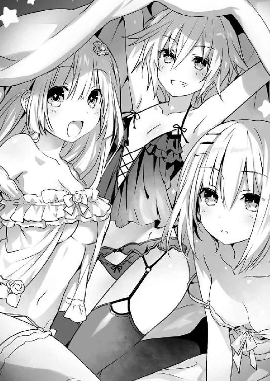
などと言って、三人が迫ってくる。普段とは少し様子の違う妖艶な調子に、士道は心臓が激しく脈打つのを感じた。
が──
「いやでも男って不思議だよね。女性経験ないまま三〇歳になったら魔法使いになれるとか言うけど、賢者にはすぐなれるんだもんね。......あ、そっか、その前に遊び人になるからか！ 少年たら遊び人ー」
二亜がいつもの調子で冗談を言い始めたものだから、のぼせかかった頭が上手い具合にクールダウンしてくれた。
「......ああもう、何だか知らないけど自分の部屋に帰ってくれ！」
士道は叫びを上げると、折紙たちの背を押して部屋から追い出した。
「仕方ない。出直すことにする」
「きゃー！ 強引なだーりんも素敵ですぅー！」
「えぇー、やっぱ少年は尻派だったかー」
三人はそれぞれ思い思いの言葉を残し、五河家から去っていった。
「ったく......」
士道はやれやれと息を吐くと、いつの間にか額に滲んでいた汗を袖で拭い、再び布団の中に潜り込んだ。
......が、すぐには眠れない。
中途半端な時間に起こされてしまったというのもあるし、何より、布団に折紙たちの残り香が微かに漂っており、やたらと心臓が高鳴ってしまっていたのだった。
と──
「......ん？」
それからどれくらい経った頃だろうか。士道は不意に眉をひそめた。
窓の外──ベランダの方から、何やらコツコツという小さな音がしたのである。
「何の音だ......？」
まるで誰かが窓をノックしているかのような音。士道は訝しげな顔をすると、のそのそとした動作でベッドから起き上がった。そして目を擦りながら、窓の方に歩いていき、カーテンに手をかける。
が、そこで士道は手を止めた。
眠気で判断力が落ちていたためか、今の今まで思い至らなかったのだ。──こんな真夜中に士道の部屋の窓をノックする来訪者、という事態の持つ異常性に。
「まさか、狂三......？」
士道は眉根を寄せながら呟いた。そう。真夜中にこんな方法で士道を訪ねてくる者など、そうは──
「............いや、いないことはないか」
つい先ほど襲来した面々の顔を思い出し、士道は深いため息を吐いた。......というか、どちらかというと狂三よりも、あの三人の再来襲の方が可能性が高い気がしてならなかった。
ともあれ、この状態のままでは何もわからない。士道は深呼吸をすると、意を決してカーテンを開け放った。
しかし。
「あれ......？」
窓の外には何も見当たらなかった。それどころか、士道がカーテンを開けると同時、コツコツと響いていた音までもが聞こえなくなってしまう。
「おかしいな、確かに......」
首を捻り、窓を開けてベランダに出てみる。ひんやりとした空気が、ぬくぬくお布団で甘やかされた身体に襲いかかってきた。
「うぅ......さむっ」
サンダルを突っかけ、辺りをきょろきょろと見回すも、やはり怪しい人影や、早起きが過ぎる小鳥などは見当たらない。
まだ寝惚けているのだろうか。士道は頭をポリポリとかきながら、部屋に戻っていこうとした。
すると、その瞬間。
「──ふふ、ふふ」
「......!?」
どこからかそんな笑い声が聞こえてきて、士道はビクッと身体を震わせた。
「な、なんだ......？」
突然響いてきた声に驚き、再度辺りを見回す。
するとその声に次ぐように、いくつもの声が次々と聞こえてきた。
「へえ、これが例の五河士道？」
「ふうん......わりと普通なのね。何だか意外」
「そう？ 結構カワイイじゃない」
「い、一体これは......」
士道は表情を困惑の色に染めると、声の出所を探った。が、やはり人影らしきものはまったく見受けられない。
一瞬、狂三の分身体たちが影の中から喋っているのかとも思ったが──違う。辺りにこだまする声は、明らかに狂三のものとは異なっていた。
「誰だ!? 一体俺に何の用だ!?」
士道は思わず叫びを上げた。シンと静まりかえった夜空に、士道の声が響き渡る。
するとそれに応えるように、辺りからくすくすという笑い声が幾重にも聞こえてきた。
──そして、それと同時。
空から、ヒラヒラと数枚の紙が落ちてきた。
「紙......？」
士道は首を傾げると、膝を折ってその紙を拾い上げようとした。
だが、士道が手を触れようとした瞬間、ベランダに落ちた紙がぼんやりと光を放ったかと思うと──
「ばぁっ！」
そこから、少女が飛び出してきた。
「わ......っ!?」
突然のことに驚き、尻餅を突いてしまう。すると少女は、それを面白がるようにくすくすと笑った。
「あははは、驚きすぎじゃない？」
「き、君は......」
士道は呆然と少女の顔を見上げた。
あまりに間の抜けた問いかけ。士道はすぐにハッと息を詰まらせた。
未だ少しぼうっとしていた意識が、その衝撃的な光景によって叩き起こされたかのような感覚。
もし今見ている光景が夢でないのなら、紙の中から現れる少女などというものが尋常な存在であるはずがない。
そして士道は真那から、その少女の存在を既に聞いていたのである。
「まさか、ＤＥＭの......ッ!?」
士道が表情を戦慄の色に染めながら言うと、辺りに散らばっていた紙の中から、まったく同じ顔をした少女たちが次々と這い出てきた。
それはまるで、狂三の分身体たちが一斉に姿を現すかのような光景である。世にある法則や条理を清々しいまでに無視したその現象に、士道はしばしの間言葉を失ってしまった。
「ふぅん、あたしのこと知ってるんだ？」
「でも、ＤＥＭの、ってのは随分な呼び方じゃない？」
少女たちが不満げに口を尖らせる。
が、士道はそれに返すことはできなかった。
四方から発される無数の言葉の中、一人の少女が、信じがたいことを呟いたからだ。
「そうそう、あたしたちだって──一応精霊なんだから」
その、言葉に。
「な......!?」
士道は、愕然と目を見開いた。
「せ、精霊......!?」
そう。確かに今少女はそう言った。
頭の中がぐるぐると混乱する。確かに精霊であれば狂三のように分身の力を持つ者もいるのかもしれない。だが、なぜ精霊が、精霊を殺そうとするＤＥＭに──
士道が困惑していると、また別の少女が言葉を続けた。
「ええ。〈ニベルコル〉っていうの。いい名前でしょ？」
「まあ、お父様が作ってくれたわけだし、キミの言うところの精霊とは少し違うかもしれないけど」
「ど、どういうことだ......？」
呆気にとられたまま士道が聞き返すと、少女──〈ニベルコル〉は肩をすくめてみせた。
「ふふ、知りたい？」
「別に教えてあげてもいいけど、あんまり意味ないんじゃない？」
「ねぇ。だってキミ──ここで死んじゃうわけだし」
そして、あまりにさりげなく。
〈ニベルコル〉は、その言葉を吐いた。
悪意はおろか、殺意さえ微塵も感じ取れない。何気なく交わされる挨拶か、家を出る際ついでにと買い物を頼まれるかのような気安さである。
それこそ、その言葉を向けられた士道が、一瞬呆けてしまうくらいに。
「......ッ！」
とはいえ、士道の反応は一般的な男子高校生と比較すれば、素晴らしく速かった。幾度となく命の危機に晒されたあまりありがたくない経験が、士道の身体を弾いたのである。一瞬で身を翻し、〈ニベルコル〉から逃れるようにベランダを蹴る。
が──
「え......？」
次の瞬間、士道は自分の喉からそんな声が漏れるのを聞いた。
同時、視界がぐらりと揺れ、そのまま身体がベランダに叩き付けられる。
そこで自分の身体を見下ろし、士道は気づいた。
──この場から逃げ去ろうとしていた両の足が、綺麗に切断されていることに。
「ぐ......あ、あああああああああああああああああああああああッ!?」
一拍置いて、脳幹を握り潰されるかのような凄まじい激痛が士道を襲う。
暗いはずの夜空がバチバチと明滅するかのような錯覚。興奮と緊張によって心臓が激しく脈動し、足の切断面から盛大に血を吐き出した。
「逃げられると思ってるの？」
「駄目駄目。だってお父様に言われてるんだから」
「キミ、ここでお終いなのよ」
〈ニベルコル〉が、変わらず気安げな調子で続けてくる。
が、そこで、顔に夥しい量の返り血を浴びてなお歪まなかった眉が、ピクリと動いた。
「へえ......？ すごい、何コレ」
「足が燃えてる？ っていうか、切った足がくっつこうとしてるの？」
「ふうん......これが〈灼爛殲鬼〉の再生能力ってやつかあ。いいなあ、これ」
口々にそう言って、興味深そうに士道の足を覗き込む。まるで、子供が道端に珍しい虫を見つけたかのような調子である。
確かに〈ニベルコル〉の言うとおり、士道の足の切断面には今、どこから生じたのかもわからない炎が灯っていた。激烈な痛みの上に凄まじい灼熱感が重なり、士道の痛覚をこれでもかと言わんばかりに嬲ってくる。
だがその炎は、これまた〈ニベルコル〉の言うように、切断された士道の足を癒着させようとしていた。──琴里の天使〈灼爛殲鬼〉が持つ、治癒の炎である。
「そっか、そっか。これがあるから厄介なんだ」
「うん。なんかずるいわよね。殺しても死なないって」
「これじゃ、お父様のお願いが果たせないわよ。どうする？」
〈ニベルコル〉は小首を傾げると、相談するように顔を見合わせた。
しかし、それも一瞬。〈ニベルコル〉がこくりとうなずき合い、再び士道に視線を落としてくる。
「まあ、これしかないか」
「うん、これしかないわ」
「──死にきるまで、殺してあげる」
〈ニベルコル〉が言うと同時、士道は全身に凄まじい衝撃を覚えた。
「..................ッ!?」
次いで視界が真っ赤に染まり、さらなる激痛が襲ってくる。
まるで痛覚神経が自我を持ち、激しく舞い踊るかのような感覚。〈灼爛殲鬼〉の加護を持つ士道でなければ、一瞬でショック死していたであろう痛み。
士道はもはや声になっていない叫びを上げた。
音の天使〈破軍歌姫〉で痛みを鎮めようとするも──遅い。
〈ニベルコル〉の絶え間ない、無邪気さすら感じる無慈悲な攻撃は、再生を繰り返す士道の身体を次々と穿ち、潰し、切り刻み──
やがて、士道の意識は、闇へと落ちていった。
◇
「......うわぁぁぁぁぁぁぁッ!?」
喉が潰れんばかりの絶叫を上げ。
士道は、ベッドから跳ね起きた。
「......!? っ──!?」
数秒の間、呆然と目を見開いて辺りを見回す。見慣れた自分の部屋。窓からは随分と高い位置から陽が差し込んでいた。
「............！」
一拍置いて、士道は慌てて自分の身体をペタペタと触り始めた。
そして、穴の空いていない腹や胸、切断されていない両の足、何より、それらを確認する両の手があることを確認し、大きな大きな安堵の息を吐く。
「............悪夢にもほどがあるだろ、おい......」
言って額を拭うと、服の袖がびっしょりと濡れてしまった。もはや寝汗というレベルではない。寝ている間にスコールに見舞われたかのような様相であった。
だがそれも無理はない。士道は今の今まで見ていた悪夢を──思い出したくもないのだが半ば強制的に──反芻し、思わず身を震わせた。
一体どんな心の不安を抱えていれば、あんな悪夢を見るというのだろうか。......というか、どこからどこまでが夢なのだろうか。
士道は未だ脳裏にこびり付く激痛を振り払うように頭を振ると、湿った布団を押しのけて立ち上がった。
そしてぱたぱたと胸元に風を送り込みながら、シャワーでも浴びようかと一階へ下りていく。
「......ん？」
するとその途中。階段を下りているところで、士道はぴくりと眉の端を揺らした。
何やら一階の方からふわりといい匂いが漂ってくると同時、トントントン......と包丁でまな板を叩くような小気味のよい音が聞こえてきたのである。
そう──まるで誰かが、朝食の準備をしているかのように。
「琴里か......？」
士道は首を捻りながら呟くように言った。
この家には今士道と琴里しか住んでいないのだから、必然的にそうなるだろう。朝食......というか食事はほとんど士道が作っているが、今日は夢見が悪かったせいか起きるのが少々遅かった。もしかしたら琴里が気を利かせてくれたのかもしれない。
だが、一つ違和感が残る。琴里はこんなにも軽快に包丁を扱えただろうか......？
そんなことを考えながら士道は一階へと下りていき──
「......へ？」
リビングにいた人影を見て、目を点にした。
「──ん？ ああ、おはよう、士道」
ソファに腰掛けた女性が、ひらひらと手を振って挨拶をしてくる。
が、士道は挨拶を返すこともせず、ポカンと口を開け、呆然と目を見開くことしかできなかった。
それはそうだ。そこにいたのは、どう見ても士道より年上の琴里だったのである。
たった九文字の中に込められた途方もない矛盾。士道はまだ夢を見ているのかと思い、頰をつねってみた。痛かった。
歳の頃は二〇歳くらいだろうか。すらりと伸びた手足に、大人びた貌。髪は括っておらず、その代わりといわんばかりに黒いリボンが手首に結んであった。
だが何より目に付いたのは、その胸元だ。同年代の少女に比べても若干控えめであった琴里の乳房が、不自然なまでに膨張している。
そんなお姉さん琴里が、裸身にワイシャツ一枚のみを纏った状態でソファに腰掛け、どこか気怠げにテレビを眺めていたのである。その佇まいは、どう見ても出社前のＯＬといった風情だった。
「何よ、ボーッとして。──あ、さてはおねーちゃんの生足に見とれてた？ へぇ、士道も男の子ねぇ」
士道が驚愕に目を見開いていると、琴里が悪戯っぽい笑みを浮かべながら、わざとらしく足を組み替えてみせた。ワイシャツの裾からちらちらと艶めかしい脚線美が覗き、思わず息を詰まらせる。
「......っ！ じ、じゃなくて！ 琴里......だよな？ ですよね？ いやいや、え？ 一体どういうことだ......？」
「ええ？ どうって？」
「いや、いきなり成長するにしてもその胸元は不自然過ぎ──げふっ!?」
言葉の途中で、顔面に琴里の投げたクッションが炸裂する。士道は思わず身を反らした。
「士道さん」
と、士道がクッションの直撃を受けた鼻の頭をさすっていると、今度はキッチンの方からそんな呼び声が聞こえてきた。
目をやる。するとそこには、これまた成長を経た四糸乃が、朝食の用意をしているのが見て取れた。
髪を一つに纏め、腕まくりをし、シンプルなデザインのエプロンを纏ったその姿は、まさに若奥様といった姿である。
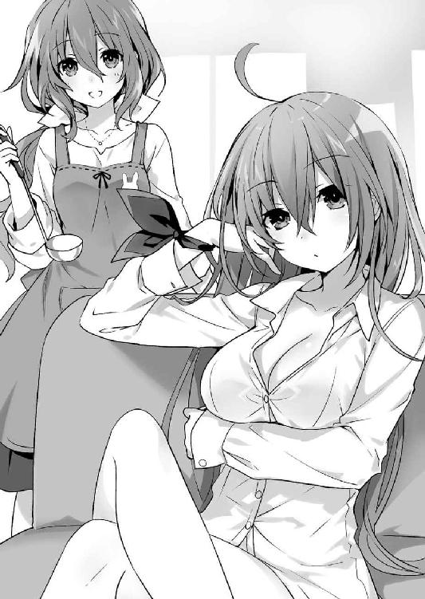
ついでといわんばかりに、その足元には三人、小さな女の子の姿があった。一瞬混乱したが、すぐにそれが、折紙と美九、そして二亜が小さくなった姿だとわかる。なぜか皆首に、『私たちは抜け駆けしました。とてもすみません』と書かれた札を下げていた。
「不覚。でも私は諦めない。年下が姉になれないなんて誰が決めたの」
「やーん！ なんで私たちは小さくなってるんですかぁ！ 私ももっとだーりんを誘惑したいですぅ！」
「あっはっは、まあ対比物があった方がオトナってわかりやすいしねぇ。ほら、あたしたちがいることによってただの若奥様がお母様属性持つわけじゃん？」
「は......っ!? そ、それはそれで......！」
二亜の言葉に、美九が何やら天啓を受けたような顔をする。そののち、甘えた様子で四糸乃の足にしな垂れかかった。
四糸乃は苦笑しながらそんな美九の頭を優しく撫でると、士道に視線を戻してきた。同時、左手のウサギのパペット『よしのん』（なぜかこちらは付け髭がついている）が手招きをしてくる。
『士道、母さんが味見をしてほしいそうだよ。ちなみに私は父さんだよ』
「あの......お願い、できますか？ じゃなくて、あの、できる......？」
「へ......？ あ、ああ......」
士道は呆気にとられながらも、言われるがままにそちらへと歩いていった。そして、四糸乃の手から小皿を受け取り、味噌汁の味を見てみる。
「うん......美味いよ。ちゃんと出汁も取ってあるし」
「本当？ なら......あの、よかった」
言って、四糸乃が微かに笑みを浮かべる。
いつもの四糸乃とは違う、たおやかで包容力に溢れた雰囲気に、士道は思わずどきりとしてしまった。
しかしすぐに思い直し、ブンブンと首を横に振る。
「......って、いやいや、そうじゃなくて！ そもそも何なんだよこれは!? 夜のあれは夢じゃなかったのか!?」
士道が叫ぶように言うと、足元から小さな折紙が声を発してきた。
「訓練の一環」
「く、訓練......？」
「そう。来る一四日、士道が時崎狂三の色香に惑わされないよう、耐性を付けておく」
「耐性って......どうすればいいんだよ」
「士道は普段通りにしていればいい。ただ、士道の心拍数、興奮度をモニタリングしてもらっている。その値が一定値を超えないよう平常心を保って欲しい」
「はあ......」
士道はぽりぽりと頰をかきながら生返事をした。すると背後から琴里が、付け足すように言ってくる。
「あ、ちゃんとペナルティは用意してるから安心して？ 興奮値が要注意に入ってから一〇秒経つごとに一枚ずつ、士道が昔描いてたイラストがＳＮＳにアップロードされるようになってるから」
「ちくしょう最近ないと思ってたのに！」
士道が甲高い声を上げると、琴里があははと楽しげに笑った。その様はまるで、本当に弟をからかう姉のようである。
不満がないといえば噓になるが、こうなってしまった以上どうにもならないことは経験上よくわかっている。士道はため息を吐いて折紙に向き直った。
「......で、何で琴里や四糸乃はお姉さん化してるんだ？」
「士道はお姉さんに迫られたらコロッといってしまうかと思って」
「失礼にもほどがある!?」
士道が思わず叫びを上げると、折紙が首を傾げてきた。
「では、迫られても大丈夫なの？」
「そ、そりゃあこっちだって、命がかかってるんだし......今もある意味、社会的に命がかかってるし......」
「そう」
折紙は短く言うと、パチンと指を鳴らした。
するとそれを聞いた二亜と美九がぴくりと反応を示し、四糸乃の着ていた服の裾を摑んだかと思うと、それを一気に引っ張った。
次の瞬間、四糸乃の服が左右に引き裂かれ、エプロンだけを着けた状態になる。貞淑な若奥様が一瞬にして夜の顔に変貌した。
「き、きゃあ......っ！」
「んな......ッ!?」
突然のことに、目を白黒させる。だが、驚いていたのは士道だけではなかった。四糸乃が顔を真っ赤に染め、その場にぺたんとへたり込む。
お姉さんに迫られる、というのとは正反対の事象。しかしその背徳感と、匂い立つような色気に、士道は思わず身を硬くした。
瞬間、部屋のどこかから、ブー、とブザーが鳴る。どうやら士道の心拍数が一定ラインを超えてしまったらしい。
「うぐ......っ！」
どうにか心拍数を抑えなければならない。士道は慌てて目を逸らすと、椅子の背もたれに掛かっていた上着を、四糸乃の肩に掛けてやった。
だが、次の瞬間、そんな士道の視界に次なる刺客が現れる。
「シドー......ではなかった！ 五河くん！ 授業を始めるぞ......ますよ！」
眼鏡をかけ、やたらと胸元の強調されたスーツを着た教師風の十香が、いつの間にかそこに立っていたのである。
無論こちらも士道よりも年上、二〇代くらいに成長した体つきをしている。だというのにスーツのサイズが少し小さいのか、やたらと肉感的なシルエットが強調されており、士道は思わずその胸元に目を向けてしまった。
「む、どうしたのだ五河くん」
「あ、いや......」
士道は視線を逸らしながら、誤魔化すようにコホンと咳払いをした。
そんな士道に、十香が不思議そうな顔をする。凶器のようなエロさを全身から振りまいているというのに、まったく自覚がない。そのギャップが、さらに士道の心を動揺させた。
が、十香はそんな士道に気づく様子もなく、モデルような調子で歩いてくると、その手を取ってダイニングの椅子へと座らせた。
そしてその隣にもう一つ椅子を並べ、士道に寄り添うような格好で自分も腰掛ける。
「え、ええと......？」
「さて五河くん、十香先生のはちみつ授業を始めるぞ。私と一緒に......む？」
十香が何やら眉をひそめ、ポケットからメモ帳を取り出して、そこに書かれている文面を確認する。
「おお、そうだ。イケナイ課外授業というのをするのだ。覚悟はいいか？ ええと、まずは保健体育からだ。おしべとめしべがだな......」
「誰だこのキャスティングした奴！」
士道は悲鳴じみた声を上げると、椅子から勢いよく立ち上がった。
「む、どこへ行くのだ五河くん！」
「ちょ、ちょっと顔洗ってくる......！」
士道は紅潮した頰とのぼせた頭を冷やそうと洗面所に向かった。ブザーは先ほどから鳴りっぱなしである。このままではまずい。どうにか状況を仕切り直したかった。
「んな......ッ!?」
しかし。洗面所の扉を開けたところで士道は再び硬直した。
理由は単純。そこに、タオルを一枚巻き付けただけの七罪が立っていたからだ。
無論、七罪といってもいつもの七罪ではない。天使〈贋造魔女〉で大人の姿になった七罪である。
混乱していた士道はその姿を見てようやく、琴里たちの変身が誰の手によるものかを察した。
「あらぁ......？」
七罪が、ニッと微笑みながら士道に視線を向けてくる。シャワーでも浴びていたのだろうか、しっとりと濡れた髪が白い肌に張り付き、艶めかしいことこの上ない。
「うふふ、おはよう、士道くん。惜しかったわね、あと一分早かったら、タオルを巻いてなかったのに」
「......っ！ お、おまえ、何言って......」
予想外の言葉に、赤かった顔をさらに赤くする。すると七罪は面白がるように士道のあごを指先で撫でてきた。
「それとも、自分で脱がすために待ってたの？ ふふ......悪い子ねぇ」
言って、七罪が士道の手を取り、自分の胸元へと持っていく。
「ちょ......!?」
士道は慌てて手を引っ張った。が、勢い余ってそのまま後方へ倒れ込んでしまう。
「いてっ！」
背中と頭をしたたかに打ち付け、士道は顔をしかめながら後頭部をさすった。
するとそこに、ぬっと何者かの影が現れ、士道を見下ろしてくる。
「は......ッ!?」
士道は息つく間もなく目を見開いた。
それはそうだ。そこに現れたのは、スーツの上に白衣を纏った女医ルックの耶俱矢と、やたらとスカートの短い看護師姿の夕弦だったのである。
「くく、どうした。どこか痛むのか。我に見せてみるがよい」
「指摘。耶俱矢、せっかく七罪に大人にしてもらっても、その喋り方では台無しです」
「......っ！ う、うっさいし！ それ言うなら夕弦だって一緒じゃない！」
などと、二人がいつものごとく小競り合いを始める。
別にそれ自体に問題はない。問題は──短いスカートを穿いた二人が、仰向けに横たわった士道の顔の上で言い合いをしているということだった。
「............！」
けたたましくブザーが鳴る。士道は慌てて身を起こすと、そそくさと廊下を歩いていった。
とにかく、心拍を整えねばならない。一旦外に出ようと玄関を目指す。
が、そこには最後の門番と言わんばかりに、もう一人の人影があった。
「むん。どこへ行こうというのじゃ、主様」
「六喰......ッ!?」
そう。皆と同じく大人の身体となった六喰が、和服を着込んで玄関への道を通せんぼしていたのである。
しかも、ただの着物ではない。煌びやかな意匠に前面で結ばれた帯。そして大胆にはだけられた肩。
いわゆる、花魁スタイルだったのである。
「うお......っ」
ただでさえ身長に比べて肉感的な身体つきをしていた六喰が、七罪の力によって成長を遂げたことにより、戦術核もかくやという破壊力を有していた。しゃなり、しゃなり、と見様見真似の歩き方をするたび豊満な胸が揺れ、士道の視線を誘ってくるのである。
ブザーが先ほどよりも大きく鳴る。士道は迫ってくる六喰をどうにか制し、玄関の扉を開けて外に出ようとした。
──が。
「むん、待つのじゃ主様」
「わっ!?」
扉を開けた瞬間、後方から六喰にズボンの裾を踏まれ、士道は前方につんのめってしまった。
しかし、士道は倒れなかった。
正確に言うなら扉を開けた先に立っていた人物の胸元に勢いよく顔面を埋めてしまった。
「な......は......えっ!?」
「......ん？」
混乱する士道の頭上から、静かな声がする。恐る恐る顔を上げると、そこにいたのが〈ラタトスク〉解析官・村雨令音であることがわかった。
「れ、令音さん......！ すいませ──」
「......ああ」
士道の言葉が終わる前に。
令音は何やら納得したようにうなずくと、士道の後頭部に手を当て、再び士道の顔を自分の胸部に押し当ててきた。そしてついでに、優しく頭を撫でてくる。
「......よしよし」
「────────!?」
士道は混乱と困惑の中、後方から精霊たちの『おおー......』という尊敬の声と、ぱちぱちという拍手の音を聞いた。
◇
五河家での騒動から数時間後。
七罪の〈贋造魔女〉によって姿を元に戻してもらった琴里たちは、天宮市大通りにある製菓材料専門店にやってきていた。
皆を見渡しながら、腰に手を当て、声を発する。
「はい、注目。えー、第一次士道訓練は、みんなのおかげで一定の成果を挙げることができたわ」
琴里が言うと、二亜や美九が何やらひそひそ話をした。
「ホントかにゃあ。大体令音っちのお手柄だった気がするんだけど」
「やっぱり私たちも参戦しておいた方がよかったですよねー」
「うおっほん！」
聞こえているぞ、と言わんばかりに、わざとらしく咳払いをする。
「というわけで、次の作戦に移ろうと思うわ」
そう。それこそが、琴里たちがここを訪れた理由だったのである。
すなわち──一四日に士道に贈るチョコの製作だ。
「各自好きな材料を探してみて。最低限必要なものはさっき説明したけど、もし何を買えばいいのかわからない場合は、私か令音に聞いてちょうだい。いい？」
「うむ！」
「はい......！」
「了解」
精霊たちが思い思いの返事をして、店の中へと散開していく。琴里はその背を見送ってから、「さて」と息を吐いた。
「じゃあ私たちも行きましょうか」
「......ああ、そうだね」
琴里が言うと、隣に立った令音がそう返してきた。
今の令音は、〈ラタトスク〉の制服でも、学校にいるときの白衣でもなく、上品な色合いのチュニックに身を包んでいた。ポケットから顔を覗かせるツギハギだらけのクマのぬいぐるみが、なんだかやけにシュールである。
先ほど彼女が五河家を訪れたのは偶然ではない。もともと琴里が、チョコの材料選定および製作監督役を頼んでいたのだ。
「さてと、じゃあまずはベースになるチョコから......っと」
呟きながら、琴里は令音を伴って奥のエリアへと歩いていった。
店としてもこの時期は書き入れ時なのだろう。大きな陳列棚に、何種類ものチョコレートが並べられており、そこに、派手なポップや手作りチョコのレシピなどが飾られていた。
「へえ、結構種類があるのね」
いずれも、コンビニなどに並んでいる既製品とは異なり、透明な包装が施され、成分表などが記されただけの簡素なパッケージである。それぞれカカオ豆の産地や配合比率が異なっているらしく、遠くから見ると綺麗なグラデーションになっていた。
そしてその棚の前に、少女たちが五人、見受けられる。十香、四糸乃、七罪、耶俱矢、六喰である。皆真剣そうな眼差しで、並んだチョコとにらめっこをしていた。
「どう、みんな。よさそうなのはあった？」
琴里が声をかけると、十香たちがくるりと振り向いてくる。
「おお、琴里。むう......どれも美味しそうなのだが、たくさんありすぎてな」
「はい......どれがいいのか迷います」
「......ね。ちょっと甘く見てたわ」
「ふむん。妹御。このベネズエラ産とコロンビア産のカカオというのは、一体何が違うのじゃ？」
「え......っ？」
六喰に問われ、琴里は頰に汗を垂らした。
偉そうに「手作りでしょ」などとは言ったものの、琴里のチョコ作りの経験値など、昔母に手伝ってもらいながら市販の手作りキットで不格好なものを仕上げたことがあるくらいである。産地による細かな風味の違いなど説明できるはずがなかった。
とはいえ、わからないことがあったら聞いて、と言ってしまった手前、わかりませんとも答えられない。琴里は答えに窮し、目を泳がせた。
「え、えーと......それはあれよ」
と、そこで、そんな琴里の懊悩を察したように、ポンと手が肩に置かれる。──令音である。
「令音......？」
「......ん」
令音は任せろ、というようにうなずくと、皆の方に視線を向けた。
「......カカオには、主に香りの良いクリオロ種、病気に強いフォラステロ種、その両方の利点を受け継いだトリニタリオ種というのがあるが──」
「......む、むう......？」
令音の説明に、十香が困惑顔を作る。
否、十香だけではない。他の三人も、何が何だかわからないという顔をしていた。
とはいえ、令音もその反応は予想していたのだろう。人差し指をピンと立ててあとを続けた。
「......どちらかというと、それらの区分よりも、カカオやミルクの配合比率を見た方がわかりやすいだろう。基本的に、色が濃い方が苦く、薄い方が甘いと考えれば間違いない」
「おお！ なるほど！」
十香はポンと手を叩くと、再び陳列棚の方に向いた。四糸乃、七罪、六喰もそれに続き、チョコを物色し始める。
「悪いわね、助かったわ」
「......構わないさ」
琴里が言うと、令音はそう返しながら琴里の方に視線を向けてきた。
「......それより、琴里は一体どんなチョコを作るつもりなんだい？」
「うーん......正直まだ迷ってるのよね。ただチョコを溶かして型に流すだけじゃ芸がないけど、あんまり凝ったものだと失敗しそうだし......」
「......ふむ。別にそこまで難しく考える必要もないと思うがね。固めたあとに、ホワイトチョコレートなどでデコレーションすれば個性は十分出るだろう。陳腐な表現になるが、大事なのは気持ちさ」
「うーん......そういうものかしら」
「......ああ。では聞くが、君たちがチョコレートを贈ろうとしている相手は、作製手順が簡単だからといって難色を示すような男なのかな？」
「......！」
言われて、琴里は目を丸くした。
次いで、ははっという笑いが口から漏れる。
「それもそうね。確かにちょっと、難しく考えすぎてたみたい」
琴里は肩をすくめながらそう言った。確かに士道であれば、どんなチョコでも喜んで受け取ってくれる気がした。
「ありがと、令音」
「......ああ」
琴里は令音に礼を言うと、十香たちとともに棚を物色して、その中から甘みのバランスが良さそうなミルクチョコレートを選び、買い物カゴに入れた。
そして今度は、隣のエリアに目を向ける。
そこには、ペン状になったチョコや、小さなハート形をした砂糖菓子など、お菓子のデコレーションに使う材料がずらりと並べられていた。
先にそこを見ていた八舞姉妹が、銀色に光るアラザンや食用の金箔などを手に取り、「おお......」と目を輝かせている。
「えっ、うそ、これ食べられるの？ 包装紙とかじゃなくて？」
「確認。パッケージに食用と書いてあります」
「マジで......？ く、くく......これさえあれば、我が燐光の十字架を現世に顕現させることさえ可能......」
耶俱矢が金箔を手にしながら悪そうな笑みを浮かべる。
と、そんな光景に琴里が苦笑していると、横から美九と二亜の呼び声が聞こえてきた。
「琴里さん、令音さん、私作りたいチョコがあるんですけど、どういう材料集めたらいいですかねー？」
「あ、あたしもあたしもー。困ったことに料理ってのには縁がなくてねぇ」
「どんなものが作りたいの？」
琴里が聞き返すと、美九と二亜がジェスチャーをしながら言葉を続けてきた。
「えっとですねぇ、こう、常温でもトロトロしていて固まらないものが作りたいんですけどぉ......あ、でも完全な液体じゃない感じでー。具体的には私の身体に塗れるくらいの粘度が欲しいんですけどぉー」
「あたしはね、あれ、一粒食べたら少年の少年が元気一〇〇倍になっちゃうようなやつが作りたいんだけど、何入れればいいかな？ やっぱスッポン？」
「普通に作りなさいッ！」
琴里は二人を一喝すると、はあと大きなため息を吐いた。
一応、美九と二亜は精霊たちの中では年長者であるはずなのだが、なんだか大きな子供を相手にしているような感覚に陥ってしまうのだった。
と。
「......ん？」
そこであることに気づき、琴里は不意に辺りを見回した。
チョコレートの棚に、デコレーション材料の棚。そのどちらにも見受けられない精霊の姿があったからだ。
「......あれ。どこいったのかしら、折紙」
先に包装用の箱やリボンでも見ているのだろうか、と店の入り口付近を見やる。
すると、姿の見えなかった折紙が、琴里たちのいる製菓材料店の向かいにあるホームセンターから出てくるのが見て取れた。
「......え？」
琴里が訝しげに眉をひそめていると、両手に買い物袋を抱えた折紙が製菓材料店の中へと戻ってくる。
「え、どこ行ってたの？ チョコ作りってわかってるわよね？」
「もちろん。必要なものを調達してきた」
自信ありげにそう言って、折紙が買い物袋を示す。
そこを覗き込むと、何に使うのかよくわからない円筒形の容器がたくさん詰まっていることがわかった。
「......何これ」
「シリコン」
「............何に使うの？」
「型取り」
「........................何の？」
「私」
折紙が微塵の迷いもなく返してくる。
その簡潔な答えで、彼女の考えていることがようやくわかった。──要は折紙は、一分の一スケールの折紙型チョコを作ろうというのである。
琴里は、先ほどよりもさらに大きなため息を吐いた。
「......いや、やめときなさいって。いくら寛容な士道でも引くわよ、さすがに」
「でも、時崎狂三に対抗するためにはこれしかない」
折紙が、至極真面目な顔で言う。......表情を見るに、心からそう思っていそうだった。頭はいいはずなのだが、なぜそんな考えに至ってしまうのだろうか。琴里には理解できなかった。
と、そこでまたも令音が、任せろ、というように前に進み出る。
「......なるほど、すごいものを考えたね、折紙。......だが、一つ問題があるのではないかな」
「問題？」
「......量さ。人間の体積というのは想像を絶するほどの量になる。だが心優しいシンは、君からの贈り物を粗末にすることを望まないだろう。結果、彼はチョコレートの賞味期限内に、明らかに過剰な糖質を摂取することになってしまう」
「............！」
令音の言葉に、折紙が目を見開く。
「考えが至らなかった。恥ずかしい」
「......それも君がシンを想うがゆえさ。今度は、シンの健康を視野に入れたプランにするといい」
言われて、折紙はこくりとうなずいた。
「そうする。クオリティを保ったままのダウンサイジングは手作業では困難。至急３Ｄプリンターを用意しなければ」
「............」
折紙が決意に満ちた眼差しで、グッと拳を握ってみせる。それを見ながら、令音はなんとも言い難い表情でポリポリと頰をかいていた。
琴里はため息を吐きながら、令音の肩にポンと手を置く。
「......せっかくの休みだっていうのに、世話かけるわね、令音。......手当に色つけておくから勘弁してちょうだい」
「......いや、構わないさ。もとより買い物には出るつもりだったしね。せっかくだから私の分の材料もここで買わせてもらうことにしよう」
令音がいつもの眠たげな調子でそう言ってくる。
予想外の返答に、琴里は目を丸くした。
「令音もチョコ作るの？ え、誰にあげるのよ」
「......ん？ まあ、日頃世話になっている皆にね。〈フラクシナス〉のクルーや学校の同僚に......シンにも用意しようと思うが、さすがに精霊たちのもので手一杯かな？」
あごに手を当て思案を巡らせるようにしながら令音が言う。
琴里は、はぁ、と小さく肩をすくめた。
「なぁんだ、そういうやつか。てっきり、令音にいい人でもできたのかと思っちゃった」
「......ご期待に沿えなくてすまないが、ここのところ、そういった話にはあまり縁がなくてね」
そう言って令音が、ふうと息を吐いてみせる。
琴里は視線を上にやると、改めて彼女の容貌を見回した。
すらりと伸びた手足に、それとは不似合いなくらい豊満なバスト。目元に蓄えられた分厚い隈は少々不健康そうではあるけれど、それを補って余りあるくらいに美しい顔立ちをしている。
頭もよく、あらゆることをそつなくこなし、歳の離れた琴里を見下すでも崇敬し過ぎるでもなく、心地の良い友人関係を築いてくれる度量を持った大人の女性。
琴里が、憧れの女性を挙げろ、と言われたなら、間違いなく上位に食い込むであろう逸材である。世の男性も放ってはおかないだろうに、なぜか令音からはそういった色恋の話を聞かないのであった。
「ここのところ......ね」
「......ん？」
琴里が令音の言葉を復唱すると、令音は首を傾げながら琴里の方を向いてきた。
「そういえば、あんまり令音からそういう話聞いたことなかったなぁって。やっぱ昔はいたの？ ほら──恋人とかさ」
「............ふむ」
琴里が好奇心に目を輝かせながら言うと、令音は少し困ったように頭をかいた。
いつもはあまり見せない反応である。琴里はなんだか楽しくなってきてしまって、口元をニマニマさせながら令音の脇腹をつんつんとつついた。
気づくと、辺りには珍しい色恋話を聞きつけた精霊たちが集まり、聞き耳を立てていた。如何に精霊とはいえ、年頃の女の子である。そういった話には興味があるのだろう。......まあ一部十香のように、皆が集まっているから来てみた、という顔をしている者もいたのだけれど。
「いいじゃない、減るもんじゃなし。ほらほら、白状しなさいって」
琴里が皆の言葉を代弁するように楽しげな調子で言うと、令音は諦めたようにふうと息を吐いた。
「......ん、まあ、そうだね。いたよ。──一人だけ、ね」
そしてどこか物憂げな調子で遠くを見ながら、こぼすように告げる。精霊たちが興味深げに「ほぉー......」と声を発した。
「へえ、そうなんだ。令音ならもっとモテたんじゃないの？」
「そうそう。やるこたやってんでしょぉー？ 言っちゃえよう。ここは合コン会場じゃないんだしカマトトぶらなくていいんだぜー？」
「......さて、どうかな。皆が思うほど、私は異性に興味を持たれる方ではないよ」
令音が曖昧に誤魔化す。
琴里は「はいはい」とその謙遜をいなし、言葉を続けた。
「まあいいわ。それより、その恋人ってどんな人だったの？ 令音が好きになるくらいだから、いい人だったんでしょう？」
「......そうだね。優しい人......だったよ。とても、優しい人だった」
反芻するように繰り返し、令音がふっと目を閉じる。
「......恐らくあとにも先にも、私の中で彼を超える人は現れないだろう。私の最初の恋人で、きっと最後の恋人さ」
「............」
哀愁に満ちたその言葉は、琴里の問いかけを数瞬の間中断させた。
するとそれと入れ違いになるように、耶俱矢が不思議そうに首を傾げる。
「......え、じゃあなんで別れたの？ 何か今でも好きみたいに聞こえ──」
「──こら」
琴里は短く言うと、その言葉を制した。
耶俱矢もようやくそこで察したらしく、申し訳なさそうに視線を逸らす。
──令音の口ぶりから言って、それは過去の話なのだろう。だけれど令音は、今もなおその彼のことを想い続けている。
その顚末がどのようなものになったのかに興味が湧かないと言えば噓になるけれど、それを無理に探るのは、無粋に過ぎる行為だろう。琴里は細く息を吐くと、一言、胸の裡に湧き上がった言葉をこぼした。
「素敵」
その言葉に、令音が少し驚いたように目を開く。
「......そうかな」
「ええ。あなたにそこまで想われるだなんて、その人は幸せ者ね」
琴里が言うと、精霊たちも同意を示すようにこくこくとうなずいた。
「はい......とても、素敵だと思います」
「首肯。令音にそんな甘酸っぱい過去があったとは驚きです」
「ねー。現実は漫画より奇なりってねー。どうしてもそういうのって、創作はリアル話に及ばないとこあるんだよねぇ。現実は伏線とか展開とか気にせずに襲ってくるしー」
「うふふ......本当に、美しいお話ですわね。少し、羨ましいですわ」
──と。
皆が口々に言う中、どこかで聞いたことのある声が聞こえてきて、琴里は微かに眉を揺らした。
その声の主が記憶からサルベージされるまで、およそ三秒。琴里は瞬時に身体を緊張させると、バッと振り返った。
「狂三......!?」
そう。いつの間に現れたのか、そこには、最悪の精霊・時崎狂三が立っていたのである。
「な......！」
「──っ」
琴里の声に弾かれ、あるいは琴里に先んじてその存在に気づき、精霊たちが表情を警戒の色に染める。
しかし狂三は、そんな精霊たちの反応を目にしても別段慌てる様子もなく、ただ可笑しそうに微笑むのみだった。
「あら、あら。いかがいたしましたの、皆さん？」
「......、いえ、急に声をかけられて驚いただけよ」
琴里はフンと鼻を鳴らしながら居住まいを正すと、不敵な調子を漂わせながらそう返した。
改めて見やると、狂三はその身に霊装を纏っておらず、代わりに可愛らしいモノトーンのコートを着ていた。見た限りでは、臨戦態勢という様子ではない。──あくまで、見た限りでは、だが。
「それで、狂三。あなたこそ一体どうしたのかしら。私たちに何か用？」
琴里が腕組みしながら問うと、狂三は思い出したようにポンと手を打った。
「ああ、そうですわ。わたくし、お買い物に来ましたの」
「買い物......？」
「ええ、ええ。──士道さんに贈るチョコレートの材料を揃えようと思いまして」
『......！』
狂三の言葉に、精霊たちが微かにざわつくのがわかる。
やはり予想は当たっていたらしい。決戦日を一四日に設定したのは、バレンタインデーというイベントを味方に付けるためだったのだ。
するとそこで、狂三が何かに気づいたように目をぱちくりとさせてきた。
「もしかして、皆さんもチョコレートの材料を買いに？」
「......まあね。よくわかったじゃない」
「うふふ、それはそうですわ。この時期に製菓材料店にくるとなれば、目的は限られてまいりますし。それに皆さんの買い物カゴの中身を見れば一目瞭然──」
と。皆を順繰りに眺めていた狂三が折紙の手元を見たところで言葉を止め、何やら不思議そうな顔をする。......まあ、無理からぬことではあったけれど。
「......チョコ作り、ですわよね？」
「......一応そのつもりよ」
狂三はしばしの間頭に疑問符を浮かべていたが、そのうち気を取り直すように小さく咳払いをして、顔を上げてきた。
「なら、わたくしから一つ、提案があるのですけれど」
「提案......？」
狂三の言葉に、琴里は訝しげな表情を作った。
──そして、それからおよそ一時間後。
「......何よ、この状況」
製菓材料店をあとにし、皆とチョコレート製作に取りかかるため精霊マンションの一室にやってきた琴里は、小さな声でそう呟いた。
だがそれも当然だ。何しろ──
「あら、あら。ここが皆さんのお住まいになっている場所ですのね。うふふ、素敵なところではありませんの」
琴里の後ろで、最悪の精霊・時崎狂三が、広いキッチンを見回しながら楽しげにそう呟いていたからだ。
そう。狂三からの提案。それは──
（──わたくしも、材料を揃えたら早速チョコレートを作ろうと思っていますの。よろしければご一緒いたしませんこと？）
という、あまりに予想外、かつ滅茶苦茶なものだったのである。
確かに狂三は精霊。〈ラタトスク〉にとって攻略対象兼庇護対象ではある。こちらへの警戒を解いてもらうために、こういった交流が必要な場合もあるだろう。
だが彼女の場合、明らかに他の精霊とは少々事情が異なっていた。
何しろ〈ラタトスク〉や士道の目的を知り、その上で勝負を挑んできているのである。何か裏があると思って然るべきだろう。
「............」
しかし。琴里はちらと狂三を見やった。
確かに狂三は危険な精霊だ。霊力を十全に備えた上、『数』の勝負となれば勝ちようがない。一瞬の油断も許されぬ相手である。
だがそれゆえに、彼女の情報を収集できるこの機会は、得がたい好機ということができたのだ。
来る一四日。士道と狂三の『決戦』の日。そのときまでに少しでも狂三のことを知っておきたい琴里としては、その提案を受けざるを得なかったのである。
「......琴里」
と、琴里がそんなことを考えていると、令音が声をひそめながら話しかけてきた。
「......私は一旦、〈フラクシナス〉に戻るよ。滅多にない機会だ。可能な限り狂三の感情値や好感度を観測しておきたい」
「ええ、お願い。ここは私がなんとかするわ」
「......ああ。頼んだよ。どうか、武運を」
令音はそう言うと、ゆらりと顔を上げ、部屋を出ていった。
するとそんな令音の背を、狂三が不思議そうに見送り、首を傾げる。
「あら、村雨先生は帰ってしまわれますの？」
「ええ。用事があるみたいよ」
琴里が適当に誤魔化すと、狂三は「ふうん......」と目を細めながら令音の消えた扉の方を見つめた。
一瞬、琴里の噓が気づかれたのかと思ったが──少し様子が違う。はっきりとはわからなかったのだが、その視線に訝しげな色が見て取れるような気がした。
「どうしたのよ。何か令音と話したいことでもあったのかしら？」
「ああ、いえ。そういうわけではありませんけれど」
琴里が言うと、狂三はけろりとした様子で頭を振った。
「──それより、早速始めようではありませんの」
そして気を取り直すようにパンと手を打つと、製菓材料店のロゴが入った買い物袋を調理台の上に載せた。
今琴里たちがいるのは、精霊たちが居住している部屋ではなく、マンションの一階に設えられた厨房のようなスペースであった。
ここは精霊たちが住まうマンションということで、居室の他に様々な施設が用意されている。娯楽用のシアタールームに、健康維持のためのフィットネスジム。この厨房も、そんな施設の一つであった。
無論各々の部屋にもキッチンは存在するのだが、バレンタインデーやクリスマスなどのイベントの際、複数の精霊たちが一緒に作業する機会があるであろうことを見越して、こういったスペースが造られていたのである。
精霊たちが並んで作業できる大型の調理台に、洋の東西を問わず集められた様々な調理器具、業務用の大火力ガスコンロまでもが備え付けられている。
去年マンションが完成した際、ここを内覧した士道が、ショーウインドウ越しにトランペットを見つめる少年のような眼差しをしてしばらくの間この場所から離れなかったくらいには、恵まれた設備であった。
「うふふ、お菓子作りだなんて久しぶりですわ。......あら？」
と、楽しげに買ってきた材料を調理台に広げていた狂三が、ふと何かに気づいたように目を丸くする。
その理由はすぐに知れた。精霊たちが、警戒に満ちた表情をしながら、部屋の隅に集まっていたからだ。
「むう......一体何を考えているのだ、狂三」
「や、やるなら相手になるわよ......！」
「参戦。夕弦も黙ってはいません」
口々に言って、狂三に剣吞な色を帯びた視線を向ける。
だがそれも当然ではあった。何しろ相手は、士道を喰らって霊力を奪うと明言している精霊なのである。警戒するなという方が無理な話だ。
しかし、そんな反応は狂三にとっても予想の範疇だったのだろう。狂三はふふっと口元を緩めると、先ほどよりも声を張るようにして続けた。
「あら、皆さんは作り始めませんの？ うふふ、では士道さんのハートはわたくしが独り占めですわね」
『な......っ！』
狂三の言葉に、精霊たちは眉根を寄せた。
あまりに見え透いた挑発。しかしそうとわかっていても（一部わかっていない者もいたようだが）聞き捨てならない言葉であった。精霊たちが憤然と息を吐き、のしのしと調理台に歩いていく。
「そうはさせるか......！ シドーは私が守る！ んぐんぐ」
「わ、私も......頑張ります！」
「むん。むくの主様を、うぬの好きにはさせぬのじゃ」
言って、各々用意した材料を手元に並べ始める。
それを見てか、狂三が心底楽しそうに笑った。
「うふふ、わたくしも負けませんわよ」
狂三は腕まくりをすると、部屋に備え付けられていたエプロンを身につけ、手を丁寧に洗っていった。
皆もそれに続くように調理モードにスタイルチェンジし、再び調理台の前に戻る。洗った手を胸元の高さに掲げながら台の前に立つ姿は、さながら手術に臨む外科医のようであった。
「............」
「............」
「......んぐんぐ」
が。調理台の左右に立った執刀医、もとい精霊たちは、一向に作業を始めようとしなかった。
数十秒の間沈黙したあと、十香が困り顔をして琴里に視線を向けてくる。
「琴里、ここからどうすればいいのだ？ んぐんぐ」
「え？ ああ、そうよね」
琴里は一瞬目を丸くしたが、すぐにこくりとうなずいた。──そういえば、必要な材料は教えたものの、まだ詳しい作り方までは説明していなかったのだ。
「まあ簡単に言うと、このブロック状のチョコを溶かして、用意した型に流し込むの。そうしたらあとは冷蔵庫で冷やして、固まったら好きにデコレーションすればいいわ」
「ほう、なるほど！ んぐんぐ」
「......って、十香。あんた何さっきから口もぐもぐさせてるの？」
と、そこで七罪が半眼で十香を見ながら言う。
そういえば、先ほどから十香の言葉が妙にくぐもって聞こえていた気がする。琴里はちらと十香の方に目をやり──すぐにその原因を発見した。
十香が買ってきたチョコの袋を開け、パクパクと中身を摘んでいたのである。
「ちょ......っ、駄目じゃない十香、士道にあげる分がなくなっちゃうわよ!?」
「む？ は......っ！ いつの間に......!?」
琴里が言うと、十香は今自分の手の動きに気づいたように愕然とした表情を作った。
「お、おのれ狂三......なんと恐ろしい攻撃を......んぐんぐ」
「......いや、明らかに違うでしょそれ。ていうかまた食べてるし」
「うふふ、どうやら効いてきたようですわね。もっと食べたくなぁーれっ、ですわ」
「むぅ!? と、止まらん......！ んぐんぐ......」
「狂三も乗らなくていいから！」
琴里はひとしきり叫んだあと、十香の手からチョコの袋を取り上げ、疲れたように息を吐いた。
「はあ......念のため多めに買ってきてよかったわ。──ほら、じゃあ始めるわよ」
「うむ！」
琴里が言うと、十香は力強くうなずいた。
が、すぐにまた首を傾げる。
「......むう、琴里。これはどうやって溶かすのだ？」
「え？ 何言ってるのよ、そんなの決まってるじゃない。チョコを......」
言いかけて、琴里は言葉を止めた。
否、言葉だけではない。数秒の間、身体の動きの一切が静止する。ただ頰を伝う汗だけが、つつ......とゆっくり動いていた。
「......琴里さん？」
「どうかしたんですかー？」
「ちょ、ちょ、ちょっと待って」
不思議そうな顔をした精霊たちに声をかけられ、琴里はようやく金縛りから解けた。汗を拭いながら考えを巡らせ、昔母と一緒にチョコを作ったときの記憶をどうにか思い起こす。
だが、甦ってくる記憶は、すでに液状になったチョコレートを型に流し込んでいるシーンからだった。......そうだ。あのときは火を使うのは危ないからと、母がチョコを溶かしてくれたのであった。
まさか、令音が〈フラクシナス〉に戻ってしまった弊害がこんな形で出てくるとは。琴里は額に手を当て、苦々しく歯嚙みした。
するとそんな琴里を見てか、狂三がくすくすと笑ってくる。
「あら、琴里さん。テンパリングのやり方がわかりませんの？ よろしければ手解きいたしますけれど」
「......ッ！ う、うるさいわね。わかるわよそれくらい！」
琴里は憤然と息を吐くと、ぴしゃりと言い放った。
しかし一瞬あと、頭の中を疑問符が埋め尽くす。
──テンパリング？ テンパリングって一体何よ。チョコ溶かすこと？ テンパリング......天パ？
「............」
琴里が七罪をちらと見ると、七罪が驚いたようにビクッと肩を揺らした。
「......な、何よ」
「い、いえ、何でもないわ。──とにかく、チョコを溶かすわよ。要は溶けさえすればいいんだから、そう難しく考える必要はないわ」
琴里は虚勢を張りながらそう言うと、棚から鍋を取り出し、コンロの上に置いた。
そしてチョコレートを塊のまま鍋に放り込むと、コンロに点火する。中華料理店でも通用しそうな業務用コンロの大火力が、ジリジリと鍋を熱していった。
すると徐々に、鍋の底に触れていたチョコレートがその形を崩し、ドロドロと溶けていく。十香たちが「おおー......」と感心したように声を上げた。
「凄いぞ琴里、ちゃんと溶けているぞ！」
「むん、見事じゃ」
「お、やるねぇ妹ちゃん。さすが少年の妹」
皆が口々に琴里を讃えてくる。琴里は微かな不安を覚えながらも、得意げに胸を反らした。
「で、でしょう？ 私にかかればこれくらい──」
「......ちょっと、何か焦げ臭くない？」
「へ？」
七罪に言われ、琴里は慌てて鍋を覗き込んだ。
「ひ──ッ」
溶け出したチョコが鍋底でボコボコと沸騰し、瞬く間に焦げていくのが見て取れた。やがてそこから黒い煙がもくもくと立ち上り、辺りに焦げ臭いにおいが立ちこめる。
「た、大変！ 水！ 水をちょうだい！」
「お......おお！」
「は、はい、どうぞ......！」
手渡されたグラスの水を鍋の中に投入する。ジュウウウウウウ......！ という音が鳴って、先ほどよりも大量の煙が吐き出され──ようやく鍋の中が沈静化した。
「はぁ......っ、はぁ......っ」
「あ、焦ったぁ......」
「ねーねー妹ちゃん、チョコ作りってこういう感じなの？」
「うぐ......っ」
二亜に問われ、琴里は額に汗を浮かべた。
鍋の中には、茶色を通り越して真っ黒になった液体と、未だ固形のままのチョコが浮いていた。少なくとも、これを固めてもあまり美味しそうには見えない。
「あら、あら」
と、そこで不意に狂三と目が合う。
狂三は琴里の視線を認めると同時、にこりと優しげに微笑んできた。──まるで「いつでもお手伝いいたしますわよ」とでも言うように。
「く......っ」
琴里は悔しげに顔を歪めた。教えを請いたいのは事実であるが、狂三を頼るのはプライドが許さなかった。
「......ね、ねぇ、耶俱矢、夕弦。あなたたち昔チョコ作り対決とかしたことないの？」
狂三に聞こえないよう声をひそめて、八舞姉妹に問う。すると二人はううむとあごに手を当てた。
「創生は我とは相容れぬ。破壊と殲滅こそ我が起源なれば」
「翻訳。残念ながらチョコ作りはしたことがありません。早食い勝負ならありますが」
「そ、そう......」
琴里がしょんぼりと肩を落とすと、「だが」と耶俱矢が続けてきた。
「その漆黒の塊を融解させる方法には心当たりがある」
「同意。確かテレビでは、お湯を使っていたような気がします」
「お湯......」
琴里は二人の言葉を聞き、ハッと目を見開いた。
そういえば母は、鍋にお湯を沸かしていた気がする。なるほどそれならばチョコが焦げ付く心配もない。
「それよ！」
琴里は別の鍋を用意すると、そこに水を張って火に掛けた。
やがてぼこぼこと水が沸騰し、湯気が立ち始める。
「よし」
琴里はチョコを手に取ると、そのままお湯の中に放り込んだ。なぜかその際七罪が「あ......っ」と言った気がしたが、まあ気のせいだろう。
お湯に投入されたチョコは、すぐに角が取れ、どんどんお湯の中に溶け込んでいった。
「溶けた溶けた。あとはこれを固めるだけね」
「ふむん......妹御、何やらむくの知っているチョコレートと様子が違う気がするのじゃが......」
と、琴里の手元を覗き込んできていた六喰が、不思議そうな顔をしながら言う。琴里はあははと笑った。
「まあ、この状態のチョコは手作りでもしないとあんまり見ないかもね。大丈夫、型に入れて固めればいつものチョコになるわよ。心配なら味見してみる？」
「むん、よいかの」
「！ 琴里！ 私も！ 私も味見したいぞ！」
十香が目をキラキラ輝かせながら手を挙げてくる。琴里は「はいはい」と言うと、小皿に溶けたチョコを少し入れ、二人に渡してやった。
二人が同時に、ぺろりとチョコを舐める。
が──
「......む、むん......？」
「琴里......？ なんだか味が薄いのだが......」
「えっ？」
琴里は眉根を寄せると、自分も味見をしてみた。
そして──二人と同じような表情を作る。
「うげ......何これ。美味しくない......」
「......いや、まあ、そりゃ、お湯と混ぜてるんだからそうなるでしょ......」
七罪が半眼を作りながら言ってくる。琴里はハッと肩を揺らした。......言われてみればその通りである。
「じ、じゃあどう溶かせっていうのよ。一体......」
と、琴里が頭を抱えていると、今度は美九が、何かを思いついたようにパァッと表情を明るくした。
「あっ！ 琴里さん。私一ついい方法を思いついたんですけどぉ」
「............」
琴里は疑わしげな視線を美九に向けた。無論いい方法であれば是非伝授してもらいたいところだったのだが、それにしてはやけに美九がイイ顔をしすぎている気がしたのである。
「......何？ 一応聞くけど、舐めて溶かしたチョコを固めるとか言い出したら怒るからね？」
「きゃー！ どうしてわかったんですかぁ！ やっぱり心の奥深くで通じ合っているんですねぇぇぇ！」
「ちょ......ああもう、離れなさいって！」
琴里は身を寄せてきた美九を押しのけると、再び頭を抱えた。
狂三に教わるのはプライドが許さない。誰か他に、料理に長けた者は──
「......！ そうだ、折紙！」
琴里は顔を上げると、折紙の方に視線を向けた。
文武両道、なんでも完璧にこなす折紙である。彼女ならば、チョコ作りくらいはお手の物であるはずだった。
が──
「なに」
「............」
いつの間にか持ち込んだパソコンと３Ｄプリンターで、自分の裸体を成形している折紙を見て、琴里は無言になった。
......なんだか、自分の持っているチョコ作りのイメージと、今目の前でウィーンウィーンガシャコンガシャコンしている物体が、頭の中で上手く繫がらなかったのである。
「..................、頑張って」
「頑張る」
琴里が汗を垂らしながら言うと、折紙は真剣な表情でこくりとうなずいてきた。
そして三たび、途方に暮れる。
するとそんな琴里を見かねてか、七罪がものっすごく遠慮がちに声を上げてきた。
「......琴里」
「......なに？」
「......いや、あの、合ってるかどうかわからないし、失敗しても全然責任とか取れないし、そもそも私が言うことなんて聞きたくないかもしれないけど──」
「いや、だから、何が？」
琴里が眉根を寄せながら返すと、七罪は視線を逸らしながら答えてきた。
「......簡単な作り方くらいなら、わかるけど」
「............先生ッ！」
琴里はがしっと七罪の手を握りしめた。
「おお......！」
「七罪さん、凄いです......！」
次いで他の精霊たちも、尊敬の眼差しを七罪に送る。七罪が驚いたように肩を震わせ、落ち着かない様子で目を泳がせた。
「い、いや、そんなに期待されても困るんだけど......」
「先生！ まずは何を！」
「......えっと、ボウルに刻んだチョコを入れて、それを湯煎して。あ、温度はできるだけ一定に......」
七罪がたどたどしいながらも指示を発してくる。精霊たちはそれを興味深げに聞くと、早速チョコの製作を開始した。
と──
「......？」
琴里はそこで、不意に眉をぴくりと揺らした。
「──うふふ、ふふ」
そんな精霊たちの様子を見て、狂三が何やら楽しげに笑った気がしたのである。
自分に挑んでくる弱者を嘲笑うようなそれではなく、まるで、歳の離れた妹たちを微笑ましげに見守るかのように。
しかし琴里が狂三の方に向き直ると、彼女は既にこちらから視線を外し、チョコの製作に戻っていた。
「......まさかね」
琴里は小さく肩をすくめると、チョコを入れるためのボウルを手に取った。
「よし、じゃあみんな、狂三に負けないチョコを作るわよ！」
『おーっ！』
琴里の声に呼応するように、精霊たちが拳を上げた。
第四章 過日の罪業
そして、二月一四日の朝がやってきた。
聖ウァレンティヌスの名を冠した恋人たちの日であり──士道と狂三の決戦の日。
「............」
士道は洗面所でいつもより念入りに顔を洗うと、鏡の中の自分と目を合わせながら、気合いを入れるように思い切り頰を張った。パン！ という小気味のよい音とともに、細かな水滴が鏡に飛び散る。
「──よし」
士道はタオルで顔を拭うと、捲っていた袖を元に戻し、洗面所を出ていった。......無論、鏡に飛び散った水滴を丁寧に拭き取ることも忘れない。放っておくと白く跡が残り、掃除が大変なのである。
あまりに庶民的......というか主夫的な行動。
しかし士道は、自分はこれでよいと考えていた。
相手は難敵・時崎狂三。何ヶ月も前に士道が出会いながら、唯一封印できなかった精霊である。そう簡単にデレさせられる相手ではないだろう。
けれど士道とて、今日死んでやるつもりはさらさらなかった。
士道はきっと、またここで顔を洗うだろう。だからこそ、小さな汚れの原因を放ってはおけないのだ。琴里に掃除を任せでもしたら、汚れを力任せに擦り、鏡に傷を付けてしまうだろうから──
と、琴里に聞かれたら怒られてしまいそうなことを考えながらリビングの扉を開けたところで、士道は足を止めた。
扉の先に、まるで士道を待ち構えるかのように琴里が立っていたのである。
「うおっ!?」
まさか士道の思考が読まれていたわけではあるまいが、突然の登場に驚いてしまう。
そんな士道のリアクションを受けてか、琴里が不満そうに唇を尖らせた。
「うおって何よ、うおって」
「い、いや......ちょっと驚いただけだよ」
琴里は数秒の間疑わしげに士道の顔を覗き込んできたが、すぐに「まあいいわ」と肩をすくめた。
そして、後ろ手に持っていたものを、無造作に突き出してくる。
「はい、これ」
「え？」
士道は目を丸くしながら、琴里の差し出したそれを矯めつ眇めつ眺め回した。綺麗なラッピングの施された、小さな箱である。赤い包装紙に黒いリボンが、まるで軍服姿の琴里のようだった。
「あ......もしかして、チョコレートか？」
士道が言うと、琴里はフンと鼻を鳴らしながら微かに頰を染め、視線を逸らした。
「......一応ね。妹からなんて自慢にもならないでしょうけど」
「何言ってんだよ。ありがとうな、琴里」
士道が微笑みながらチョコを受け取ると、琴里がさらに顔を赤くしながらプイとそっぽを向いた。
「はいはい。それより、ほら」
「ん？」
士道が首を傾げると、琴里が何やら手を軽く上げ、リビングに向かって手招きのような仕草をする。
するとそれに合わせるようにして、リビングに控えていたと思しき五人の精霊たちが、手に思い思いの箱や袋を持って士道のもとに集まってきた。右から、四糸乃、七罪、六喰、美九、二亜である。
「わっ、なんだみんな、来てたのか？ 今日は随分早いな」
「はい......士道さんにこれを渡したくて......」
「......まあ私は別にどっちでもよかったんだけど、一応......」
「むん。受け取るのじゃ、主様。あのおなごに負けるでないぞ」
「大丈夫ですよー。変なものなんて入ってませんからねぇー」
「そうそう、ちゃんと自然物だから」
「なんか後半の発言怖いんですけど!?」
士道が悲鳴じみた声を上げると、美九と二亜がカラカラと笑った。
ともあれ、士道の手の中に、次々とチョコが積まれていく。士道はあははと苦笑しながら皆に礼を言った。
「はは......ありがとうな、みんな。こんなにチョコをもらったのなんて生まれて初めてだよ」
「ど......どういたしまして」
「ねーねー、開けてみてくださいよー！」
「お、いいのか？ じゃあ......」
美九に促され、士道は受け取った箱や袋をテーブルに置くと、その包装を順に解いていった。
ハート形や星形、トリュフなど、様々なチョコレートがお目見えする。一目で既製品ではないことが見て取れた。
「おっ、もしかして手作りか!?」
士道が言うと、精霊たちがどこか誇らしげに首肯した。
「大丈夫だったか？ 琴里、鍋に直接チョコ入れたり、お湯の中に突っ込んだりしなかったか？」
「そッ、そそそそそそんなことするわけないでしょ!?」
琴里があからさまに動揺した様子で目を泳がせる。それを見て、精霊たちが何やら可笑しそうに笑った。
どうやら、似たようなことはやったらしい。別に琴里も、まったく料理ができないというわけではないのだけれど、少し大ざっぱ、かつ強情なところがあるのである。
とはいえ、今目の前に並んだチョコレートの出来映えは、素人ながら見事なものだった。きちんとムラなく仕上がっているし、デコレーションも各々の特徴が出ていて可愛らしい。
ちなみに琴里のチョコはオーソドックスなハート形、四糸乃は『よしのん』形、七罪はトリュフチョコで、六喰は大小様々な星形、美九は音符模様、そして二亜は、半円形のブロンドミルクチョコの先端にイチゴチョコで突起をつけたおっぱいチョコだった。
......一部リアクションに困るものもあったものの、こんなにもたくさんのチョコをもらえるだなんて、男冥利に尽きるというものである。士道はもう一度皆に礼を言うと、チョコを一口ずつ味わっていった。
「うん、美味い！ はは、こりゃプロ顔負けだな」
士道の言葉に、精霊たちが嬉しそうな顔をする。
するとそんな中、琴里が少しホッとした様子を見せながら肩をすくめた。
「お気に召したなら何よりよ。今日は頑張ってもらわないといけないしね」
「ああ──そうだな」
士道は力強くうなずくとチョコをもう一かけ口に放り込んだ。糖分という即効性エネルギーと、皆が士道の背を押してくれているという実感が合わさり、身体中にやる気が満ち満ちてくる。
そんな士道を見てか、琴里が苦笑しながら肩をすくめてきた。
「その様子じゃ、心配はいらなさそうね。──ああ、でも、あんまり食べ過ぎない方がいいかもしれないわよ？」
「え？」
琴里の言葉に、士道はたらりと汗を垂らした。
「まさか、本当に何か入れて......」
「ないわよ！ 学校組がまだ残ってるんだから、お腹いっぱいにしない方がいいでしょって言ってるの！」
琴里は士道の額をぺし、とはたきながらそう言った。
それから二〇分後。身支度を整え、皆に見送られながら家を出ると、門の前に十香の姿があることがわかった。
「！ おお、シドー！ おはようだ！」
士道に気づくなり、十香が元気よく手を振ってくる。
「ああ、おはよう、十香。なんだ、待たせちゃったか？」
「いや、そんなことはないぞ！ さっききたばかりだ！」
言いながら、十香はずずっと洟を啜った。よく見ると、ほんのりと鼻の頭が赤くなっている気がする。十香の言う『さっき』が一体いつを指すのかはわからなかったが、まるで随分と長い間寒い場所にいたような様子だった。
しかし十香はまったく気にしていない様子で、手にしていた紙袋から綺麗にラッピングされた箱を取り出し、士道にずいと差し出してきた。
「シドー！ ハッピーバレンタインだ！」
そしてそう言い、眩しい笑顔を向けてくる。
「お、おう」
既に琴里たちにチョコをもらっていたわけであるし、予想も覚悟もできていたはずなのだが、やはりこうして贈り物をされると嬉しいし、少し照れる。士道はほんのりと頰を赤くしながらそれを受け取った。
「ありがとうな、十香」
「うむ！ 自信作だ！」
十香がうなずき、キラキラした目で士道を見てくる。明らかに、チョコの感想を待っている顔だった。
「はは......」
少々お行儀は悪いが、まあ仕方あるまい。包装を解き、箱を開けてみる。
中には、黄色い粉がまぶされたトリュフチョコが幾つも並んでいた。仄かに香る匂い。これは──
「あ、もしかして、きなこか？」
「おお！ よくわかったな！」
十香がパチパチと拍手をする。なるほど、まさかのきなこトリュフとは。ある意味この上なく十香らしい一品であった。
士道はチョコを一粒摘むと、ひょいと口に放り込んだ。優しいガナッシュの甘味と香ばしいきなこが口の中で混ざり合う。誰の手解きを受けたのかはわからないが、非常によい出来であった。
「うん、美味い！ やるじゃないか、十香──」
と、そこで士道は言葉を止めた。
十香が、もの凄く物欲しそうな顔をして士道を見ていたからだ。
「......十香も食べるか？」
「！ い、いや、大丈夫だ。それはシドーにあげたものだからな！」
「そうか。じゃあ、俺が十香にあげる分には問題ないよな？」
士道が言うと、十香は目をまん丸に見開いた。
「む!? そ、それは......そうだが」
「じゃあ、ほら」
士道は十香の口にひょいとチョコを放り込んだ。
すると十香がピンと背筋を伸ばし、次いで蕩けるような表情をする。
「あむ......う、美味い！ シェフを呼べ！」
「いや、おまえだろ」
士道が苦笑しながら言うと、十香が「はっ！ そうか！」と驚いたような顔をした。
まあ、とはいえここで全て食べきってしまうわけにもいかない。残りはあとで堪能させてもらうことにしよう。士道は箱を丁寧に鞄にしまい込んだ。
「さ、じゃあ行くか。──っと、そういえば今日は狂三はいないんだな」
「む？ おお、言われてみればそうだな」
十香がきょろきょろと辺りを見回しながら言う。士道はふむとあごに手を当てた。
今日は決戦の日。恐らく放課後に重きを置いているのだろう。
士道は気合いを入れるように「よし！」と拳を握ると、十香とともに通学路を歩き始めた。
「......ん？」
そして、それからおよそ二〇分。
学校の前まで辿り着いたところで、士道は目を丸くした。
それはそうだ。何しろ八舞姉妹が校門の左右に、金剛力士像よろしく待ち構えていたのだから。
「耶俱矢に夕弦？ こんなところで何して......」
「来たか士道！ くく、我が金色の十字陵此処に聳えり！」
「贈呈。待っていました。受け取ってください」
士道の言葉を遮るように、耶俱矢と夕弦が箱を手渡してくる。辺りを歩いていた生徒たちも、今日の日付から即座にその行動の意味を察したらしい。あまりに堂々たるチョコの渡し方に、ちらほらと拍手が聞こえてきた。
「お、おう......ありがとう。でも、わざわざこんなところでなくても」
「くく、何を言うかと思えば。同じ学舎に通っているというのに、そのアドバンテージを手放す愚を犯すわけはなかろう」
「首肯。皆の前でこれを示すことにより、敵への牽制にも繫がるのです」
八舞姉妹は自信満々といった様子でそう言うと、竜巻の如くぐるんと身を翻した。
「目的は果たした！ さらば！」
「解説。格好付けてはみたものの、やっぱり実際みんなの前で渡してみたら恥ずかしかったので一刻も早く立ち去りたい、と言っています」
「そんなこと言ってないんだけど!?」
耶俱矢は悲鳴じみた声を上げると、一足早く逃げた夕弦を追って校舎へと走っていった。
ちなみにそのあと確認したところ、耶俱矢のチョコは金箔の貼られた十字架形、夕弦のチョコはアラザンのまぶされた綺麗な銀色のものだった。
「相変わらず、嵐みたいな二人だな......」
士道は頰に汗を垂らしながらそう言うと、受け取ったチョコを携え、校舎へと入っていった。
が──自分の教室に足を踏み入れたところで、またも目を見開く。
「な......」
しかし、士道のリアクションも当然ではあった。自分の机の上に、精巧な天使の彫像が立っていれば、誰だってそんな反応を示すだろう。
近づいて見やると、その彫像が全てチョコレートで出来ていることがわかる。あまりに精緻な匠の技に、士道は思わず額に汗を滲ませた。
とはいえ、犯人はわかりきっている。
「......折紙」
「なに」
士道がぽつりと名を呼ぶと、すぐに返事があった。それもそのはず。犯人は士道の席のすぐ隣に座っていたのである。
そう。その天使の彫像の顔は、どこからどう見ても折紙そのものだったのだ。
「なんていうか......なんだ、その......すごいな。ありがとう」
「うれしい」
他に言うことが見つからず、素直な感想を述べると、折紙がぽっと頰を赤らめながら微かに口元を緩めた。
「でも、さすがに今は食べられないから、しまっておけるとありがたいかなって......」
「抜かりはない」
折紙はそう言うと、複雑な形に成形されたプラスチックのカバーをチョコに被せていった。一分と待たず、チョコが美少女フィギュアのように綺麗にパッケージングされる。
「これで大丈夫」
「あ、ありがとう......さすがだな」
士道は苦笑しながらそう言うと、机に鞄と、耶俱矢たちからもらったチョコレートを置いた。
「......ん？」
と、そこで気づく。教室の端の方から、何やらブツブツと声が聞こえてくることに。
「......クソ、クソ、クソ、クソッ」
「死ね死ね死ね死ね死ね死ね......」
「爆弾......材料......作り方......」
そう。それは、士道の持ち物を目にした、クラスの男子たちの暗い怨嗟の声だったのである。
「............」
士道は力なく頰をぴくつかせた。複雑な気分ではあるが、まあ彼らの気持ちもわからなくはない。
朝琴里たちにも言ったが、士道とて、バレンタインデーにこんなにもたくさんのチョコレートをもらったのは初めてだったのである。それこそ、去年までは琴里と母くらいしかもらう当てがなかったのだ。
まあ、友人の殿町宏人が「ふっふっふ......近所の店の限定チョコを買い占めてやったぜ。これで誰もチョコを贈れない......」と言いながらやたら高そうなチョコをお裾分けしてきたことはあったが、さすがにそれはノーカウントだろう。
ちなみに件の殿町は今、他の男子たちと同様に、悲しみと怒りがない交ぜになったような顔で士道を見つめてきていた。
「皆の者......これより儀式を執り行う」
と。教室の端で、殿町が手にしていた箱を開ける。
中には、ホワイトチョコで『五河』と書かれた人形のチョコが入っていた。
殿町がその箱をゆっくりと掲げていくと、男子たちが奇妙な踊りを踊りながら、ドンドコドコドコドンドコドコドコ......と太鼓の音（のような声）を発し始める。
「ちょわーっ！」
そしてその声が最高潮に達したところで、殿町はおもむろにポケットから五寸釘を取り出すと、奇声を上げながら『五河』の胸元に打ち込んだ。
チョコのボディに亀裂が入り、『五河』がバラバラになる。
すると辺りに蠢いていた男子生徒たちが、そのチョコの破片に群がり始めた。
「ヒャッハー！ 五河がバラバラだァ！」
「うめぇ！ うめぇよォ！」
「オレ、五河、喰ウ......ソシテ五河ノモテ力手ニ入レル......」
「............」
そんな世紀末感極まる光景を見ながら、士道は頰に汗を垂らした。
普段はあそこまでおかしな連中ではないのだが......やはりバレンタインデーというのは男子にとっても特別なものらしい。
と、そんな男子たちを見かねたのか、女子生徒三人がため息交じりに立ち上がった。
クラスの名物三人娘、山吹亜衣、葉桜麻衣、藤袴美衣──通称亜衣麻衣美衣トリオである。
「ったく、仕方ないわねぇ男子たちは......」
「ほらほら、よっといでー」
「るーるるるー」
そう言って、亜衣麻衣美衣が鞄からビニール袋を取り出し、中に満載されていた、一目で義理とわかるチョコを辺りにばら撒いていく。
すると、生け贄の祭壇に群がっていた男子たちがバッと顔を上げ、凄まじいスピードで空中のチョコをキャッチしていった。
撒かれたチョコ、目算でおよそ三〇。
しかし床に触れたものは、一つとしてなかった。
「ありがてぇ......ありがてぇ......」
「女子からもらったチョコって......こんなに甘かったんだ......」
「五河ノ毒ガ......浄化サレテイク......」
男子たちの集団から、漆黒のオーラが霧散していく（ように見えた）。
このとき、亜衣麻衣美衣の慈悲溢れる行為に感動を覚えた一人の美術部員が、のちに名画『民衆にチョコ撒く自由の女神』を描くこととなるとは、誰も想像だにしなかった。
「むう、なんだ？ 騒がしいな」
「......まあ、うん、そっとしといてやってくれ」
と──
「......！」
そこで、精霊たちが一斉に同じ方向を向く。
士道はそれにつられるように視線を動かし──そして小さく肩を揺らした。
視線の先に狂三が立っており、士道と目が合った瞬間、にこりと微笑んできたからだ。
「うふふ、おはようございます、士道さん。朝から賑やかですわね」
「ああ......おはよう、狂三」
士道は挨拶を返すと、思わずこくんと息を吞んだ。
しかしそれも当然である。今日は、狂三が指定してきた決着の日なのだ。
昨日も一昨日も、士道と狂三は激しい攻防を繰り広げてはいた。
だが、今日の放課後は事情が違った。何しろ、他の精霊たちがいない狂三と二人きりのデートなのである。恐らく狂三も、本気で士道を籠絡しにかかってくるだろう。
「............」
士道は緊張に渇く喉をもう一度湿らせた。すると、そんな小さな動きを目ざとく見つけた狂三が、ふふっと唇の端を上げてきた。
「ふふ、焦っては駄目ですわ、士道さん」
言って狂三が足を一歩前に踏み出し、士道の耳元に唇を近づけてくる。
「お楽しみはあとで──ですわ」
「......っ」
不意に鼓膜を震わせた淫靡に過ぎる響きに、身体がビクッと震えそうになる。
が、なんとか狂三に動揺を悟られぬよう耐え、士道はニッと笑みを作った。
「ああ、楽しみだ。──安心していいぞ。精霊マンションの部屋はもう用意してあるからな」
「あら、あら」
狂三が笑みを濃くすると同時、始業を報せるチャイムが鳴り響いた。
◇
「きひひひひ」
「きひひひひ」
「くすくすくす」
「くすくすくす」
「さて、さて、次の『ご予定』は？」
「今からちょうど一時間後ですわ」
「あら、あら」
「なんともせっかちなことですわね」
「飽くということを知りませんのね」
「きひひ、ひひ」
「それはそうですわ」
「彼女たちにとってこれは」
「せいぜいが数度目の出来事ですもの」
「ああ、ああ、それに」
「ええ、ええ、彼女たちにも理由があるのでしょう」
「それを咎めることはできませんわ」
「もちろん、わたくしにも理由がある以上」
「そしてその道がぶつかり合う以上」
「容赦をするつもりはございませんけれど」
「さて、さて、では次は」
「わたくしたちが参りますわ」
「ええ、ええ」
「お願いいたしますわ」
「どうか、佳き死を」
「どうか、意味ある終焉を」
「『わたくし』のために」
「『わたくし』のために」
「『わたくし』のために」
「──士道さんの、ために」
◇
──今日は時間が過ぎるのが、随分と早い。
教室に鳴り響く終業のチャイムを聞きながら、士道はそんなことを思った。
とはいえ無論、本当に時計の針が早く回っていたわけではない。単純に、今日の放課後のことを考えているうちに、いつの間にか授業が終わってしまっていただけだ。
だが、士道を責められる者などおるまい。
何しろ、今日のデートの相手は、最悪の精霊・時崎狂三。
見目麗しい少女であるが、その実体は──
「......いや」
そんなことを考えたところで、士道は思い直すように唇を引き結んだ。
確かに狂三は強大な力を持つ精霊である。恐ろしくないと言えば噓になる。
しかし士道は、そんな彼女を今日、デレさせなければならないのだ。怯えて逃げ腰になっている男に心を開く少女などいるものか。
──恐怖は、怯えは、ここに置いていく。
心臓を激しく脈打たせるのは、デートへ臨む高揚感と緊張感だけで十分だ。
士道は気合いを入れるように手のひらで強く頰を張った。
『どうやら、何も言う必要はないみたいね』
と、そんな士道の決意に合わせるようにして、右耳に装着したインカムから琴里の声が響いてくる。
既に来禅高校上空に浮遊した〈フラクシナス〉には、士道のサポートのため、琴里をはじめとしたクルーたちが待機していた。教室の中にも自律カメラが幾つか飛ばされ、狂三の様子を窺っていることだろう。
士道は意を決すると、ゆっくりと椅子から立ち上がった。
するとそこで隣の席から、小さな声が聞こえてくる。
「シドー......」
見やると十香が、少し不安そうな視線を送ってきていることがわかった。
「十香......」
士道はふっと微笑むと、鞄の中から一つの箱を取り出した。──今朝、十香がくれたものである。
そして士道の行動に驚く十香の前でそれを開け、中に入っていたきなこトリュフを一粒口に放り込むと、グッと親指を立ててみせた。
「うん。美味い。──これで百人力だ」
「おお......！」
十香が目を見開き、次いで嬉しそうにブンブンと手を振る。
すると今度は、十香の反対側──左隣の席からジトッとした視線が注がれた。
「士道。私のチョコは千人力」
折紙が無表情のまま、しかし妙な迫力で言ってくる。
だが、折紙のチョコは精巧な一六分の一折紙モデル。さすがにここで取り出すのは難しかったし、十香のチョコのように気軽に齧ろうものなら、なかなか凄惨な光景になってしまいかねなかった。苦笑しながら頰をかき、折紙の方に向き直る。
「折紙のは、あとで食べさせてもらうよ。──狂三の霊力を封印した、あとでな」
「............」
士道の言葉に、折紙が納得したようにこくりとうなずく。
士道は二人を交互に見やると、決意とともに言葉を発した。
「行ってくる」
「うむ......！」
「幸運を」
二人のエールを背に浴びて、士道は足を踏み出した。
そしてゆっくりとした足取りで、狂三の前に立つ。
「よう、狂三」
「あら、士道さん。いかがされましたの？」
今日この日を決戦に指定してきたのは自分だろうに、狂三が白々しく、面白がるように言ってくる。
士道は小さく息を吐くと、それに合わせるように少し芝居がかった調子で手を差し出した。
「これから、君をデートに誘っても？」
「あら、あら」
狂三はわざとらしく目を丸くしてみせると、ふふっと頰を緩めた。
「わたくしでよろしければ、喜んで」
そうして名家の令嬢のような優雅さで士道の手を取り、狂三が立ち上がる。
逢瀬に誘う男と、それに応える女。傍から見たならそのやりとりは、そんな風に見えたに違いない。実際それに間違いはないし、その光景を目にしたクラスメートたちは、ひそひそと噂話をし始めた。
だが、十香や折紙の反応は、皆とは少し異なっていた。
緊張に満ちた眼差しで、しかし士道を信じて送り出すような、目。
彼女たちは知っているからだ。──一見優美なその言葉が、士道と狂三の、開戦の狼煙に他ならないと。
「では、参りましょう」
「ああ、そうだな」
士道はこくりとうなずくと、身支度を整え、狂三とともに教室を出ていった。
途中、隣の教室から耶俱矢と夕弦が顔を出し、ぐっと親指を立ててくる。士道は同じようにサムズアップしてそれに返すと、そのまま廊下を歩いていった。
その奇妙な光景に、生徒たちは何やらざわめいていたものの、士道の耳にはそれらの声が一切入っていなかった。
クラスでの評判などはもはや気にしても仕方がない。ただでさえ士道にはこの一年で、『転入生ハンター』『光速の五河』『前世で徳を積み、今世で業を背負いすぎた男』などなどの不名誉な異名がつけられてしまっていたのである。今さら一つ二つ醜聞が増えたところで、絶妙に根と葉のある噂話と、藁人形に打ち込まれる釘の数が増えるくらいだろう。
『──士道』
と、士道がそんなことを考えながら歩いていると、不意にインカムから琴里の声が聞こえてきた。
『選択肢が出たわ。学校から出る前に、どこに向かうかを決めておきましょう』
並んで歩く士道と狂三の映像が映し出された空中艦〈フラクシナス〉のメインモニタに、三つの選択肢が表示される。
①自宅。
②カラオケ。
③ネットカフェ。
顕現装置によって観測された狂三の機嫌や精神状態、士道への好感度などをもとに生成された行動指標である。
「総員、選択！」
琴里が号令を発すると、艦橋下段に控えていたクルーたちが一斉にコンソールを操作し始めた。
そして数秒後、モニタに集計結果が表示される。
僅差ではあるが、最も票を集めたのは②。琴里はふむとあごを撫でた。
「なるほど、妥当なところね。......でもマリア、なんか今日選択肢偏ってない？」
琴里が言うと、モニタに『ＭＡＲＩＡ』の文字が表示され、艦橋に設えられていたスピーカーから声が響いてきた。
〈フラクシナス〉の管理ＡＩ、通称マリアである。
『前もお話ししましたが、選択肢は精霊の各種データをもとに自動生成されるものであって、わたしが作っているわけではありません。ですが、あえてわたし個人の意見を述べさせていただくなら、勝負に出ているのではないかと』
「勝負？」
『はい。相手は時崎狂三。油断ができる相手ではありません。いずれの選択肢も、リスク覚悟で速攻を仕掛けているように思われます』
「速攻......？」
『ぶっちゃけ密室で二人きりになれるようなところ、ということです』
「......な、なるほど......」
琴里は不穏な響きに眉をひそめかけたが、すぐに頭を切り換えてマイクに口を近づけた。
「ま、まあとにかく、士道。②──」
『いや──ちょっと待ってくれ』
が、琴里がインカムに繫がるマイクを引き寄せ、士道に指示を発しようとしたところで、モニタの中の士道が不意にそう言った。
学校の昇降口で靴を履き替えながら。
士道は〈フラクシナス〉からの指示を遮るように声を発した。
今は狂三も自分の下駄箱の方にいるため、よほど大声を出さない限り、会話を聞かれる心配はない。ちらと狂三の方を確認しながら、インカムに手を添える。
『どうしたの、一体。何か気になることでも？』
琴里が不審そうに問うてくる。士道は否定を示すように小さく頭を振ってから、続けた。
「──どこに行くかは、もう決めてあるんだ」
『え？』
士道が言うと、琴里が意外そうな声を発してきた。
すると代わりと言わんばかりに、インカムから別の声が聞こえてくる。鈴の鳴るような少女の声。〈フラクシナス〉のＡＩ、マリアだ。
『それはつまり、わたしの性能が信じられないということですか？』
「いや、そうじゃなくてだな......」
少し拗ねたようなマリアに、困り顔を作りながら返す。すると数秒後、マリアが笑うように息を漏らす音が聞こえてきた。
『冗談です。──わたしたちはあくまでサポート役です。確固たる意志があるのなら、それを突き通すのが男の子でしょう』
「マリア......」
士道が言うと、マリアが伺いを立てるように続けた。
『いかがですか、司令？』
いつもは『琴里』と呼んでいるのに、わざとらしくそう言う。
すると数瞬ののち、琴里がはあとため息を吐いた。
『まったく......ここで駄目だなんて言ったら、私だけわからず屋みたいじゃない』
そして、くしゃくしゃと髪をかくような音ののち、『いいわ』と続けてくる。
『士道は間違いなく世界で一番の、対精霊におけるスペシャリストだもの。あなたがそう言うのなら、それに乗ってあげる。──マリアの言うとおり、私たちはサポート役よ。好きにやりなさい。もしも無残に失敗したら、そこからが私たちの仕事よ』
「ああ......ありがとう、琴里、マリア」
と、士道が謝辞を述べると、それに合わせるようにして、靴に履き替えた狂三がやってきた。
「お待たせしましたわね、士道さん」
「いや。じゃあ、行くか」
「ええ。ところで──」
言って、狂三が指を一本立て、ぴと、と唇に触れさせてみせる。
「わたくし、行きたいところがあるのですけれど」
「......！」
狂三の言葉に、士道はぴくりと眉を動かした。すぐにインカムから、『あちゃあ』と琴里の声が聞こえてくる。
『バッティングしちゃったわね。誘導できるならよし、難しそうなら、狂三の希望を優先しましょ』
「いや......」
しかし。士道にはあまり焦りがなかった。
なぜだろうか──何となく狂三も、士道と同じことを考えているような気がしたのである。
「奇遇だな。実は俺も、行きたいところがあるんだ。──たぶん、おまえと同じ、な」
「あら、あら」
狂三は士道の言葉を面白がるように笑うと、士道の手を取ってきた。
「面白いですわね。では、答え合わせをいたしましょう。──士道さんが思った場所へ連れていってくださいまし」
「ああ。任せとけ」
一瞬、ひんやりとした狂三の手の感触にドキリとするが、どうにか動揺を表に出さないまま、士道はその手を握り返した。
そしてゆっくりと、駅の方へと歩みを進めていく。
──数十分後。士道と琴里は何くれとない会話を交わしながら、天宮駅前に聳える駅ビルへと辿り着いた。
『ここは......』
ビルの中へと入り、とあるショップの前で足を止めたところで、インカムから琴里の声が聞こえてくる。
琴里も気づいたのだろう。ここが──かつて『時崎狂三』とデートをしたときに訪れたランジェリーショップだということに。
「ふうん......士道さんが来たいと思っておられたのはここですの？」
狂三が、ショーウインドウを眺めながら口元を緩める。士道はこくりとうなずいた。
「ああ、そうだ」
「うふふ......そうですの。士道さんはそんなにわたくしの下着姿が見たいんですのね」
「......っ、そうじゃなくてだな。いや、そうじゃなくもないんだがそうじゃないというか......」
からかうような狂三の反応に、思わずしどろもどろになってしまう。狂三はそんな士道を見てか、くすくすと笑った。
そしてそののち、再度店の方を見ながら、言葉をこぼす。
「──正解ですわ」
「え？」
「わたくしが来てみたかった場所──正確に言えばその一つ、ですけれど。ここに、間違いありませんわ。──うふふ、『わたくし』とここに来たことを覚えていてくださいましたのね、士道さん。嬉しいですわ」
言って、狂三がニッと微笑む。
そう。今ここにいる狂三と、士道とかつてここに来た『狂三』は、同一人物であって同一人物ではない。
去年の六月。士道の前に現れ、デートをした『狂三』は、本物の狂三が天使〈刻々帝〉で生み出した分身体であったのだ。
「『あの日』から、ずっと思っておりましたの。士道さんと一緒にここを訪れた『わたくし』は、一体何を感じたのだろうと。──士道さんに心奪われた『わたくし』は、一体何を思ったのだろう、と」
「............」
狂三の言葉に、士道は押し黙った。
あのとき、ともに街を歩き、笑い合った狂三は、そして校舎の屋上で士道に向かって手を伸ばしてくれた狂三は、今はもう存在しないのである。
「狂三、おまえは──」
士道は口を開き──しかしすぐに言葉を止めた。
それを口にする狂三の横顔が、どこか物憂げで、寂しそうに見えたからだ。
「......未熟な子たちではありましたけれど、あれも、わたくしですのよ」
「............」
士道はまたも無言になると、数秒後、息を細く吐いた。
そして狂三と繫いでいた手に、ぐっと力を込める。
「......？ 士道さん？」
「いいんだな、本当にあのときのコースで」
「え？」
狂三が士道の言葉に驚いたように目を向けてくる。士道は唇の端を上げながらその視線を見返した。
「分身体とはいえ、俺は一度、『時崎狂三』を落とした男だぜ。そんな俺に、そのときと同じコースを辿らせてみろ。──今日一日が終わったあと、おまえは俺のことしか考えられなくなっているだろうな」
「まあ」
狂三が目を丸くしたのち、ふふっと口元を緩める。
そして士道の手を握る手が、より強く握り返された。
「それは楽しみですわ。うふふ、士道さんに、このわたくしを落とすことができますかしら？」
二人はニッと微笑み合うと、並んで店へと入っていった。
ここはランジェリーショップ。当然店の中には、幾つもの女性用下着が並んでいる。その様はまるで、色とりどりの花が咲き乱れる花畑のようである。
そんな花々の中を、狂三は楽しげにステップを踏むような調子で歩いていった。それこそ、まるで蝶のように。
艶やかな黒髪に黒いコート、そして赤い隻眼。漆黒の羽を持つ美しきクロアゲハである。
「──ねぇ、士道さん。もちろんわたくしにも、下着を選んでくださるのでしょう？」
狂三が振り返り、悪戯っぽく微笑みながらそう言ってくる。その可愛らしい様に、士道は不覚にも少しドキリとしてしまった。
「......っ、ああ、もちろんだ」
「うふふ、楽しみですわね。さあ──どれがよろしいと思いまして？」
戯けるように小首を傾げながら、狂三が問うてくる。
その背後には、無数の『花々』。まるで狂三が、色とりどりの武器を士道に向けているかのようだった。
するとそこで、伺いを立てるようにインカムから声が聞こえてくる。
『──選択肢は必要かしら、士道』
「......いや、ここは、俺にやらせてくれ」
士道は小声で言うと、怯むことなく足を踏み出し、店に並べられていた下着を物色していった。
とはいえ、セクシー過ぎるものを選ぶのも好手とは言い難い。なぜならこれはデレさせ勝負。あまりに破壊力が高そうなものを装備させては、士道のダメージになってしまう恐れがあるのである。
数分後。狂三に似合いそうで、それでいてエロ過ぎない絶妙なラインの下着を見繕い、士道は狂三を呼んだ。
「狂三、こんなのはどうだ？」
「あら、あら、ずいぶん可愛らしいですわね。わたくし、てっきりああいったものを選ばれるかと思いましたのに」
言いながら、マネキンが着ている扇情的な下着を指さす。士道はたらりと頰に汗を垂らした。
「いやいや、意外とこういうのも似合うかもしれないぞ？」
「うふふ、そうですの？ 士道さんがそう仰るのなら、試してみますわ」
狂三は楽しげにそう言うと、士道の選んだ下着を手にとって、試着室へと入っていった。
そして、数分後。
シャッという音とともにカーテンが開かれ、下着を纏った狂三が姿を現した。
「────ッ！」
その姿を見て、士道は思わず息を詰まらせた。
そして、自分の油断と浅慮さを呪う。確かに士道は自分へのダメージを考慮し、比較的露出度の低いデザインのものを選びはした。
だが、失念していたのだ。下着の価値とは、露出度のみで決まるものではないと。
──先人は言った。『勝負下着とはエロ下着のことではなく、白の清楚下着のことである』と。
そう。比較的地味だったはずの下着は、狂三という極上の素材に纏われることによって、予想以上の相乗効果を生み出してしまっていたのである。
清楚でありながら妖艶。可憐でありながら艶麗。そのギャップに、士道はしばしの間言葉を失ってしまった。
「──士道さん？」
「は......っ」
名を呼ばれ、士道はハッと目を見開いた。
「どうですの？ 似合っておりまして？」
「ああ......似合ってるよ。危険なくらいに」
士道が言うと、狂三は一瞬目を丸くしたのち、ぽっと頰を赤くした。
「うふふ、これなら、士道さんも落とせますかしら？」
「さあて......それはどうだろうな？」
狂三の言葉に、士道は肩をすくめながらそう言った。......実際のところただの強がりであるが、そう言う他なかったのである。
そんな士道の本音に気づいているのかいないのか、狂三はふっと頰を緩めた。
「では、これをいただいていきましょう。──士道さん」
言って、狂三が手招きをしてくる。士道は首を傾げながらそちらに歩み寄った。
「これを」
「ん......？」
狂三に何か、黒い布を丸めたようなものを手渡される。士道は不思議そうに眉根を寄せた。
「なんだこれ......って、は──」
その布を両手で解いていき──士道はひっと横隔膜を引きつらせた。
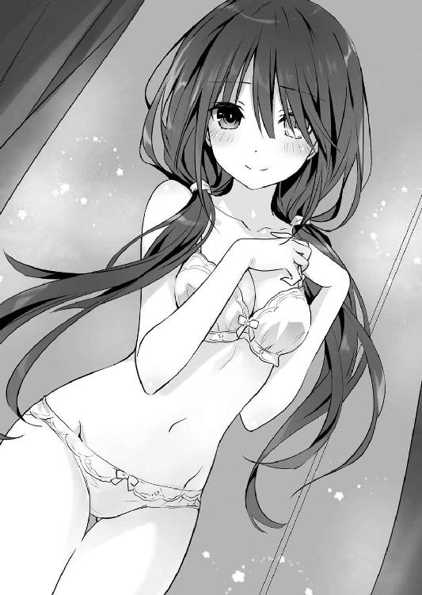
だがそれも当然だ。何しろ狂三が手渡してきたのは、今まで狂三が穿いていたと思しき、微かに体温の残るショーツだったのだから。
「うふふ。せっかくですから、今日は士道さんが選んでくれたものを着けていくことにいたしますわ。──それ、持っていてくださいまし」
「お、おう......？」
どう返したらいいかわからず、士道は頰を赤くしながらそう答えざるを得なかった。
◇
「ふむ......」
デート開始からおよそ二時間。
〈フラクシナス〉艦橋で二人の様子をモニタリングしながら、琴里は口にくわえたチュッパチャプスの棒を小刻みに上下させた。
メインモニタには、ランジェリーショップをあとにした二人が、次なる目的地に向かうために並んで道を歩く姿が映し出されている。
士道の手はしっかりと狂三の手を握り、狂三もそれを嫌がってはいない。実際、反応の幅は狭いものの、狂三の好感度は決して悪くない値を示していた。
「......妙だね」
令音も同じことを思ったのだろう。あごに手を当てながら唸るように言ってくる。琴里は「ええ」と答えて、ちらと画面端の数値に目をやった。
それは狂三の精神状態を示すものであったのだが──
「......明らかに、平時の狂三と数値に差が見られる。まるで、極度のストレス下にあるような状態だ。だが、反応から言ってシンとのデートが原因ではない。これは一体......」
「............」
令音の言葉に、琴里は渋面を作った。
精霊がストレス下にある。少なくともそれは、琴里にとって望ましい状態ではない。
しかし画面の中に映る狂三は非常に楽しげで、そんな数値を微塵も感じさせてはいなかった。そのことが逆に、正体不明の不穏な雰囲気を匂わせていたのである。
「──とにかく、みんな。油断せずにいきましょう」
『了解！』
琴里が言うと、クルーたちが一斉に声を上げた。
◇
午後一〇時。士道と狂三は公園のベンチに並んで腰掛けていた。
ランジェリーショップを出たあとも、二人はあのとき辿ったルートを巡り続けた。
あのときと同じ道を歩き、あのときと同じ店で食事を摂り──そして、最後にここへやってきたのだ。
空には暗いカーテンが掛かり、公園を照らすのは頼りなげな月明かりと、まばらに並んだ街灯くらいのものである。辺りには既に人影もなく、まるで世界に二人だけが取り残されたかのような錯覚を覚えた。
二月も半ば。日の落ちた夜の空気は冷たく、呼吸をするたびに白く色づいた吐息が漏れる。本来であればこの時期、この時間にあまり長居をする場所ではないだろう。
だがこの公園もまた、士道と狂三のデートコースには欠かすことのできないピースなのであった。
「士道さん、覚えておられまして？ この場所を」
「......ああ、覚えてるさ。嫌ってほどにな」
士道はため息交じりにそう答えた。それはそうだ。何しろこの場所は、士道が初めて狂三の凶行を、そして狂三の亡骸を目にした場所であったのだから。
「ふふ」
狂三は士道の言葉に応えるでもなく曖昧に笑うと、思い出したように鞄から可愛らしい箱を取り出した。
「そういえば、忘れるところでしたわ。──士道さん、ハッピーバレンタイン」
言って、その箱を士道に差し出してくる。
士道は苦笑しながらそれを受け取った。
「ありがとう。......って、忘れるところだったのかよ」
「ええ。だって──」
狂三は細く息を吐くと、そのままゆっくりと士道にもたれかかってきた。心地のよい重みが肩に加わり、狂三の美しい黒髪が頰をくすぐってくる。
「それくらい......今日は、楽しかったのですもの。それこそ、わたくしの記憶の中でも、指折りと言って差し支えないくらいに」
「狂三......」
士道は優しく言うと、ふっと微笑み、鞄の中から小さな包みを取り出した。
「じゃあ、俺からもだ。ハッピーバレンタイン、狂三」
「あら、あら......？」
士道が包みを手渡すと、狂三が驚いたように目を丸くした。
「士道さん......まさかとは思っておりましたけれど、やはり女の子......」
「じゃないからな!? ほら、いっとき流行った逆チョコってやつだよ。別に男が女の子にチョコをあげちゃいけないなんて決まりはないだろ？」
狂三の言葉を遮るように声を上げる。すると狂三は可笑しそうに笑ってみせた。
「うふふ、言われてみればそうですわね。──開けてもよろしいですの？」
「ああ、もちろん」
二人はうなずき合うと、互いに双方の箱を開けた。
士道が作ったのは、蜜漬けにしたオレンジピールをダークチョコレートでコーティングしたものである。黒い色味と仄かな苦みが、なんとなく狂三に似合いそうな気がしたのだ。
対して狂三の箱の中には、色や意匠の異なった一口大のチョコがたくさん詰め込まれていた。
異なった──といっても、まったく統一感がないわけではない。それらは全て、猫の形をしていたのである。まるで、先日の士道の弁当への返歌とでも言わんばかりに。
「へえ、可愛いじゃないか」
「士道さんのも、美味しそうですわ」
二人は言葉を交わし合うと、どちらからともなくチョコを口に放り込んだ。
そして頰を緩め、今度は視線を交わす。
「あはは、美味いやこりゃ。この風味......ヘーゼルナッツかな？」
「あら、さすがですわね士道さん。んん......こちらも美味しいですわ」
二人はひとしきり笑い合うと、しばしの間無言になった。
「............」
「............」
別に、話すことがなくなったわけではない。
ただ──こうして、見つめ合っていたくなっただけだ。
「............」
士道は狂三の肩に腕を回してその身体をぐっと引き寄せ、慈しむようにその頭を撫でた。
狂三は、抵抗しない。むしろその行為を望んでいたとでも言わんばかりに、すっと身を寄せてきた。
何も知らぬ者が二人の姿を見たのなら、仲睦まじいカップルであるとしか思わなかっただろう。実際このまま彼女の顎を持ちあげれば、容易に唇と唇を触れ合わせることが可能に思えた。
だが──
『......悪くないわ。悪くは──ないのよ』
インカムから聞こえる琴里の声は、そんな状況を見てなお、難しげな色を帯びていた。
それはすなわち、今キスをしたとしても、彼女の霊力を完全に封印しきることはできないということを示していた。
琴里の言葉を補足するように、令音の声が聞こえてくる。
『......狂三は噓を吐いていない。彼女は今日のデートを本当に、心から楽しんでいたとみていいだろう。シン、君にまったく心を許していないわけでもない。むしろ憎からず思っているといっていい』
だが、と令音が続ける。
『......彼女の心に、何か大きな壁がある。決意......覚悟......それに類するものだ。修験者が道のために快楽を断つように、狂三は自らに、大きな枷を課している。その正体を知り、取り去らない限り、彼女の力を封印することは不可能だろう』
「............」
──大きな、枷。
士道は無言で狂三の頭を優しく撫でながら、その言葉を心中で反芻した。
同時、士道の脳裏に、二亜と折紙の言葉が甦ってくる。
（──なんかねー、あたしの〈囁告篇帙〉で調べて欲しいことがあったみたい）
（──始原の精霊。そいつを、ぶっ殺すために）
（──三〇年前の時点で、その精霊の存在を『なかったこと』にするため）
そう。思い当たることはそれしかなかった。
狂三が【一二の弾】を以て三〇年前に戻り、精霊の存在を消し去ろうとする理由。
彼女があらゆる犠牲を払い、万の屍を積み上げてもそれを成そうとする意味。
それを、士道はまだ知らなかったのである。
「......なあ、狂三」
だから、士道は口を開いた。
確かに、この勝負に勝たねば自分が死んでしまう、というのもある。
しかし今はそれ以上に、自分に身を寄せるこの少女が心の裡に抱く願いを、想いを、そして決意を、知りたかったのである。
「はい、士道さん」
「教えてくれないか。──おまえが、始原の精霊を倒そうとしている、理由を」
「────」
士道がそう言った瞬間。
狂三の表情が、一瞬張り詰めたものになった。
だがすぐに、やれやれといった様子でふうと吐息する。
「二亜さんから聞きましたの？ おしゃべりな方ですわね」
狂三はそう言うと、ゆっくりとベンチから立ち上がり、そのまま数歩前に歩いたのち、くるりと士道の方に振り返ってきた。
夜空の下、街灯がスポットライトの如く狂三を照らす。
それはまるで、演劇のワンシーンのようだった。
「士道さん。あなたに知る覚悟がございまして？ わたくしの──すべてを」
闇夜に浮かび上がった少女の双眸が、士道を射貫くように見つめてくる。
血のように紅い右目と。
かちりかちりと時を刻む金の左目が。
「......っ」
心の中を覗き込まれるような錯覚を覚え、士道は思わず息を吞んだ。
だが、ここで退くことはできない。寒さと緊張に震えたがる手を制し、狂三の双眸を見据えながら力強くうなずく。
「──ああ。そのつもりだ」
「そう──ですの」
狂三は静かにそう言うと、優雅ささえ感じる所作で左手をゆらり、と上げた。
するとその瞬間、地面に蟠った狂三の影がぐにゃりと歪んだかと思うと、そこから古めかしい意匠の施された短銃が飛び出てきて、狂三の手に綺麗に収まった。
天使〈刻々帝〉、その短針に当たる銃である。
「な......」
突然のことに士道が驚いていると、狂三は虚空に銃口を向け、躊躇いなく引き金を引いた。辺りに、たん、たん、という乾いた音が数度響き渡る。
するとそれと同時、士道が耳に付けたインカムから、狼狽に染まった琴里たちの声が聞こえてきた。
『......!? これは──』
『映像、遮断されました！』
『自律カメラが破壊されたようです！』
「え......？」
〈フラクシナス〉クルーの動揺が鼓膜を震わせ、士道は思わず眉根を寄せた。
が、狂三の行動はそれで終わりではなかった。とん、と足を一歩前に踏み出すと、士道に肉薄し、その頰を撫でるように片手を伸ばしてきたのである。
次の瞬間。士道の耳から〈フラクシナス〉からの音声が消え──
狂三の指先に、小型のインカムが摘まれていた。
「......！」
士道が驚愕を露わにしていると、狂三はそのまま指に力を入れ、インカムを握り潰した。バチッという電子音とともに火花が散り、彼女の白い指先から煙が立ち上る。
時間にすれば、五秒にもなるまい。
そんな僅かな時間で、士道は〈フラクシナス〉との交信を断絶されてしまった。
狂三はニィと唇を歪めると、再度士道の目を見つめてきた。
「──これでも、ですの？」
「......っ」
士道は一瞬言葉に詰まりかけた。
〈フラクシナス〉との断絶はつまり、精霊の前での孤立を表す。今狂三がその気になったなら、士道は容易く『喰われて』しまうだろう。
だが──
「──それでも、だ」
士道は狂三から目を逸らすことなく、そう答えた。
確かに狂三の行動は、士道の退路を塞いだようにも見える。
だが士道にはそれが、誰にも明かしたくなかった秘密を、士道だけには教えても構わない、と言っているように見えたのである。
ならば、それに応えられないような人間に、精霊を救うなどと宣う資格はない。
「............」
狂三はそんな士道の反応に、ふっと目を伏せると、短銃を影に放り、くるりと士道に背を向けた。
「ついてきてくださいまし」
そしてそう言って、暗い道をすたすたと歩いていく。
「あ、おい」
士道は慌ててその背を追った。
そしてそのまま歩くこと、およそ二〇分。
狂三は士道を伴って、路地裏に聳える古びた雑居ビルに入っていった。
今は使われていない廃ビルらしく、あちこちが壊れていたり落書きがされていたりするものの、一応電気は通っているらしい。明滅する頼りなげな照明を辿って階段を上り、三階の一室へと辿り着く。
「どうぞ、士道さん」
「ここは......」
言いながら、士道は部屋の中を見回した。
廃ビルの一室には違いなかったが、廊下とは異なりきちんと掃除が成されていた。窓にはカーテンが引かれ、簡素ながらもベッドが置かれている。
「市内に数ヶ所あるわたくしの拠点の一つですわ。何もありませんけれど、楽にしてくださいまし」
「......なるほど。光栄だな、女の子の部屋に呼ばれるなんて」
「うふふ、今日はお上手ですわね、士道さん」
狂三はくすくすと微笑むと、コートを脱いでハンガーにかけた。次いで士道の方に手を伸ばし、小首を傾げるようにしてくる。
「ああ、ありがとう」
士道は狂三に倣うようにコートを脱ぐと、それを手渡した。
狂三は二人の上着をハンガーラックにかけると、ゆっくりと士道の方に近づいてきて──
「............」
そのまま、士道の胸元にぽすん、と身を預けてきた。
「狂三......？」
「士道さん、仰いましたわね。わたくしの全てを知る覚悟があると」
「......、ああ」
士道が答えると、狂三は数秒の間士道の胸に顔を埋めて押し黙ったのち、
「──なら、受け止めてくださいまし」
そう言って、ゆらりと左手を動かした。
いつの間にか再度短銃の握られていた、左手を。
「〈刻々帝〉──【一〇の弾】」
狂三の影が蠢き、短銃の銃口に影が吸い込まれていく。
狂三は流れるような動作で短銃を自分のこめかみに当てると──自分の頭部を通して士道を射貫くように、引き金を引いた。
◇
それは──今から一体どれくらい前のことだったろうか。
とある日。とある女子校。とあるトイレの中で。
「......ううん」
時崎狂三は一人鏡を覗き込み、そこに映り込んだ自分の顔をジッと見つめていた。
──眼帯で左目を覆った、その顔を。
「やっぱり、少し目立ちますかしら？」
言いながら、狂三は眼帯をずらし、ちらと左目を露出させた。
するとその下に隠された目が露わになり、鏡に映し出される。──金色の時計と化した、左の眼球が。
カラーコンタクトや特殊メイクの類ではない。その目には信じがたいことに長針、短針、秒針までもが付いており、かちりかちりと時を刻んでいた。
そう。先日出会った謎の少女・澪から、不思議な輝きを放つ宝石のようなものを渡されてから、狂三の左目は常人のそれとは異なる姿へと変貌してしまっていたのである。
否──正確に言うのなら、変わったのはそれだけではない。
「......うふふ」
狂三はジッと自分の目を見つめながら、小さく笑った。
尋常ならざる存在となってしまった自分の身体に、全く不安や恐怖を覚えないかと言われればそれは噓になる。だが、それよりも遥かに大きく、狂三は充実感と高揚感を覚えていたのである。
と。
「──狂三さん？ どうかされたんですか？」
「......！」
不意に声をかけられて、狂三は慌てて眼帯を元の位置に戻した。
声のした方向を向くと、いつの間にかそこに友人の山打紗和が立っていることがわかる。狂三は誤魔化すように手を振った。
「い、いえ、なんでもありませんわ」
「............」
狂三が言うと、紗和がジッと顔を見つめてきた。
「まだよくならないんですか？ その左目」
「え、ええ。少し厄介なものもらいのようですわ」
「大変ですね......どうかお大事に」
と、狂三を気遣うように言ったのち、紗和が何かを思い出したように手を打った。
「そういえば、狂三さん。今日の放課後はお暇ですか？ 叔母様が、マロンの兄弟を連れて遊びに来るのですけれど」
「え......っ!?」
突然の誘いに、狂三はピクリと眉を揺らした。
ただでさえ猫界でも上位の可愛さを誇るマロンに、その兄弟だなんて。モフモフがモフモフモフモフになるようなものである。マロンの艶やかな毛並みと肉球の感触を思い出し、狂三はしばしの間陶然となった。
が、すぐに思い直して首を横に振る。──今日は、どうしても外せない用事があったのである。
「も、申し訳ありませんけれど、遠慮させていただきますわ......」
「あら、何かご用事が？」
「ええ......少し野暮用が。また、また是非誘ってくださいまし」
「残念ですけれど、仕方ありませんね。ではまたの機会に」
「絶対、絶対ですわよ？」
「え、ええ。わかりました」
執拗に念を押す狂三に、紗和が苦笑しながら頰に汗を垂らした。
──その日の放課後。
狂三は町外れのビルの屋上に一人、佇んでいた。
赤い夕陽が背を照らし、吹き荒ぶ風が制服のスカートを揺らす。
「──来ましたわね」
狂三はぽつりと零すように喉を震わせた。するとまるでそれに合わせるかのように、背後から小さな足音が響く。
ちらと後方を見やると、そこに、先ほどまでなかった少女の姿があることがわかった。
崇宮澪。数日前狂三の前に現れ──狂三に、『力』を与えてくれた少女である。
「やあ、狂三。今日もよろしく頼むよ」
「ええ、任せておいてくださいまし、澪さん」
狂三がそう言うと同時──周囲から、音が消え去った。
そう。狂三が初めて澪と出会ったときと同じように。
詳しい原理はわからないのだが、これは澪の力によるものらしい。辺りを結界のようなもので覆うことにより、『敵』を外に逃がさないようにするという話だ。
次の瞬間、狂三の眼下で異常が発生する。
吹雪。突如として雪と氷の結晶が現れ、渦を巻き始めたのである。
そしてその直中に──『それ』はいた。
氷が人形のシルエットを取ったかのような、異常な姿。
初めて目にするタイプではあるが、間違いない。
──精霊。凄まじい力を有した、澪曰く世界を殺す怪物である。
「では、行ってまいりますわ」
狂三は短く言うと、グッと足に力を入れ、ビルのフェンスを軽々と跳び越えた。
そしてそのまま空に身を躍らせ、眼下で暴れる氷の精霊目がけて落下していく。
しかし無論、飛び降り自殺を試みたわけではない。
「〈神威霊装・三番〉」
狂三がその名を唱えると同時、全身に影が纏わり付き、淡く輝くドレスを形作っていく。
そして──
「──〈刻々帝〉！」
次いで狂三が名を呼ぶと、その両の手に精緻な細工の施された長さの異なる古式銃が二挺、顕現した。
「まったく、間の悪いときに来てくださいましたわね。──今日のわたくしは、少しばかり機嫌が悪いですわよ」
狂三は視線を鋭くすると、ビルから落下しながら、二つの銃口を氷の精霊に向けた。
──精霊を倒し、世界を救って欲しい。
自称『正義の味方』、崇宮澪はそう言って、狂三に『力』を与えてくれた。
絶対の霊装と──時と影を操る天使〈刻々帝〉。
まるで、子供向けアニメのワンシーン。友人や家族に話そうものなら、一瞬ぽかんとしたのち、らしくない冗談と笑われるに違いない、荒唐無稽な出来事である。
けれど、霊装を身に纏い、天使をその手に取った狂三には、それを一笑に付すことはできなかった。
常識の埒外にある、超常の力の実在。
そしてそれを以て討たねばならない敵の存在。
平穏な環境で育まれてきた狂三ではあったけれど、異形の怪物に襲われ、謎の少女に救われるという体験は、それを現実として受け入れるには十分に過ぎるものであった。
──斯くして時崎狂三は、精霊を狩る者となった。
命がけであることは確かであるし、恐怖心がまったくなかったわけではない。
けれど、この命はあのとき澪が助けてくれなければ既になかったものであるし──何より、『世界を救う』という目的が、狂三の心の奥底に燻る感情をくすぐったのである。
何かを為したくて、けれどその手段と方法が存在しなかった者の手に、偶然転がり込んできた異常。
自分はこの手で世界を救っているのだという実感が、狂三の心に空いた穴を埋めていったのである。
ゆえに──狂三は戦った。
自分の世界を守るため、友を、家族を守るため、街に現れる怪物を何体も殺して回った。
それが皆のためになると信じて。
それが己のためになると信じて。
それが──自分の存在意義だと、信じて。
けれどそんな夢の終わりは、存外早く訪れた。
──その日。その日も、狂三は澪とともに精霊を倒していたのだ。
全身に炎を纏った異形。一歩歩く度に周囲に熱を撒き散らし、建物を、街路樹を焼いていった。
あまりに強大、かつ恐ろしい敵。
しかし狂三は怯まなかった。両の手に〈刻々帝〉を握り、幾度も幾度も弾丸を撃ち込んだ。
「これで──終わりですわ......ッ！」
【────────────】
銃声とともに、炎の精霊が倒れ伏す。が、まだその身体は微かに蠢いていた。燼のような腕を、狂三に向かって伸ばしてくる。
「──しつこいですわよ」
狂三は息を吐きながら言うと、精霊の頭に当たる部分に銃弾を撃ち込んだ。それきり、精霊は動かなくなる。
「やれやれ......ようやく終わりましたわ」
「──ご苦労様」
「きゃっ」
突然後方から響いた声に、狂三は身を竦ませた。見やると、いつの間に現れたのかそこに澪が立っていることがわかる。
「突然現れるのはやめてくださいまし。驚くではありませんの」
狂三が言うと、澪は「すまない」と頭を下げてから言葉を続けてきた。
「あとの処理はいつも通り私がやっておくから、君は先に戻っていてくれ。確か、友人と約束があるんだろう？」
「ええ......ではそうさせていただきますわ。ごきげんよう」
狂三はそう言うと、霊装と天使を消し去り、その場から歩き去っていった。
もはや、こんなやりとりも慣れたものである。このまましばらく道を歩いていけば、澪の結界から出ることができる。
狂三はちらと時計を見やった。──今日はまたマロンの兄弟がやってくるということで、紗和の家に遊びに行く予定だったのだが、まだ少し時間に余裕があるようだったのである。
「──そうですわ」
狂三はポンと手を打つと、くるりと踵を返し、元来た道を歩いていった。
別に大層な理由があるわけではない。ただ単に、澪を一緒に紗和の家へ連れていってあげようと思っただけだ。
澪と精霊の討伐を始めてしばらく経つけれど、未だに戦場以外で彼女と話したことがなかったのである。いつも表情にどこか憂いを帯びた澪も、可愛い猫と触れ合えば笑顔になるだろう。
が──
「......え？」
路地を曲がり、先ほどまで精霊と戦っていた場所に戻ったところで、狂三は足を止めた。
そこには予想通り澪が立っていたのだが──その前に倒れ伏していたのは、異形の怪物ではなく、人間の少女だったのだ。
「......ッ」
否──それだけではない。狂三はひっと声を詰まらせた。
そう。そこに倒れていたのは。
狂三の友人、山打紗和その人だったのである。
「な......、え......っ？」
今目の前で起きていることの意味がわからず、狂三は目を見開いた。
するとそれに気づいたのだろう、澪が、ゆっくりとこちらに振り向いてきた。
「......ああ、狂三。戻ってきてしまったんだね。──残念だ。君とはもう少し、いいパートナーでいたかったのだけれど」
言いながら、澪が完全に狂三に向き直る。
──その手元に、赤く光る宝石のようなものを浮遊させながら。
間違いない。色こそ違うが、澪が狂三に渡したのと同じものである。
「ど、どういうことですの......なぜ紗和さんが......」
「ああ、もしかして知り合いかい？ それは......すまないことをしたね」
「......ッ、まさか──」
狂三は口元に手を置いた。目の前に示された材料が頭の中で線を結んでいき、途方もない嘔吐感が胃の奥からせり上がってくる。
「......やっぱり、君は頭がいい」
澪の短い答えは、狂三にとって絶望に他ならなかった。
そう。紗和の横たわっていた位置。それは、狂三が炎の精霊を撃ち殺した、まさにその場所だったのである。
そして、そこに佇む澪と、その手の中にある霊結晶。それが示すものは──
「あの精霊は......紗和さん......？」
狂三は呆然と呟きながら、心臓がぎゅうと収縮するのを感じた。
この精霊だけではない。狂三は今まで様々な場所で、五〇体以上の精霊を倒してきたのだ。もしや、それらは全て人間だったのではないか。
否、それどころか、あの霊結晶を与えられた狂三さえも──
「あ......あ、ああああああああああああああああ......ッ!?」
瞬間、狂三はその場に膝を突いた。頭が、胸が、軋むように痛む。──絶望。真っ黒い感情がじわりじわりと心を侵蝕していく感覚。狂三は自分の存在が裏返ってしまうかのような錯覚を覚えた。
──駄目だ。駄目だ。この感覚は、駄目だ。
本能的にそれを察すると同時、狂三は半ば無意識のうちに右手を掲げていた。
「......っ、ざ、〈刻々帝〉......【四の弾】......ッ──」
そしてたどたどしくその名を唱え、天使を顕現させて、自分の頭を撃ち抜く。
──対象の時間を巻き戻す【四の弾】で。
そう。自分の身体を、心を、『絶望を感じる前の状態』に巻き戻したのである。
「はぁ......っ、はぁ......っ、はぁ......っ」
息も絶え絶えになりながら、澪を睨み付ける。しかし澪は怯むでも戦くでもなく、ただ驚嘆したように目を丸くしていた。
「驚いた。自力で反転状態から脱するだなんて。──でも、助かったよ。せっかく精製した霊結晶が元に戻ってしまったら大変だから」
「反転......、精、製......？」
狂三が問うと、澪はしばしの間考えを巡らせるような仕草を見せたのち、首肯してきた。
「うん。きっと君はもう気づいてしまったとは思うけれど、精霊っていうのは霊結晶を得た人間のことなんだ。──いや、私の力を分け与えた、って言った方が正しいのかな？ 本来は最初の精霊である私だけを指す言葉だったわけだし」
「な......」
「──でも、本来の霊結晶というのは、人間の属性とは相容れないものなのさ。そんなものを無理矢理与えられたなら、溢れ出る力を抑えきれず、暴走してしまうだろう」
だから、と澪が続ける。
「霊結晶を人間に適合させるためには、精製が必要なんだ。精製した霊結晶を、適性のある人間に与えれば、きちんと自我を保ったまま精霊になってくれる。──ちょうど、君みたいにね」
「......ッ、まさか、精製、って──」
狂三は目を見開いた。頭を掠めた恐ろしい想像に、かちかちと歯の根が鳴る。
けれど澪は、至極淡々と言葉を続けた。
「うん。人間の身体を通すんだ。もちろんその人間は暴走してしまうけれど、何度かそれを繰り返すと、その身体から回収した霊結晶は、綺麗に精製されているんだよ。濾過装置みたいなものを想像してくれればわかりやすいかな？ でも、それを回収するのが大変でね。君がいてくれて本当に助かったんだ」
最悪の想像と寸分違わぬ答えを、澪が発する。狂三は再度押し寄せてこようとする絶望に対抗するよう胸に手を置いた。
──全て、理解してしまった。
狂三は、澪に利用されていただけに過ぎなかったことを。
世界を救うつもりで──人間を殺させられていたことを。
狂三は憤怒の形相になりながら、絞り出すように声を発した。
「なぜ......あなたは、そんなことを......ッ！」
狂三が絶叫じみた声で問うと、そこで初めて、澪が困ったような表情をした。
「......すまないね。本当に、すまなく思っている。君たちに恨みがあるわけではないんだ。でも私は、やめるわけにはいかない。──全ての霊結晶を、人間に託すまで」
澪はそう言うと、ゆっくりと狂三の方に手を向けてきた。
「──それまで、お休み、狂三。今まで本当にありがとう」
「何を──」
狂三はそこで言葉を止めた。
否、正確に言うのであれば、そこで、意識が寸断された。
──次の目覚めは、いつのことだっただろうか。
「......あら、あら......？」
ぼんやりとした意識の中、狂三は目を見開いた。
何やら記憶が混濁し、何も思い出せない。覚えているのは自分の名前と、自分が超常の力を有しているということくらいだった。
辺りを見回す。屋外。まるで隕石が衝突したかのように滅茶苦茶に破壊された街並みの中心に、狂三は立っていた。
「なんですの、ここは......一体......」
今目の前に広がる光景を、上手く脳が処理できない。あまりにもわからないことが多すぎた。一体ここはどこで、自分は何者で、なぜここに──
と。狂三がそんなことを考えていると、遠くから耳鳴りのような音が響いてきた。
「──あら？」
見やると、何やら機械の鎧を身に纏った人間たちが、何人も飛んでいることがわかる。その奇妙な光景に、狂三は呆然と目を見開いた。
「凄いですわね......なんですの、あれは......」
が、そう吞気なことも言っていられなかった。その人間たちが手にしていた武器を構えたかと思うと、狂三目がけて、何発もの銃弾やミサイルを放ってきたのである。
「きひ──ッ!?」
狂三はビクッと肩を震わせると、慌てて影の中に逃げ込んだ。
自分に関する記憶はすっぽりと抜け落ちているというのに、己の身体に備わった力の用い方は、何となく理解できていたのである。
「はぁ......っ、はぁ......っ、お、驚きましたわ......」
暗い空間の中、狂三は息を整えると、頭の中で状況を整理しようとした。
が、持っている情報があまりに少なすぎて、それも叶わない。何しろ今狂三がわかることといったら、名前の他には天使と霊装のことくらいで──
「────」
そこで、狂三ははたと気づいた。右手を掲げ、天使の名を唱える。
「〈刻々帝〉──【一〇の弾】......でいいのですかしら？」
少々不安を覚えながらそう言うと、手の中に銃弾が装塡された短銃が顕現した。自分でしたことだというのに、少し「わっ」と驚いてしまう。
「ほ、本当に出ましたわ」
【一〇の弾】。狂三の感覚が正しければ、対象の持つ記憶を狂三に伝えてくれる弾のはずである。ならばこれで自分を撃てば、この身体が、頭が体験したことを思い出せるはずだった。
狂三は恐る恐る銃口を自分の側頭部に押し当てると、意を決して引き金を引いた。
パン、という音が影の中に鳴り響き──銃弾が狂三の頭に吸い込まれていく。
瞬間──
「──────────」
狂三の頭の中に、濁流の如く記憶が流れ込んできた。
かつて出会った少女・澪。
彼女に騙されて犯した罪。
そして──自ら手に掛けた親友のことを。
「あ......あ、あああああ......」
狂三は手を震わせ銃を取り落とすと、その場に這い蹲るように手を突いた。
途方もない後悔が、絶望が、肺腑を満たす。
自分のしてしまったことの愚かさに、悲哀さえ覚える。
──けれど。
やがて狂三は、顔を上げた。
もはやそこには、平穏に浸ったお嬢様も、正義の味方に憧れた子供もいはしなかった。
その表情に滲むは、決意。
その隻眼に灯るは、憤怒。
澪が何を思ったのかは知らないが、狂三はまだ生きている。
そしてこの手には──世界で唯一時に干渉せし最強の天使〈刻々帝〉がある。
ならば、まだ何も終わってはいない。
世界を、やり直す。
たとえ、どんな犠牲を払ったとしても。
歴史を、作り直す。
たとえ、この身が朽ち果てようとも。
狂三は、再び二足で立って、歩き出した。
◇
「......ッ!?」
ハッと目を見開き、士道は辺りを見回した。
仄暗い雑居ビルの一室。胸元には狂三がもたれかかり、温かな体温を伝えてきている。
そこで、ようやく士道は思い出した。
自分が今、狂三とのデート中であるということを。
「い、今のは......」
白昼夢──というには時間が遅すぎるかもしれなかったけれど、感覚的にはそれに近かった。
まるで別の誰かの人生を追体験するかのような感覚。数秒前まで士道の意識は、確かに『狂三』と化していた。
そして、気づく。狂三が自分のこめかみに銃口を突きつける直前に唱えた言葉──【一〇の弾】。
士道はかつてそれを目にしたことがあった。それは、ものが持つ記憶を対象に伝える、〈刻々帝〉の能力の一つだったのである。
そして狂三は今、短銃で自分の頭を通して、士道を撃ち抜いた。
それが意味することは一つ。
今士道が見ていたのは、幻覚や夢などではなく──かつて狂三の身に起こった本当の出来事であるということだった。
「──わたくしは」
狂三が、滔々と言葉を零す。
「始原の精霊を、殺しますわ。たとえ何があろうとも。たとえ何が起ころうとも。たとえ──何をしようとも」
士道のシャツをきゅっと握りながら、続ける。
「わたくしのしていることが正しいなどと言うつもりは毛頭ありませんわ。わたくしは始原の精霊の口車に乗り、幾人もの人を殺め──そして今度はその精霊の存在を消し去るために、さらに屍を積み続けている。わたくしは悪。紛れもなく人類の敵。殺し、殺し、殺し続け、死の上に死を重ね続けた〈ナイトメア〉。もしも死後の世界というものが本当にあるのなら、わたくしは特等席で最下層行きでしょう」
でも、と、狂三の手に力が込められる。
「構いませんわ。それで、構いませんわ。わたくしが地の獄に落ちるその前に、あの女を、始原の精霊を、崇宮澪を──この手で『なかったこと』にできるのならば」
「ミ、オ......」
士道は掠れた声でその名を反芻した。ミオ。その名には聞き覚えがあったのだ。
そう。それは、真那の口から聞いた名前。霊力を暴走させ忘我の淵にあった士道が口にしたという、名前。
それに......『崇宮』。その苗字は、紛れもなく真那のものであった。
──意味がわからない。様々な情報が混濁し、士道の思考を乱していく。
しかし今の士道に、それを熟考できるような余裕はなかった。
狂三が、全てを吐き出すかのように言って、ゆっくりと吐息し──士道の服を摑む手を緩める。
「わたくしは、全てをやり直す。今まであったことを、無に戻す」
そして士道の胸に埋めていた顔を上げ、士道の目を見つめてくる。
「それが、わたくしの理由。わたくしの生きる意味ですわ。──そのために、士道さんの持つ精霊の力が必要ですの」
狂三は訴えかけるように言うと、士道が応えるより早く言葉を続けた。
「無論、綺麗事を言うつもりはありませんわ。わたくしが士道さんを『喰らえ』ば、士道さんは死んでしまうでしょう。──でも、士道さんが持つ霊力を手に入れさえすれば、わたくしはきっと、歴史を変えてみせますわ」
「歴史を──」
士道はその言葉に、かつて狂三とともに時を遡行したことを思い起こした。
そう。狂三の言っていることが夢物語でないことは、士道が一番よく知っていた。
何しろ士道は一度、この世界の歴史を改編しているのだから。
──他ならぬ、狂三の天使の力によって。
「ええ。始原の精霊さえ消し去れば、わたくしが精霊になることはありませんわ。
すなわち──士道さんがわたくしに『喰らわれる』事実もまた、消えてなくなるはず」
だから、と狂三が士道を見つめてくる。
「士道さん。どうか、どうかお願いいたします。わたくしを信じてくださるなら、その力を、その命を──ひとときだけ、貸してくださいまし」
「────」
士道をからかうようないつもの狂三とは異なる、真摯な眼差しに、士道は思わず言葉を失ってしまった。
理屈は理解できる。しかし士道にとって命を失うことに変わりはない──
と、普通であれば、考えるべき、なのだろう。
だけれど今、士道の胸の裡には、それとは別の感覚が去来していた。
──怒濤のような、後悔。
そして、身を焦がし心を灼く、怒り。
あのときわたくしが手を伸ばさなければ。
あのときわたくしが引き金を引かなければ。
あのときわたくしが精霊を討たなければ。
こんなことには、ならなかったのに。
殺さねばならない。消さねばならない。『なかったこと』にせねばならない。
友のために。世界のために。わたくしが『喰らった』命のために──
その想いが、士道自身のものでないことは明らかだった。
だが、狂三の生涯を追体験してしまったがゆえに、その情動が堪えがたいまでに士道の心を揺さぶっていたのである。
「俺、は──」
「............」
士道が震えた声を発すると、狂三は一瞬目を伏せ、そして意を決したように再び顔を上げてくる。
「無論、公平な取引とは思っておりませんわ。全てを『なかったこと』にするとはいえ、士道さんの命を要求していることに変わりはありませんもの。......だから、せめてもの誓いとして」
狂三はそう言うと、ゆっくりと手を持ちあげ、ブラウスのボタンを外していった。
「......!? お、おい......？」
狂三の予想外の行動に、思わず狼狽に満ちた声を発する。
しかし狂三は構わずに手を動かし続け、身に纏っていた服を一枚ずつ脱ぎ始めた。
今日の昼間、ランジェリーショップで士道が選んだ下着が露わになる。狂三に似合わぬようでいて、その実妖艶さを際立たせる白の下着。
手を伸ばせば、それに触れることができる。
そしてきっと、狂三はそれを拒まない。
その不思議な実感が、士道の脳を熱くさせた。
「............」
そんな士道の心を察したかのように、狂三はゆっくりと手を伸ばすと、士道の手を取った。
そしてそのまま士道の手を自分の方へと引っ張っていき、ブラジャーのストラップに指を滑り込ませる。
「────」
許容量を超えた興奮に、抵抗することができない。士道の指は狂三に導かれるままに、ストラップを肩からずり下げていった。
だが、それだけでは終わらない。狂三は同じように士道の手を引くと、胸元から腹部をなぞるように動かしていき、ショーツに指を掛けさせた。
ゆっくり、ゆっくりと手を下ろしていく。徐々に露わになる狂三の柔肌から、士道は目が離せなかった。
そして一糸纏わぬ姿となった狂三は、微かに頰を染めながら、再び士道の方を向いてくる。
「──わたくしの霊力以外のすべてを、あなたに、捧げますわ」
「何、を......」
呆然と喉から言葉が漏れる。
暗い部屋の中、カーテンの隙間から注ぐ月明かりがぼんやりと狂三の白い肌を照らす。
あまりに幻想的なその様は、士道の脳裏に劣情より先にある種の崇敬に近い感情を覚えさせた。
狂三がゆっくりと歩みを進め、士道にぴたりと寄り添ってくる。否──そのまま士道の身体をぐいと押し、後方にあるベッドに押し倒した。
狂三はそのまま士道に覆い被さると、少し呼吸を荒くしながら、士道の服のボタンに手を掛けてきた。
「お、おい、狂三......」
動揺に声を震わせながら狂三を押しのけようとするが、相手は仮にも精霊である。十香ほどではないにしろ、人間である士道が敵う道理はなかった。
いや、もしかしたら、士道の意志とは裏腹に、本能が、身体が、抵抗を拒否しているのかもしれない。
そんなことを思ってしまうくらいに、狂三は──美しかった。
何の冗談でもなく、彼女を手に入れることができるのなら、命を失っても構わないという考えが、妖しく脳裏を掠めるほどに。
「士道さん。士道さん。あなたが望むことならば、わたくしは何でもして差し上げますわ。あなたが求めることならば、わたくしは何をされても構いませんわ」
「狂、三......」
理性と本能が鍔迫り合いを起こし、脳幹が焼き切れるかのような感覚。
少しでも気を抜いてしまったなら、狂三に身を任せてしまいそうになる。
が──
「......っ!?」
狂三の指が士道の肌に触れようとした、次の瞬間。
突然凄まじい音を立てて窓が割れたかと思うと、薄いカーテンを引き千切って、幾人もの少女たちが部屋に飛び込んできた。
──まったく同じ貌をした、少女たちが。
「見ぃーつーけた」
「......って、あら？ もしかしてお楽しみ中だった？」
「それは悪いことしたわね。いいわよ、済ませちゃっても。女も知らずに死ぬっていうのも可哀想だし」
「な──」
士道は突然現れた少女たちに、驚愕の眼差しを向けた。
だがそれも当然だ。何しろそこにいたのは、数日前士道の夢に出てきた少女たちだったのだから。
「......あら、あら」
しかし、狂三の反応は士道とは少し異なっていた。
彼女の顔に浮かんだのは、驚きというよりも苛立ちと、怒りであったのである。
「精霊の贋作風情が、わたくしと士道さんの逢瀬を邪魔するだなんて、いい度胸をしているではありませんの」
狂三が裸身のまま、ゆらりと立ち上がる。
するとその言葉を聞いた少女たちの表情にも、ぴくりと変化が現れた。
「......へぇ？ 贋作、ときたかぁ」
「それはお父様を侮辱していると思っていいのね？」
「許せないなあ」
言って、視線をキッと鋭くしたかと思うと、少女たちが一斉に狂三に飛びかかる。
「狂三──！」
が、狂三は慌てるでもなく身を翻すと、いつの間にか手にしていた短銃と古式銃を少女たちに向け、連続してその引き金を引いた。
「〈刻々帝〉──【七の弾】ッ！」
「が......！」
弾に触れた少女たちが、狂三に飛びかかった姿勢のまま、空中でぴたりと静止する。
【七の弾】。撃った対象の時間を止める、〈刻々帝〉必殺の一撃である。
「──ふん」
狂三が不機嫌そうに鼻を鳴らし、少女たちに背を向ける。
するとその動作に合わせて、部屋の壁床天井に広がっていた影から何本もの『手』が伸び、少女たちの身体を影の中へと引きずり込んでいった。
「〈刻々帝〉──【四の弾】」
次いで狂三はそう言うと、銃口からまたも漆黒の弾を放った。──バラバラになった窓ガラスの破片に向けて。
次の瞬間、まるで映像を逆再生するかのように、ガラスの破片が宙に浮き、窓を形作っていった。
数秒ののち、部屋に先ほどまでと同じ静寂が満ちる。
狂三は小さく息を漏らすと、二挺の銃を影の中に落とし、士道に向き直ってきた。
「......邪魔が入りましたわね。まったく、こんなときに押しかけてくるだなんて......」
と。
そう言いかけた狂三が、不意によろめき、壁に手を突いた。
「狂三......？」
「大丈夫......ですわ。なんとも──」
狂三は笑みを作って士道に返そうとしたが──
そのまま、糸が切れた操り人形のように、がくんとその場に倒れ込んでしまった。
第五章 救済の輪廻
「──失敗、ですか」
ＤＥＭインダストリー日本支社の一室で。
部下から伝えられた報告に、エレンは不快感と嘲りを孕んだ表情で以て返した。
「妙な話ですね。アイクの〈神蝕篇帙〉で隙を衝いているというのに、ここまで失敗の記録を積み重ねるとは。一体何が問題なのでしょうか。実行者の純粋な能力不足以外に理由があるのなら伺ってみたいものですね」
「すごいなあエレン。発言にトゲしかないや」
アルテミシアが苦笑しながら言ってくる。エレンはフンと鼻を鳴らし、大仰な仕草で足を組んだ。
するとそれに合わせるようにして、部屋の入り口から数枚の紙が、風に運ばれるようにヒラヒラと舞ってきた。
そしてその中から、同じ貌をした少女たちが数名、にゅっと顔を出す。
「ふうん、言ってくれるじゃない」
「いの一番に失敗してくれた人がさぁ」
「おばさんは怒りっぽくてイヤね。歳は取りたくないわ」
「......なんですって？」
ギロリと視線を鋭くし、エレンは〈ニベルコル〉を睨み付けた。〈ニベルコル〉がわざとらしく怯えるように「きゃあ、きゃあ」と身を震わせる。
別に〈ニベルコル〉の戯言に腹を立てたというわけではないけれど、まったくないけれど、最強者たるエレンへの侮辱がどのような意味を持つのかを思い知らせておくのは無駄ではあるまい。エレンは眉根を寄せると、随意領域を展開させるべく脳内で指令を発した。
が、エレンの顕現装置が発動することはなかった。
その直前で、部屋にウェストコットが入ってきたからだ。
「やあ、皆集まっているようだね」
「──アイク」
エレンは指令を中断すると、椅子から立ち上がって姿勢を正した。それに倣って、アルテミシアもまた直立する。
「！ お父様！」
〈ニベルコル〉は表情をパァッと輝かせ、ウェストコットの元へと駆け寄っていった。
ウェストコットは、顔筋の運動のみで形作られたように無味無臭な笑みを浮かべると、〈ニベルコル〉の頭を撫でながらゆっくりとエレンたちの方へ歩いてきた。
「どうやら難航しているようじゃないか。まだ手が足りないかな？」
「いえ、そのようなことは」
エレンがそう答えようとすると、〈ニベルコル〉がその言葉を遮るように声を発した。
「聞いてよ、お父様。毎回毎回邪魔が入るの」
「そうそう。嫌になるわ。何なのあの子」
「〈ナイトメア〉っていったっけ？ 本当に邪魔。あいつさえいなければ、もう何回も五河士道の首を落としてるのに」
「ふむ......」
ウェストコットは〈ニベルコル〉たちの言葉に小さく唸ると、考えを巡らせるようにあごに手を当てた。
「〈ナイトメア〉──か。『最悪の精霊』が人間を守るとは、奇妙なこともあったものだ。〈ニベルコル〉の物量に唯一対抗できるのはあの分身体だろうが......」
「でもそれにしたって、少し凄すぎじゃないかな。〈神蝕篇帙〉で調べたポイントを、〈ニベルコル〉っていう圧倒的物量で攻めてるのに、その悉くを阻止されるだなんて」
アルテミシアが言うと、ウェストコットはもう一度小さく唸ってから、ニッと唇の端を上げた。
「もしかしたら──既に知っていたのかもしれないな。でなければ、〈神蝕篇帙〉の目を欺けるとは思えない」
「こちらの情報が漏れていた、ということですか？」
「いや。襲撃の計画を、ではない。襲撃そのものを、さ」
「......？」
ウェストコットの言葉に、エレンは不思議そうに首を傾げた。
◇
「──狂三！ 狂三！」
天宮市の外れにある廃ビル。その一室の中で、士道は突然倒れ伏してしまった狂三に駆け寄った。
狂三の裸体にシーツを被せてから、慎重にその身体を仰向けにし、口元に耳を近づけて、息があることを確認する。
小さな、しかし確かな呼吸音が鼓膜を震わせる。士道はとりあえず安堵して、狂三の肩を揺すった。
「狂三、大丈夫か、狂三！」
と。士道が狂三の意識を呼び起こすように、再度名を呼んだ瞬間。
「──お待ちくださいまし、士道さん」
狂三が、静かな声でそう答えてきた。
「......っ!?」
だが、士道は表情を困惑に染めた。床に横たわる狂三は未だ眠ったままであり、その唇はぴくりとも動いていなかったからだ。
とはいえ、その声の主の正体はすぐに知れた。
部屋の壁に蟠った影から、狂三と同じ顔をした少女が、ゆっくりとした足取りで歩み出てきたのである。
間違いない。〈刻々帝〉で生み出された、狂三の分身体だ。
狂三の分身体は士道を制するように人差し指を口元へ持っていき「しぃっ」と言うと、複雑そうな表情をしながら狂三の側で膝を折った。
「ご安心くださいまし、士道さん。眠っているだけですわ。少し、『わたくし』を休ませてあげてくださいまし」
「そ、それはいいけど、狂三は一体なんで倒れたりなんか......」
士道が言うと、分身体は狂三の頰を優しく撫でてから、士道の方に視線を戻してきた。
「無理が祟ったのですわ。ただでさえ疲弊状態にあったというのに、あんな大立ち回りをしたりするものですから」
「ど、どういうことだ......？」
「............」
士道の問いに、分身体はふっと逡巡のようなものを覗かせた。
理由はわかっている。しかしそれを士道に伝えてよいものかどうかを迷っているかのような様子だ。
するとそんな分身体の背後から、人影がもう一つ、ぬっと姿を現した。
無論これもまた、狂三と同じ貌をした分身体である。しかしその装いは赤と黒の霊装ではなく、モノトーンで構成されたゴシックロリータ調のドレスであった。胸元と頭部に美しい薔薇の意匠が施され、左目に医療用の白い眼帯を付けている。
「おまえは......」
その姿を見て、士道は目を丸くした。
それはかつて、【一二の弾】で過去に舞い戻ったときに見えた、五年前の狂三の姿だったのである。
が、すぐに理解する。〈刻々帝〉の【八の弾】が生み出す分身体は、狂三が歩んだ過去の姿を再現したもの。だとすれば五年前の姿を持った分身体がいてもおかしくはなかった。
眼帯の狂三は、躊躇する分身体の肩にぽんと手を置くと、紅い隻眼で士道の目をジッと見つめてきた。
「士道さん、あなたにそれを聞く覚悟はありまして？」
「え......？」
「何も聞かず、知らぬ振りをして、『わたくし』が目覚めるのを待てば、全ては丸く収まりますわ。それでも、あなたは真実を知りたいと仰いますの？」
眼帯の狂三が、微かに目を細めながら言ってくる。まるで心の中の戸惑いと迷いを見透かすかのような視線に、士道は一瞬たじろぎそうになった。
だが、士道は奥歯をぐっと嚙みしめると、眼帯の狂三を見返しながら力強く首肯した。
すると眼帯の狂三が、冗談めかすようにくすくすと笑う。
「あら、あら。黙って待っていれば、続きができたかもしれませんのに」
「......っ！ お、おまえなぁ」
「冗談ですわ。──あなたの決意に、感謝を」
眼帯の狂三は心なしか嬉しそうにそう言うと、ゆっくりと姿勢を正し、右手の人差し指と親指を立てて、士道を指さしてきた。
まるで──銃で士道を狙い撃つかのように。
そして、告げる。
その、あまりに非現実的で、あまりに荒唐無稽な言葉を。
「結論から言いますと──士道さん、あなたは既に死んでおられますの」
眼帯の狂三がそう言って、パン、と弾を撃つように、士道に向けた指を上に向ける。
「......は？」
士道は、眼帯の狂三が何を言っているのかがわからず、間の抜けた声を発した。
「何言ってるんだ......？ 俺が......死んでる？ おいおい、じゃあ今動いてる俺は何だっていうんだよ。いつの間にか天国に来てたとでも？」
「うふふ、それならここにいるわたくしは女神様ですわね」
眼帯の狂三が茶化すように言う。
しかしすぐに表情を落ち着かせて、あとを続けてきた。
「正しく言うのであれば、士道さんは死ぬはずだった......いえ、死んでいた『可能性』があるというところですかしら」
「何を......言ってるんだ？」
士道は当惑しながらそう返した。
死んでいた──『可能性』。そんなイフの話ならば、全人類の日常に死の可能性は潜んでいるだろう。
だが、士道はそれ以上言葉を継げなかった。眼帯の狂三の表情が、冗談や誤魔化しでそんなことを言っているようには見えなかったのである。
「............」
士道の雰囲気からそれを察したのだろう。眼帯の狂三はどこか悲しげに微笑んでから話を続けた。
◇
──二月九日の放課後。
時崎狂三は一人、校舎の屋上に立ち、フェンス越しにぼうっと天宮市の街並みを眺めていた。
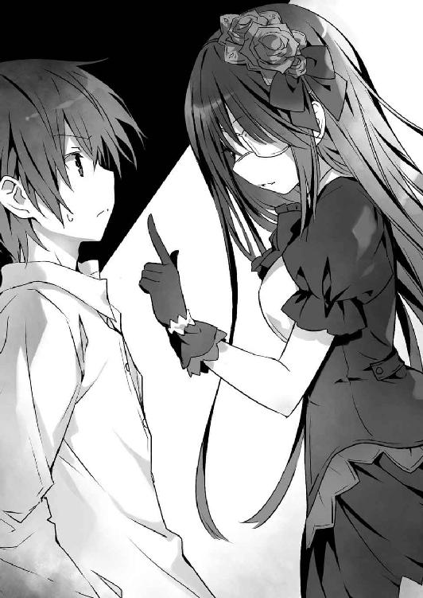
別段意味があってのことではない。郷愁に駆られたわけでもなければ、物思いに耽っているというわけでもなかった。そもそも、風景を見つめてそんなものを覚えるような健全な感性が、狂三の中に残っているか自体が怪しいものである。
もちろん狂三だって、笑いもすれば怒りもする。何かを楽しいと思うこともあるし──きっと、悲しければ涙くらい流れるだろう。
けれど、人の身に生まれながら、人生の大半を精霊として、復讐者として、そして殺人者として過ごしてきた狂三の頭の中身が、昔とまるきり同じとは、到底思えなかった。
今感じる享楽はきっと昔のそれとは違い。
今覚える悲哀はきっとかつてのそれとは異なる。
ただ、胸の奥に燃え続ける憎悪だけが、長き時を経てなお同じ貌を示していた。
「............」
陽は既に傾きかけ、ビル群に飲み込まれてしまうのももう時間の問題だろう。詳しい時刻こそわからなかったけれど、そろそろ約束の時間であることだけはなんとなく知れた。
「......待ち侘びましたわ、待ち侘びましたわ」
狂三は、フェンスに指を掛けながら、小さな声でそう呟いた。
するとそれに応えでもするかのように、狂三の足元に蟠った影の中から、くぐもった声が聞こえてくる。
『......ねぇ、「わたくし」。本当に、よろしいんですの？』
「何を、世迷い言を」
分身体の言葉に、狂三はギロリと視線を鋭くしながら返した。
「今さら後戻りはできませんわ。幾千幾万の命を喰らい、ここに立っている意味を知ってくださいまし。わたくしは、士道さんを......殺しますわ。それが、わたくしが世界を作り変える唯一の方法でしてよ」
狂三が言うと、しばしの無言のあと、影の中から先ほどとは別の分身体のものと思しき声音が響いてきた。
『今の「わたくし」は「よろしいんですの」としか言っておりませんでしたけれど、一体何を思いましたの？』
「............」
狂三は分身体の物言いにぴくりと眉を歪めると、靴の踵で自分の影を強く踏みつけた。
するとそれと入れ替わるように、鼓膜が扉が開く音を捉える。
どうやら、士道がやってきたようだ。狂三は気を取り直すようにふうと息を吐くと、ゆっくりと屋上の入り口の方へと振り向いた。
「──あら」
そこには狂三の予想通り、士道の姿があった。決意と緊張に表情を強ばらせながら、狂三をジッと見つめてきている。
「うふふ、ようこそ。よくいらしてくださいましたわね、士道さん」
狂三は頰を緩めながらそう言うと、スカートの裾を摘みながら恭しくお辞儀をする。
士道はそんな狂三の姿を見てか、一瞬微かに頰を赤らめかけたが、すぐに思い直すようにして首を振った。
と、そこで狂三はちらと士道の後方を見た。
今し方士道がやってきた扉。それが、微かに動いた気がしたのである。
──どうやら、士道が心配で十香たちが様子を窺いにきているようだ。
仕方のないこととはいえ、信用のないことである。狂三は自嘲気味に息を吐いた。
するとそれに合わせるように、士道が口を開いてくる。
「さあ、狂三。約束通り来たぞ」
狂三を真っ直ぐに見据える双眸には、確たる意志の輝きが灯り、彼の覚悟をありありと示している。
士道と出会ってからまだ一年も経っていないけれど、随分と逞しさが増した気がした。思わずふっと頰を緩める。
「──少し、変わりましたわね、士道さん」
「え......？」
「初めて会ったときよりも、顔つきが大人びている気がしますわ。まあ、あれだけの修羅場をくぐってこられたのですから、当然かもしれませんけれど。うふふ......素敵になられましたわね」
「......か、からかうなよ」
士道が照れるように返してくる。夕陽の中にあっても、その頰に朱が差していることははっきりと見て取れた。そういう可愛らしいところは、まだ変わっていないらしい。
「それより、教えてもらおうか。朝の話の続きを。おまえの霊力を封印する条件ってやつを」
「............」
士道の言葉に、狂三は笑った。
それは敵意がないことを示す表情ではあったのだけれど、もしかしたら自身の優位性や余裕を示す結果になってしまったのかもしれなかった。士道が、緊張した面持ちでこくんと喉を鳴らす。
「ええ、ええ。ではお話ししますわ。わたくしは──」
──と。
狂三がそう言いかけた、次の瞬間。
視界を一条の線が過ぎったかと思うと、目の前が真っ赤に染まった。
「え......？」
突然のことに、一体何が起こったのかがわからず、呆けた声が喉から漏れる。
一拍置いてようやく、視界を染めた赤が、士道の胸から噴き出した血の色であることが理解できた。
「────」
一瞬。
まさに文字通り瞬きの間に、士道は空から飛来した少女に、胸を刺し貫かれていたのである。
風に舞う金髪。鮮血に彩られた白金の鎧。
──魔術師、エレン・メイザースによって。
「あ......、が......ッ──？」
床に伏した士道が、苦しげに声を上げる。喀血。その口から夥しい血が吐き出される。
瞬間、閉じられていた屋上の扉が、勢いよくバンと開かれた。
「シドー！」
「士道......！」
扉の向こうで聞き耳を立てていた精霊たちが、慌てて駆け出してくる。血を吐く士道によほど動揺したのだろう。走る精霊たちの身体に淡い光が纏わり付き、限定霊装の形を取っていった。
だが──
「──ふん」
エレンはそんな精霊たちを嘲るように一瞥すると、バッと左手を掲げた。
するとユニットの一部から、何枚もの紙が射出され、エレンと士道を取り囲むように宙に舞った。
そして次の瞬間、その紙の中から、同じ貌をした何人もの少女たちが姿を現す。
「......っ!?」
それはまるで、影の中から狂三の分身体が姿を現すかのような光景。霊装のような衣を纏った少女たちが、消炭色の髪をなびかせながら、精霊たちの行く手を阻むように立ちはだかる。
「はぁい」
「悪いけど邪魔はさせないよ」
「まあどっちかっていうと邪魔してるのはあたしたちだけどね」
「な......ッ!? 何よこいつら！」
「狼狽。何者ですか」
八舞姉妹が驚愕の声を上げ、天使〈颶風騎士〉を構える。
十香と折紙も同様に、その手に顕現させた天使を振るい、少女たちに攻撃を仕掛けた。
「退けぇぇぇッ！」
「ふ──ッ」
が──少女たちは避けなかった。
その顔に薄ら笑いを浮かべたまま、〈鏖殺公〉の斬撃を、〈絶滅天使〉の砲撃を、真正面から受ける。
無論、そんなことをすればただで済むはずはない。少女たちの身体は袈裟懸けに切り裂かれ、或いは風穴を開けられる。
しかし、少女たちは苦悶を漏らすどころか痛みに顔を歪めることさえなく、カラカラと笑った。
そしてその隙を衝いて、別の少女たちが、十香の剣に、折紙の羽に、次々と組み付いていく。
「......！」
狂三は思わず表情を歪めた。──見たところ、少女たちはその身に霊力を帯びてはいるものの、十香たちを相手取れるほどの力を持っているわけではない。
だが、問題はその数。そして個の死を恐れぬ総体としての力である。
彼女らの正体はわからなかったが、同じく『数』を武器として立ち回る狂三には、その厄介さが痛いほどによくわかった。
「──『わたくしたち』！」
それを理解した瞬間、狂三は叫んでいた。
それに応えるように屋上の床に狂三の影が広がっていき、その中から、夥しい数の『狂三』が姿を現す。
そして『狂三たち』は主の意に応え、十香たちの行方を阻む正体不明の少女たちに組み付いていった。
別に、十香たちを助けたかったわけではない。だが、このまま放っておいては、エレンに士道が殺されてしまうだろう。士道の身に封印された霊力を求める狂三にとってそれは、許容しがたい事態であったのだ。
「きひひ、ひひひひひ！」
「それは、わたくしたちの専売特許でしてよ？」
「あはは、何これ」
「へえ、あんたが噂に聞く〈ナイトメア〉？ 想像以上に気色悪ーい」
『狂三たち』と少女たちが入り交じり、学校の屋上が修羅の巷と化す。
が、それだけでは足りなかった。分身体にできるのは、少女たちの相手までである。
狂三は影から短銃を抜くと、士道の背に足を乗せるエレンにその銃口を向け──
「────ッ!?」
引き金を引こうとした瞬間、その腕が綺麗に切断され、宙に舞うのを見た。
エレンからの攻撃ではない。
いつの間にか狂三のすぐ側に、もう一人の魔術師が現れていたのである。
「させないよ、〈ナイトメア〉」
「......っ、アルテミシア・アシュクロフト......！」
狂三は顔を歪めると、その金髪の少女の名を忌々しげに呼んだ。
レイザーブレイドで切断された腕に凄まじい痛みが生じる。狂三はギリと奥歯を嚙み締めそれに耐えながら、アルテミシアの追撃を紙一重で避けた。
乱戦。混戦。剣林弾雨。
数十秒と経たず、平和な学校の屋上が戦場と化す。
もはや周囲で何が起こっているのかを把握することさえ困難だった。連続して繰り出されるアルテミシアの剣閃を避けるのに精一杯で、【四の弾】を放つ間さえない。
だがその直中で、一つだけ確かなことがあった。
士道の命が、今まさに摘み取られようとしているということである。
「──終わりです」
静かに無慈悲にそう言って。
エレン・メイザースが、剣を振り下ろした。
「やめろぉぉぉぉぉぉッ！」
十香の絶叫が、戦場に響き渡る。
だが、エレンの手は止まらない。
濃密な魔力で編まれた刃は、いとも容易く、士道の首を切断した。
「────」
ごぷ、と夥しい血が溢れて。
強ばっていた士道の手足から力が抜け落ちる。
そして必死に傷口を塞ごうと、士道の胸元に揺らめいていた〈灼爛殲鬼〉の炎が、ゆっくりと消えていった。
まるで、士道の命の灯火が消えたことを示すかのように。
「あ──────」
その光景を目にした精霊たちが、呆然と天使を取り落とす。
顔が蒼白になり、指先が小刻みに震え始める。悲哀。喪失。無力感。いくら言葉を並べようと言い表せないほどの感情が、彼女らの中で荒れ狂っているのがありありとわかる。
有り体に言うのであれば──絶望に、満ちていた。
「はッ！」
「ぐ──」
幾度目とも知れないアルテミシアの攻撃を避け、狂三は悔しげに歯がみしながらも影の中へと潜っていった。
「......はぁ......っ、はぁ......っ」
影の中を移動し、狂三はようやく外界へと顔を出した。
先ほどまでいた来禅高校が一望できる高台である。公園のように整備されていないため足場は悪いが、辺りに人影がないため今はむしろ好都合だった。
「大丈夫ですの、『わたくし』」
影の中から分身体の一人がぬっと顔を出し、心配そうに言ってくる。
するとそれに次いで別の分身体が、先ほどアルテミシアに切断された右腕を持って影から這い出てきた。
「『わたくし』、これを」
「......ええ」
狂三は額に脂汗を浮かべながら応えると、残っている左手で影の中を探り、『弾』を装塡した〈刻々帝〉の短銃を取り出した。
「〈刻々帝〉──【四の弾】」
そして唱えるように言い、自分のこめかみを撃ち抜く。
瞬間、まるで時間を巻き戻すかのように、切断された腕が宙を舞い、狂三の右腕の先に貼り付いた。
「......！」
と──狂三が元に戻った手を握ったり開いたりしていると、にわかに視界の先が明るくなった。
来禅高校の屋上。その上から凄まじい閃光が幾条も り、天を、地を灼いていったのである。
り、天を、地を灼いていったのである。
断続的に響く轟音。一瞬にして崩れ落ちる校舎。
そこでようやく町中にけたたましい警報が鳴り響くが、もはや手遅れである。瓦礫と化した校舎を中心として巨大な竜巻が巻き起こり、辺りの建物を次々と破壊していったかと思うと、次いでその中心部から放射状に闇を凝縮したような漆黒の光線がり、見渡す限りの風景を焦土に変えていった。
「あれは......」
「十香さんたちが戦っていますの......？」
分身体たちが訝しげな顔をしながら光の方向を見やる。
しかし狂三は気づいていた。あれがただの霊力光ではないことに。
これだけの距離を取っているというのに、肌がちりつくような錯覚。
絶望。憤怒。憎悪。あらゆる負の感情を抜き身のままぶつけられるかのような感覚。
たとえ士道から霊力が逆流したのだとしても、このような現象は起こり得まい。単純な霊力量の多寡の問題ではない。そもそもの『質』が、全く別種のものに変貌している。
そう。言うなれば、プラスの値を、そっくりそのままマイナスにしたかのような状態だ。
その現象には覚えがあった。眉間に深い皺を刻みながら、呻くように声を漏らす。
「反転──してしまいましたのね」
「......！」
狂三の言葉に、分身体たちが息を詰まらせる。
間違いない。あの場にいた精霊たち──十香に、折紙に、八舞姉妹。全員が反転精霊となってしまったのである。
だがそれも無理のない話ではあった。何しろ、目の前で士道の首を飛ばされたのだ。彼女たちの絶望がいかばかりか、想像に難くな──
「ふ──っ」
「......っ」
狂三の思考を遮るようにそんな声がして、狂三は思わず息を詰まらせた。
見やると、影の中から新たな分身体が顔を出していることがわかる。
否──それだけではなかった。その分身体は、真っ赤な血に濡れた士道の亡骸を抱きかかえていたのである。
「『わたくし』、それは......！」
「ええ、ええ......間一髪でしたわ。あのままにしておくのも気が咎めまして」
そう言って、分身体が士道の亡骸を地面に横たえる。
「............、【四の弾】」
狂三はしばしの間無言になったのち、手にした銃で士道の身体を撃ち抜いた。
先ほどの狂三の腕よろしく、胴体と離ればなれになっていた士道の首がきれいに繫がり、胸元に空いた大穴が塞がっていく。
しかし──それだけだ。
士道は目を閉じたまま、声はおろか息一つしはしなかった。
確かに【四の弾】は時間を戻す弾。実際、士道の身体は生前の状態へと戻っていた。しかしながら、一度失われてしまった命を取り戻すことまではできなかったのである。
「............」
心を落ち着けるように深呼吸をし、これから何を為すべきか考えを巡らせる。──安らかに眠る士道の亡骸と、視界の先で広がる、世界の終わりのような光景を眺めながら。
だが。しばしの無言のあと喉から漏れたのは、
「わたくしは......失敗、しましたの......？」
そんな、諦観に彩られた言葉であった。
──つい数分前までは、上手くいっていたはずだったのだ。狂三は血が滲まんばかりに拳を握りしめた。
士道の力を手に入れ、【一二の弾】で以て三〇年前に舞い戻り、始原の精霊の存在を『なかったこと』にする。
そうすれば、全てが報われるはずだったのだ。
狂三の歩んだ幾千の月日が。
狂三の足元に横たわる幾万の命が。
それが、瞬きをするような僅かな時間で、全て無に帰した。
無に──された。
憎き魔術師、エレン・メイザースの手によって。
「あ......ああッ！」
激情に任せて、狂三は繫がったばかりの右腕で地面を殴りつけた。
いつも超然とした狂三の行動に、分身体たちがビクッと肩を震わせる。
しかし、今の狂三に、そんな分身体たちの反応を気遣う余裕などはなかった。幾度も、幾度も、拳を地面に叩き付ける。
望みを、絶たれた。希望を、打ち砕かれた。──士道を目の前で殺されるという、最悪の手段で以て。
「......っ」
そこまで考えて、息を詰まらせる。
狂三の胸の裡を筆舌に尽くし難い憎悪が荒れ回っているのは無理からぬことである。
何しろ生涯をかけた目的へと至る道を潰されたのだ。
しかも、その因縁の起点を作った女に。
それこそ、年若い狂三であったなら、十香たちと同様に反転していてもおかしくない絶望的な状況である。
だけれども。狂三は、そんな憤懣の中に、別の感情が交じっていることに気づいてしまったのだ。
嗚呼──そうだ。
狂三は愕然と目を見開きながら、血と土埃で汚れた手で額を覆った。
狂三は、目の前で士道が殺されたことが、悔しくて悔しくて仕方がなかったのだ。
悲しくて悲しくて──仕方がなかったのだ。
頭がぐるぐると混乱する。自分で至った答えのはずなのに、意味がわからない。
途方もない矛盾。狂三は士道を殺そうとしていたのに、なぜそんなことを思ってしまったのだろうか。
「士道......さん......」
脳裏を、様々な記憶が駆け巡る。そのたび頭の中で様々な感情がない交ぜになって、狂三の思考を搔き乱した。
士道。五河士道。精霊を愛し、精霊に愛された少年。時崎狂三を前にしても、恐れを乗り越え、手を差し伸べてみせた人間。
狂三は半ば無意識のうちに、士道の亡骸の肩を抱き──
その唇に、自分の唇を触れさせていた。
未だ柔らかさの失われていない、しかし冷たいキス。
その感触を覚えて、狂三はようやく気づいた。
士道との勝負に──負けてしまっていたことに。
「......二度目のキスまで意識のないときだなんて、不運なお方」
狂三はふっと目を細めた。
士道と出会った去年の六月。狂三は炎の精霊・琴里によって深手を負い、逃げ延びた。
その際、琴里と狂三の間に割って入ったのが、他ならぬ士道だったのである。
少し不格好な騎士ではあったけれど、命を救われたことに変わりはない。狂三は影の中に逃げる寸前、お礼代わりに士道の唇にキスを残してきたのだ。
今となっては、全てが無為に帰してしまったわけではあるけれど。
──だが。
「............え？」
次の瞬間、狂三は奇妙な感覚に眉をひそめた。
何と表現すればよいのだろうか。温かなものが身体の中に流れ込んでくるかのような感覚である。
それはまるで、かつて澪に霊結晶を手渡されたときにも似て──
「......〈刻々帝〉！」
それを思い出すと同時、狂三は反射的にその名を唱えていた。狂三の呼び声に応え、巨大な時計盤が影の中から姿を現す。
「......！」
「『わたくし』、これは......！」
分身体たちが、驚愕の声を上げてくる。
とはいえ、それも仕方のないことではあった。何しろその文字盤には、琴里との戦いから色が失われていた『Ⅵ』の数字が、燦然と輝いていたのだから。
「どういうことですの......？ まさか──」
狂三はゆらりと立ち上がると、その文字盤の数字を順に撫でていった。
対象を加速させる【一の弾】。
対象の時間の進みを遅くする【二の弾】。
対象を成長させる【三の弾】。
対象の時間を巻き戻す【四の弾】。
僅か先の未来を見通す【五の弾】。
対象の時間を止める【七の弾】。
過去の自分を再現する【八の弾】。
異なる時間軸にいる相手と意識を繫ぐ【九の弾】。
撃った対象の記憶を伝える【一〇の弾】。
精霊の霊力を直接喰らい、時間を越える【一一の弾】と【一二の弾】。
そして狂三の手は最後に、文字盤の一番下に位置する数字に触れた。
──今まで一つだけ色を失っていた、『Ⅵ』に。
「......【六の弾】」
狂三は小さく呟くと、士道の亡骸をちらと見た。
明らかに、【六の弾】が輝きを取り戻したのは、士道とキスを交わしてからである。
士道はキスによって霊力を封印する。それは分身体たちの調査によって狂三も知ってはいたけれど、まさか【六の弾】は、琴里に破壊されたのではなく、あの戯れの口付けによって今の今まで封印されてしまっていたとでもいうのだろうか。
もしそうだとしたら、完全ではないにしろあのときの時点で、狂三は士道に心を開いてしまっていたことになる。
狂三は自嘲気味に唇を歪めた。──デレた方が負けの勝負。もとより、狂三に勝ちの目などなかったのかもしれない。
しかし。狂三は額に汗を滲ませながら、鬼気迫る笑みを浮かべた。
【六の弾】。今の今まで封印されていた、〈刻々帝〉の一撃。
思いがけず取り戻したその『力』があったなら、この結末を変えられるかもしれなかった。
それは、希望と呼ぶにはひどく薄弱なものであったけれど──狂三を再度奮い立たせるには十分に過ぎるものだった。
けれど。狂三はまだその代償を払い終えてはいない。
正確に言うのであれば──狂三の目的を達するためには、今以上の犠牲が必要だった。
「──『わたくしたち』」
狂三が静かに声を上げると、ずらりと並んだ分身体たちが、一瞬でその意図を解したようにうなずいた。
そして、宣告する。
「士道さんのために──死んでくださいまし」
すると分身体たちは、全ての意図を察したようにカラカラと笑った。
「ええ、ええ、喜んで」
「さあ、さあ、参りましょう」
「もとよりこの身は仮初めの命」
「存分に使い潰してくださいまし」
「この命が『わたくし』の礎になるならば」
「士道さんを救うことができるならば」
「喜んで彼岸へと参りましょう」
「今さら可笑しなことを仰いますわ」
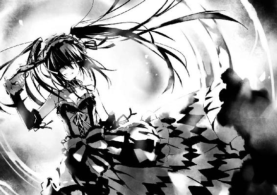
「『わたくし』もわたくしなれば」
「断ることなどありえないとわかるでしょうに」
「くすくすくす」
「くすくすくす」
分身体たちが、楽しげに笑う。
きっと誰も無事では済むまい。きっと誰も生き残るまい。
しかし彼女らの顔に、陰りは一欠片も見えなかった。
狂三はふっと苦笑した。自分と同じ貌をした少女たちの姿が、この上なく頼もしく、誇らしく思えて仕方なかったのである。──こういうのも、ナルシシズムというのだろうか。
「──ならば。わたくしに付いてきてくださいまし、『わたくしたち』。この、先のない死出の旅に」
そして狂三は銃を握った右手を掲げると、高らかに唱えた。
かつて失い、大きな代償を払って取り戻した力の名を。
この世界を作り変える可能性を持つ、もう一つの『弾』の名を。
「〈刻々帝〉──【六の弾】」
狂三は『弾』の込められた銃を自分のこめかみに突きつけると──分身体たちに笑みを向けながら、引き金を引いた。
◇
「────」
目覚めは、唐突なものだった。
否......それが果たして一般的な『目覚め』に当たるのかどうかは議論を呼ぶところではあったのだけれど。
とにかく、狂三は意識を取り戻した。即座に周囲の状況を確認する。
最低限の家具のみが置かれた薄暗い部屋。狂三が市内に幾つか持っている拠点のうちの一つである。
壁にはクリーニングしたての制服が掛かっており、情報収集用に用意した携帯電話の画面には、二月八日の日付が表示されていた。
そう。狂三は戻ってきたのだ。
二月八日。狂三が、来禅高校に復学する日の前日に。
「......どうやら、成功したようですわね」
〈刻々帝〉──【六の弾】。
それは、撃った対象の意識のみを、過去の身体に飛ばす弾である。
使用する『時間』にもよるが、遡れるのはせいぜい数日が限度であるため、【一二の弾】には遠く及ばないが──今このときにおいては、何の比喩でもなく世界を救う一発となり得る弾であった。
──だが、大変なのはここからだ。狂三は身を翻すと、掛けてあったコートを羽織り、扉を開けて部屋を出ていった。
そして廃ビルの階段を下り、ひとけのない路地裏をカツカツと歩きながら、独り言のように声を発する。
「──さて、動きますわよ、『わたくしたち』」
するとそれに応えるように、影の中から夥しい数の返事があった。
『ええ、ええ』
『時間がありませんわ』
『敵は、エレン・メイザースに、アルテミシア・アシュクロフト』
『そして、謎の少女たちですわ』
『さしあたって、士道さんを呼び出す場所を屋上から変更しては？』
「いいえ。それでは相手が襲撃方法を変えてくるだけですわよ。行動を知っているという優位性を手放すのは悪手ですわ」
『では、襲撃を行おうとしている彼女らを、わたくしたちで押さえましょう』
『ええ、ええ、それしかありませんわ』
「彼我の戦力差を考えてくださいまし。あの少女たちはまだしも、二人の魔術師たちは怪物ですわ。如何に『わたくしたち』を投入しても、両方を同時に止めることは難しいでしょう。少なくとも一人、彼女らに比肩する力を持つ味方がいなくては」
『しかし、都合よくそんな方がいらっしゃるとは思えませんわ』
『いえ、いえ。一人だけ』
『あまり頼りにしたくない心当たりが、一人、いらっしゃいますわ』
「それは──」
問おうとして、狂三はふっと苦笑した。分身体が思い描いたであろう人物が、すぐに思い当たったのである。
分身体が、あまり頼りにしたくない、というのも道理である。何しろ『彼女』は、恐らく今までで最も多く狂三の分身体を殺してきた少女だったのだから。
「なるほど、それは不愉快ですわね。しかし、彼女ほどの適任者はいらっしゃいませんわ」
狂三は歩みを緩めることなく、指示を発するように手を掲げた。
「──『わたくしたち』。真那さんの居場所は押さえてありますわね。至急交渉に向かってくださいまし」
『ええ、ええ』
『心得ましたわ』
「加えて別働隊を組成、ＤＥＭインダストリーの動きを探ってくださいまし。──琴里さんたちが何もできなかったところから見て、〈神蝕篇帙〉で警戒の穴を衝いている可能性がありますわ」
『了解ですわ』
『抜かりなく』
「恐らく、相手方も勝負に出ているのでしょう。襲撃が一度限りとは思えませんわ。常に士道さんの周りを警戒、隙を作らないようにしてくださいまし。──士道さんを殺すのは、この時崎狂三をおいて他におりませんわ」
狂三が言うと、分身体たちがくすくすと笑った。
『あら、あら』
『さすが「わたくし」』
『物騒な告白ですわね』
「......っ」
狂三は頰を赤らめ息を詰まらせると、苛立たしげに地面を踏む足に力を入れた。
そうしてから、気を取り直すように前を向き、告げる。
「征きますわよ、『わたくしたち』。──不本意ながら、世界を救って差し上げますわ」
──そうして、時崎狂三の戦いは始まった。
時間にすれば僅かに六日。
しかしその六日の間に、狂三は幾度も士道を護り、幾度も士道を喪ってきた。
敵は狡猾なるＤＥＭインダストリー。魔王〈神蝕篇帙〉を以てこちらの隙を衝き、悪魔の種子〈ニベルコル〉と、最強のカード・エレン、アルテミシアを用いて、執拗に士道の命を付け狙ってきた。
幾人もの『狂三』を犠牲にし、幾千の策謀を巡らせ、狂三は戦い続けた。
士道が死ぬたび、口付けを交わして【六の弾】を取り戻し。
それを以てもう一度、世界をやり直す。
不幸中の幸いであったのは、【六の弾】で戻されるのは狂三の記憶のみということだった。
士道が死ぬ前、【六の弾】を取り戻す前の身体に意識が戻るため、【六の弾】を使用するのに使った『時間』や、敵を止めるために散っていった分身体たちも、もとの状態にリセットされるのだ。
【六の弾】を撃つために要する『時間』は膨大であるし、分身体を作る【八の弾】も無尽蔵に撃てるわけではない。
もしもそのリセットが成されなければ、狂三の保有する『時間』はすぐに底を突いてしまっていただろう。
けれど──それは敵方にも言えることであった。
幾人〈ニベルコル〉を殺そうと、幾度エレンを退けようと、彼女らの受けた損害は、狂三が【六の弾】を撃つたび、全てリセットされてしまうのである。
否──正確に言うのなら。
彼女らは、狂三と戦ったことすら知らず、毎回初めてのつもりで士道を殺しにくるのだ。
狂三が持つ唯一のアドバンテージにして、己が身を焼く業火。
一度。
一〇度。
一〇〇度を超えて。
殺し殺されを繰り返しながら、狂三は段々と、自分の心が疲弊していくのがわかってしまった。
同じ出来事を機械的に消化し。
前の世界と異なる異常を叩いて潰す。
その中で、もとより狂っていた狂三の心が、磨り減り始めたのである。
けれど──狂三は銃を収めなかった。
士道が殺されるたび。
そして、その冷たい唇に触れるたび。
狂三は、もう一度その手に抱かれたいと思ってしまったのだ。
「士道さん......ねぇ、士道さん？」
一体これで幾度目だったか。
冷たい士道の唇に己の唇を重ね──
「また、お会いしましょう......？」
狂三は、自分の頭目がけて引き金を引いた。
◇
「な......」
眼帯の狂三の話を聞いて。
士道は、呆然と声を発した。
思わず、胸元と首を触ってしまう。無論、胸に風穴は開いていなかったし、首もきちんと繫がっていたのだけれど。
「俺が......一度、死んだ？」
非現実的な感覚に眉根を寄せながら、士道は声を絞り出すように言った。
たかだかその一言を発するのに、いやにエネルギーを使ったような気がする。それを己の口で認めることで、自分の命を否定してしまうかのような錯覚さえ覚えた。
が。眼帯の狂三はそんな士道の言葉に、ゆっくりを首を横に振った。
「いいえ。その言葉は正確ではありませんわ」
そして士道の目を見据えながら、続けてくる。
「──二〇四回」
「え......？」
「それが──この六日の繰り返しの中で、士道さんがＤＥＭインダストリーの手にかかった回数ですわ」
「────」
今度は、声さえ出なかった。
二〇四。予想外の数字に、しばし呆然とする。
構わず、眼帯の狂三が続けてきた。
「わたくしたちも気を張っていたのですけれど......げに恐ろしきは魔王〈神蝕篇帙〉ですわ。巧妙にこちらの隙を衝き、創意溢れる工夫を以て、士道さんの命を刈り取りに来ましたの」
「お、おい、待ってくれよ。そんな──」
馬鹿な、と言いかけて、士道は言葉を止めた。
方法は違えど、士道はかつて、狂三の手によって時間を遡行し、歴史を改編したことがある。如何に荒唐無稽な話であろうと、士道にそれを否定することはできなかった。
それに何より──
「............っ」
士道は気を失った狂三の顔を見やった。
いつも超然とした彼女からは考えられないくらいに疲弊した、その顔を。
たとえ士道の持つ霊力が目的であったとしても、狂三が大きな犠牲の上に士道の命を救ってくれたことが事実であるなら、それは、士道が発してよい言葉ではなかったのだ。
そんな士道の思考を察したのだろう。眼帯の狂三が隻眼を伏せながら小さく首肯する。
「『わたくし』はそのたび、【六の弾】を使って過去へと意識を飛ばしましたわ。何度も、何度も。──無論、時を超えるのは意識のみ。使用した時間や死んだ分身体も、もとの状態に戻りますわ」
ですが、と眼帯の狂三が息を吐く。
「常に心を張り詰め続け、幾度も幾度も同じ時を繰り返した『わたくし』の精神は、限界を迎えつつありましたの」
言って、眼帯の狂三が狂三の髪を優しく撫でる。
「だから──お願いです、士道さん。今だけは、『わたくし』を、休ませてあげてくださいまし」
「............」
士道は無言のまま息を吐くと、再び眠る狂三に視線を落とした。
その貌は相変わらず美しく──しかしどこか、弱々しく儚げに見えた。
理解は......できる。狂三の目的を達するためには士道の身体に封印された霊力が必要不可欠であり、ＤＥＭによって士道が殺されることは絶対に避けねばならない。狂三が何度もトライアンドエラーを繰り返し、士道を救ったのも道理ではある。
けれど、一つわからないことがあった。
狂三の閉じられた目を見つめながら、呟くように声を零す。
「なんで......おまえは、すぐに俺を『喰おう』としなかったんだ......？」
そう。それが、士道には不可解だったのだ。
確かに士道には精霊たちや〈ラタトスク〉が付いている。如何に狂三とはいえ、そう簡単にことを成せはしないだろう。
だが、狂三は【六の弾】で以て、何度も同じ時を繰り返していたというのである。士道の隙を衝くことは不可能ではなかったはずだ。
しかし、狂三はそれをしなかった。
最初に交わした約束を守り、デートをして──己の秘密を全て明かしてまで、士道に理解を求めてきた。
士道に──助けを求めてきた。
普段は見せない寝姿を士道に晒すくらいにまで、精神を疲弊させながらも。
「......士道さん」
眼帯の狂三が、ふっと口元を緩めながら士道に視線を寄越してくる。
「野暮なことを聞かないでくださいまし。『わたくし』は──」
──と。
眼帯の狂三が言おうとした瞬間、横たわっていた狂三の手が動いたかと思うと、その手に短銃が現れ、たん、と銃弾が放たれた。
漆黒の影を固めたような弾は眼帯の狂三の頰を掠め、壁に弾痕を刻んだ。一瞬あと、眼帯の狂三が驚いたように目を丸くする。
「......わたくしが眠っている間に、随分とお喋りを楽しんだようですわね、『わたくし』」
狂三が半眼を作りながら、ゆらりと身を起こす。側に控えていた分身体が心配そうに手を差し伸べるが、それを無視して立ち上がった。
「......失礼しましたわね、士道さん。年若い『わたくし』が、粗相をいたしましたようで」
狂三がふらつきを抑えるように額に手を当てながら言ってくる。
その言動はいつもの狂三のように余裕に溢れたものだったのだけれど──士道には、それが強がりのように聞こえて仕方がなかった。思わず狂三を支えるように手を伸ばしてしまう。
「狂三──」
「......っ」
狂三は士道の手を避けるように後ろに退いた。
しかし、その表情に嫌悪のようなものは見て取れない。
どちらかというと──そう、その手に触れることを恐れているかのような様子だった。
狂三はそんな自分の表情に気づいたかのようにハッと肩を揺らすと、不敵な笑みを浮かべてみせた。
「──勘違いをしないでくださいまし、士道さん。わたくしが士道さんを助けたのは、その身に封印された霊力が失われては困るからですわ」
「あ、ああ......わかってるよ」
気圧されるように士道が答えると、狂三はくるりと身を翻し、士道に背を向けた。
「......興が削がれましたわ。今日はここまでにいたしましょう」
「え──お、おい、狂三！」
士道は慌てて叫びながら手を伸ばしたが──
狂三はそのまま、分身体たちとともに影の中へと消えていってしまった。
「......っ、狂三──」
士道はしばしの間、狂三が消えた床を見つめたのち、拳を握った。
狂三。時崎狂三。
誰よりも恐ろしく、誰よりも冷酷で──誰よりも、優しい少女。
幾度となく彼女に救われた少年は、ゆっくりと顔を上げた。
その双眸に、決意の光を灯しながら。
「今度は......俺がおまえを、救う番だ......ッ」
◇
月明かりに照らされたビルの屋上に、インクを零したかのようにじわりと影が広がっていく。
狂三はその中から顔を出すと、そのまま一気に身体を外気に晒した。
「......ふう」
やはり、まだ少々ふらつきが残っているようだ。静かに深呼吸をしながら、フェンスに背を預ける。
すると狂三に続くようにして、左目に眼帯をした五年前の狂三の分身体が影から這い出てきた。
もちろん士道のもとには護衛として十分な量の分身体を残しているが、この個体をはじめとした数体は、狂三に随行させていた。
そう。先ほど狂三が気を失っている間に、士道に要らぬことを吹き込んだ犯人である。狂三は不機嫌そうな眼差しで眼帯の狂三を睨み付けた。
「──余計な真似をしてくださいましたわね、『わたくし』」
「あら、あら」
狂三が言うと、眼帯の狂三はおどけるように、或いは惚けるように、あごに人差し指を当てながら視線を外した。
「一体何のことかわかりませんわ。わたくしは、士道さんが退屈していらっしゃると思って、世間話をしていただけですわよ？」
眼帯の狂三が白々しく言う。狂三はぴくりと眉の端を動かしながら喉を震わせた。
「......『わたくし』」
が、それは眼帯の狂三に向けた呼び声ではない。
その言葉に応えるように、狂三の足元の影が蠢き、先ほどまで狂三の身体を支えていた分身体が、すまなさそうに顔を出す。
「......はい。あの眼帯の『わたくし』は、士道さんにこの数日のことを洗いざらい話しておられましたわ」
「きひっ!?」
まさかの同胞の裏切りに、眼帯の狂三が甲高い声を上げる。狂三は半眼を作ると、再度彼女を睨め付けた。
「申し開きはありまして、『わたくし』」
狂三が腕組みしながら言うと、眼帯の狂三はしばしの間唸ったのち、開き直ったように肩をすくめてきた。
「お言葉ですけれど、むしろ何がいけないのかわかりませんわ、『わたくし』。『わたくし』の決意は、労苦は、並大抵のものではありませんわ。それこそ、警戒心の強い『わたくし』が、一時とはいえ士道さんの前で寝姿を晒してしまうほどに」
「......う」
痛いところを突かれ、狂三は微かに眉をひそめた。眼帯の狂三が、勢いに任せるように続けてくる。
「ならば、それを士道さんに報せることを誰が咎められましょう。それに士道さんだって、幾度となく命を救われたとなれば、『わたくし』に感謝の念を抱こうというものでしょう？ 一体何の不都合がありますの！」
「............」
眼帯の狂三が、演説ぶるかのように大仰な身振り手振りをしながら訴えかけてくる。
狂三はしばしの無言のあと、微かに頰を染めながらそれに返した。
「......ではありませんの」
「はい？ 何と仰いまして？」
「誤解されてしまうではありませんの！ わたくしと士道さんの勝負は、デレた方の負けなのですわよ!? そんな──士道さんを助けるためにそんなことをしていたなどと知られれば、まるでわたくしが士道さんに絆されてでもいるみたいではありませんの......ッ！」
「......っ、わ、『わたくし』......？」
眼帯の狂三は驚いたように目を見開いたのち、やがて肩を震わせて笑い始めた。
「ふふ......あはははっ、そうですわね、確かにその通りですわ」
「......なんだか、馬鹿にされている気がするのですけれど」
「気のせいですわ」
眼帯の狂三が肩をすくめながら言う。
狂三は不機嫌そうに眉根を寄せた。
──自分としたことが、下手を打った。【六の弾】を撃って自分が倒れる前に舞い戻りたいところだったが、この歴史上ではまだ士道が死んでいないため、〈刻々帝〉は力を取り戻していない。
かといって、生きている状態の士道にキスなどしようものなら、逆に狂三に残った霊力が封印されてしまうやもしれなかった。
「それで......これから如何いたしますの、『わたくし』。今を切り抜けたとしても、時間はあまりありませんわよ？」
「......そうですわね」
分身体の言葉に、狂三は渋面を作った。
士道が生きている以上、作戦は続行だ。しかしこのままでは、士道を『喰らう』ことは──
と。
【......悩んでいるようだね】
「......ッ!?」
瞬間、夜闇に分身体以外の声が響き、狂三は息を詰まらせた。
高いのか、低いのか。男なのか、女なのか。それすらもわからない奇妙な声音。
それには聞き覚えがあった。即座に分身体を展開させ、古式銃を二挺、影から出現させる。
【......おや、あまり歓迎されていないようだね。私は助言に来ただけなのだが】
声を発している者の姿は、その声と同様、摑み所がなかった。
いつの間にか屋上の一角に、全身にモザイクを纏ったような影が立っている。存在の解像度が粗いとでもいうのだろうか。確かにそこにいるはずなのに、何がいるのかがわからない。
そう。士道たちに、〈ファントム〉と呼ばれている精霊だ。
狂三はかつてこの精霊に、幾度か情報提供を受けたことがあった。実際、五河士道という少年の存在自体、この〈ファントム〉からもたらされた情報だったのである。
けれど今の狂三にとって〈ファントム〉は、もう協力者ではなかった。
否。明確に──『敵』であった。
「......歓迎、ですって？ わたくしが？ あなたを？ 冗談は休み休み言ってくださいまし」
狂三が視線を鋭くしながら睨み付けると、数秒ののち、〈ファントム〉は全てを察したように息を吐いた。
【......ああ、そうか。君は知ってしまったのか。──ならば仕方ないね。残念だ。助言をしたいというのは本当だったのだけれど】
言って〈ファントム〉が、微かに動きを見せる。
「逃がすと──お思いですの......ッ!?」
狂三の声に従って、分身体たちが一斉に引き金を引き、弾を放つ。
何発もの黒い銃弾が夜闇を駆け、〈ファントム〉に襲いかかった。
【────】
〈ファントム〉が分身体たちの弾を避け、上空へと飛び上がる。
が、それこそが狂三の思うつぼである。逃げ道を作ってやるため、あえて分身体たちに上方を狙わせなかったのだ。
「〈刻々帝〉──【七の弾】！」
狂三は吠えると同時、引き金を引き絞った。
絶対無敵の【七の弾】、時間停止の一撃が、〈ファントム〉に突き刺さる。
瞬間、空中にそのモザイク模様が、ぴたりと静止した。
「『わたくしたち』！」
次いで、分身体たちが銃口を上に向け、一斉に銃弾を放つ。
哀れ〈ファントム〉は、一〇〇発近い銃弾の雨を浴び、物言わぬ屍と成り果てた。
──かに、見えた。
「......やれやれ、油断をしたね」
「な──」
前方から響いた声音に、狂三は思わず眉を寄せた。
上空には未だ静止するモザイクの塊がある。けれどその声は、その塊の直下から聞こえてきた。
屋上の床に、一人の女性が蹲るような格好で膝を突いている。
そう。まるで、【七の弾】によって停止させられた『服』を空中で脱ぎ捨て、そこへ着地したかのように。
「それが......あなたの本当の姿、というわけですの？」
狂三は油断なく銃を構えながら、その女性を睨んだ。
「......まあ、そういうことになるね。まさかこうも鮮やかに障壁を剝がされるとは思わなかったよ。さすがだね──狂三」
女性がそう言いながら、ゆっくりと顔を上げる。
その、顔を見て。
「────ッ」
狂三は、目を見開いた。
長い髪を無造作に纏めた、二〇歳くらいの女性である。
病人のように蒼白な貌。分厚い隈に彩られた双眸。身に纏った服のポケットからは、ツギハギだらけのクマのぬいぐるみが顔を出していた。
「村雨──先生」
「............」
狂三が名を呼ぶと、女性──村雨令音は、無言を以てそれに返した。
そう。月光を背に浴びながらそこに現れたのは、狂三が学校にいたときの教師、村雨令音だったのである。
無論、彼女がただの教師でないことくらいは狂三とて承知している。彼女は琴里率いる〈ラタトスク〉の機関員であり、狂三を籠絡しようとする士道の仲間である。
だが、それを加味してなお、令音の存在は意外に過ぎた。
──意味がわからない。〈ファントム〉の中身が村雨令音？ ならば狂三が知ったあの情報は──
「────────あ、あ」
だが。
狂三は、喉を絞るようにして声を漏らした。
「そういう......ことでしたの。嗚呼、嗚呼──ようやく、全てが繫がりましたわ」
「............」
狂三の言葉に、令音は微かに目を細めると、たん、と床を蹴った。
そして人間のものとは思えない跳躍力を以て、後方へと離脱しようとする。
「──！ 『わたくしたち』！」
反射的に、狂三は叫んでいた。
すると、床の上を影が蠢いていき、令音が着地した瞬間、無数の『手』がその身体を捕らえた。
「......く──」
令音が表情を歪め、『手』から逃れようと藻搔く。
しかし、多勢に無勢である。やがて令音は幾重にも『手』に拘束され──
そのまま、影に『喰われて』いった。
「............」
狂三はしばしの間、令音が飲み込まれた影に視線を落としたのち、吐き捨てるように呟いた。
「──あなたには、落ちる地獄さえありはしませんわ」
月が雲に覆われ、夜の街にさらに闇が満ちていった。
To Be Continued
あとがき
どうも。好きなジャックはフリズビー。橘公司です。
『デート・ア・ライブ16 狂三リフレイン』をお届けいたしました。いかがでしたでしょうか。お気に召したなら幸いです。
というわけで、ついにきました狂三巻。本編においては久々の登場かもしれません。まあ短編でちょくちょく書いているため、個人的にはそこまで間が空いた感じはしないのですが。
登場は３巻とかなり早く、精霊組の中でも初期メンバーに当たるのですが、一人霊力を封印されずに暗躍していたため、ここで久方ぶりの表紙＆サブタイトルと相成りました。表紙の振り向き狂三がもの凄く可愛いです。ちらりと覗くおみ足がセクシー。
いえ、表紙どころか口絵も狂三マシマシです。カラーイラスト全部に狂三がいる。もしかしたら一人のキャラが全ての口絵に出てくるって初めてかもしれません。さすがなんだぜ。
本編より先にあとがきを読まれる方もいらっしゃると思うのでネタバレは控えますが、今回はちょこちょことアレがああしてアレな感じになっております。あのシーンとかあのシーンはもの凄く楽しく書けました。
思えば狂三は、『デート』の中で最初に出来たキャラクターでした。
正確に言えば今の狂三とは少し違うのですが、僕が高校二年生くらいのときに書いた小説に、彼女の雛形となるキャラクターが存在していたからです。
ゴスロリで、髪の長さが左右違って、左目が時計。そんなキャラを思いついた当時の僕のテンションたるや。このキャラはいける、いつか世に出してやるからな、と思ってから十余年、あのときの確信は間違っていなかったと信じて疑わない。
確かあのときの設定は、特殊な時計を移植された人造魔術師が、自分の寿命を代償に特殊能力を使うというものでした。能力を使用すると時計が早く回り、その分の寿命が失われます。
そのため狂三以外にも時計持ちがいっぱいいましたが、基本は手の甲や胸元に付いているキャラが多く、眼球がそのまま時計になっているのは狂三だけだったと思います。たぶん。
そして無論、そんな狂三のポジションがヒロインであるはずはなく。狂三はヒロインの命を狙いにくるマッドな妹キャラでした。きひひひひ。ねェ、お姉様ァ？ とか言ってました。こわい。
ちなみにまったくの余談ですが、僕のデビュー作『蒼穹のカルマ』に登場していた草薙音音（大）のプロトタイプも、その話に登場していました。軍の偉い人で最強キャラの一角であり、両手の甲、両肩、胸元の五箇所に時計を持ってました。つよい。
なんだか昔書いた小説の話をするのは恥ずかしいんだぜ。
しかし今回凄いんですよ。著者プロフィールにも書いたんですが、この狂三巻、狂三スピンオフ、つなこさん画集の三冊が三月に出るんですよ！ 『三』づくし！
つなこさん画集には書き下ろし短編も載っておりますので、気になる方は是非！ なんでもここでしか見られない秘密のイラストもあるようですよ......？
東出祐一郎さんの書かれた狂三スピンオフ『デート・ア・バレット』も、キュートでハードでバイオレンスな仕上がりになっております。篩絵ちゃん好き。あいあいちゃん可愛い。こんな可愛い子たちがいっぱいいるんですから、きっとみんなで楽しくお茶会とかするに違いありません。ほっこり。巻末にも告知が載っておりますので是非チェックしてみてください！ ＮＯＣＯさんの狂三も美しいぜ！
そして巻末といえばもう一つ、何と今巻には、14巻にて復活を遂げた〈フラクシナス・エクス・ケルシオル〉の設定画が掲載されております！
デザインは前〈フラクシナス〉と同じく海老川兼武さんです！ よりシャープにかっこよくなった〈フラクシナスＥＸ〉を是非ご覧くださいませ！
惜しむらくはモノクロ収録なところ......！ これは早くマテリアル２巻を出す他ない。
さて今回も、様々な方々のご尽力によって本を出すことができました。
イラストレーターのつなこさん、見開き口絵の、分身体の上に佇む狂三がかっこよすぎます。担当氏、いつも以上に引っ張って申し訳ない。デザイナーの草野さん、毎回素敵なデザインをありがとうございます。そろそろタイトルロゴの配置に困ってきたのではないかね、くくく......
スピンオフを書いてくださった東出さん、ＮＯＣＯさん、〈フラクシナス〉をデザインしてくださった海老川さん、編集部や営業の方々、出版、流通に関わる全ての人々、そして、この本を手にとってくださったあなたに、心よりの感謝を。
さあお次は17巻。一体アレやアレはどうなってしまうのか（ネタバレ防止）。
できるだけ早くお届けできるよう頑張りますので、是非ご期待いただければと思います。
では、また次巻でお会いできることを楽しみにしております。
二〇一七年二月 橘 公司
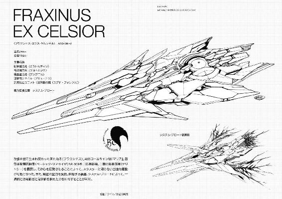
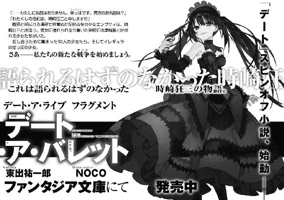
橘公司
●たちばなこうし
東京都在住。第20回ファンタジア長編小説大賞準入選作『蒼穹のカルマ』でデビュー。きひひひひ。とうとうきました三巻以来の狂三巻。しかも発売日が三月、狂三スピンオフ、つなこさん画集と合わせて三冊同時発売と、『三』づくしです。三三三、さわやか３くるみです。そしてデートも今年で六周年。なんと三の倍数......ってこれは苦しいですかね。
カバー・口絵・本文イラスト／つなこ
カバーデザイン／草野剛
デート・ア・ライブ16
狂三リフレイン
橘 公司
平成29年3月18日 発行
(C)Koushi Tachibana, Tsunako 2017
本電子書籍は下記にもとづいて制作しました
富士見ファンタジア文庫『デート・ア・ライブ16 狂三リフレイン』
平成29年3月20日初版発行
発行者 三坂泰二
発 行 株式会社ＫＡＤＯＫＡＷＡ
〒102-8177 東京都千代田区富士見2-13-3
電話 0570-002-301（カスタマーサポート・ナビダイヤル）
受付時間 9:00～17:00（土日 祝日 年末年始を除く）
http://www.kadokawa.co.jp/